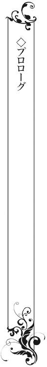
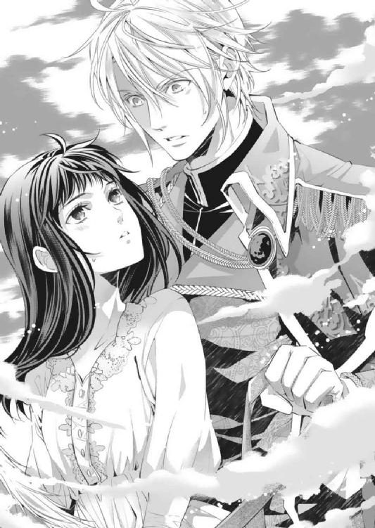
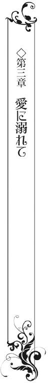

| 異世界トリップして王太子殿下の新妻になりました！？【SS付】【イラスト付】 (ロイヤルキス文庫) | |
| 立花実咲 | |
| 株式会社ジュリアンパブリッシング (2016) | |
この物語はフィクションであり、実在の人物・団体・事件等とは、いっさい関係ありません。

イラスト・えとう綺羅
『生まれ変わったら、そのときは......一緒になりましょう。だから、どうか、私を見つけて。きっと......きっと、約束よ』
幼い頃、女性の儚げな声がどこからともなく聞こえてきた。それはいつからだったか、次第に聞こえなくなっていった。
あれは、誰の声だったのだろうか──。
そんなふうに疑問を持つことも、いつの間にか時が経つとともに、忘れてしまっていた。

水瀬澄玲は、高校を卒業したばかりだというのに、春休みになってすぐ、卒業生として母校を訪れていた。
なぜかというと、自分の部屋の机の上に、返し忘れていた図書室の本があったからだ。
その本は、西洋の辞典を思わせるような、ゴシック模様のレリーフが描かれた重厚な装丁の本だった。
（こんな本借りていたかな？）
そう思いながら澄玲はページを捲ってみた。
中身もだいぶ古いもので海外のロマンス小説を翻訳したものらしい。日本語もけっこう難解な漢字が使われてあって、すぐにはどういう物語なのかわからない。肝心のタイトルからして古い時代の言葉らしく、解読できなかった。
おまけに、最後のページに原作者のサインが印字されてあるものの、肝心の奥付はなく、翻訳者名や出版社名は書かれていない、という奇妙な感じだ。
本には学校指定の図書ラベルがしっかり貼りつけられてあるのだが、やはり、どう思い出そうとしても、澄玲にはこの本を借りた記憶がまったくなかった。
（もしかして、誰かが遊びにきたときに、忘れたのかな？）
思い当たる数名の友人にメールを送った。けれど、知らないという返信ばかり。
なんとか数ページほど読んでみて、どうやら身分の違いで引き裂かれた恋人たちの物語というのだけはわかった。けれど、その先を読むにはかなりの時間がかかるだろう。
一応、大学は文学部に進む予定だし、外国語や西洋史は好きな単元だ。
でも読書は別だ。ハリー・ポッターの単行本を一冊読むのも苦労した自分が、数日で読破するのは無理だろう。
冒頭を読んでしまった身としては、話の続きが気になるところではあるが、卒業生の自分がいつまでも持っているわけにはいかない。
今日は友だちと約束をしているし、それまでに返却しておこうと思い、澄玲は母校の図書室に向かった。
本は結構な重みがある。両手で抱えていても二の腕が痺れるぐらいだ。さっさと引き渡してしまいたい。
図書室に到着すると、春休み中に窓口を担当している後輩の図書委員に渡し、返却が遅れたことを謝ろうとしたのだが──。
眼鏡をかけた図書委員の女の子が、学校内の蔵書検索をすべく、パソコンを駆使した結果、奇妙なブザーが鳴る。
そして、ついに首を捻られてしまった。
「先輩、すみません。この本は見たところ、海外の小説のようですが、図書室のものではありませんね」
「え？ そんなはずは......」
澄玲は本の背表紙を確認した。しかし学校指定の図書ラベルは貼られていなかった。パソコンの登録ミスかと疑ったが、そもそも貸出用のカードもなければリストもないのだという。
「おかしいなぁ。たしかに図書室のラベルが貼ってあった気がしたのに......」
見間違いだったのだろうか。でも、たしか、ラベルのローマ字【Ｒ-Ｓ】からはじまる英数字を組み合わせた棚番号があったと思う。テープ痕も残らないほど忽然と消えてしまっているのがまた不可解である。
図書委員の女の子は一緒に色々調べてくれたが、一向に該当するものは出てこなかった。
登録していない本が万が一持ち込まれても、トラブルにならないように必ず決められた週に整理をして省くようになっているらしい。
ちょうど昨日整理したばかりだというし、手がかりは他にない。これ以上食い下がっても迷惑になるだけだろう。仕方ないので本を回収することにした。
「付き合ってくれてありがとう」
澄玲は後輩の女の子に礼を言い、図書室をあとにした。
「無駄足になっちゃった。こんな重たい本を持ったままって邪魔よね。いったん家に戻るわけにもいかないし......」
腑に落ちないまま本を抱え、図書館から出た澄玲は、どうせなら桜並木の裏通りに出て近道をしようと考えた。
不意に、どこからともなくニャーと猫の声が聞こえた。見れば、ふわふわの白い猫が佇んでいた。
「わあ、かわいい。あなた、どこの子？」
猫はじっと澄玲を見上げ、再びニャーと鳴く。あまりの愛らしさに思わずしゃがみこんで、そっと毛並みを撫でてみた。ゴロゴロと喉を鳴らしてくれたことに感激し、ほのぼのした気持ちになる。
「......って、いけない。遊んでる場合じゃないんだった！」
腕時計を見ると、約束の時間があと十分に迫っていた。ここから待ち合わせをしている最寄りの駅まで十五分ほどかかってしまう。
（やばっ。急がなくちゃ）
澄玲は友だちに「ごめん。五分だけ遅れるかもしれない」と手早くメールを送り、重たい本を抱えながら駆け出した。
「じゃあね、猫ちゃん」
澄玲は白い猫に手を振り、それから前を向いた。
走っていると、大きな桜の木の下に黒い水たまりのようなものが見えた。
ここ数週間、しばらく晴れの日が続いていたと思うのだが、夜のうちにでも雨が降ったのだろうか？
そんなことを思いながら黒い水たまりの場所を避けて通ろうとしたのだが、黒い水たまりは既に澄玲を飲み込むかのように一面に広がっていた。
（え？）
澄玲は目を疑った。黒い水たまりかと思ったそれは、大きな穴だったのだ。
唖然としているうちに足元の土が脆く崩落し、これはまずいかもしれないという危険信号が頭の中をよぎった。
そこから先はあっという間だった。悲鳴をあげる暇もなく、吸い込まれた。
暗い、怖い、速い！ どれほどのスピードで滑っているのか、例えるのなら暗闇の中に入ったウォータースライダーのような滑らかさで、澄玲の身体は面白いように吸い込まれてゆく。
そうしてあっという間にどこかの場所に投げ出されていた。
ふわっとした浮遊感のあと、身体に衝撃が走った。
「......い、ったた」
どうやら濡れた地面にお尻から落下してしまったらしい。
「もう、誰よ、落とし穴なんて作ったの！」
澄玲は文句を言いつつ、落下した衝撃で立ち昇った砂埃に目を眇めた。
痛みをこらえながら、着ていたチュニックワンピースの汚れてしまった裾のあたりを手で払う。お気に入りの白いバレエシューズも真っ黒になってしまった。
「あーあ......ひどいなぁ」
ショックのあまり、しばし佇む。
どことなく甘酸っぱい香りが漂ってくるのにつられて見上げると、そこには、さっき目標にしていた桜の木があった。
こんなことをしている場合ではない。行かなくてはならないのに。
そう思いながら駆け出そうとしたのだが、澄玲は眼下に広がっている風景を見て、自分の目を疑った。
「な、なに......ここ......」
まず、さっき出てきたはずの高校の校舎がない。その周りを取り囲んでいたはずの桜並木が見当たらず、たった一本の桜の木が不気味なほど満開に咲いて、はらはらと薄紅色の花びらを散らしていた。
辺りは霧に包まれ、はっきりした風景が見えない。遠くの方へ視線をやれば、林立する山々と、薄暗い空にゆったりと流れる雲が見え、その奥に、古城と思わしき建物がそびえたっているのが見えた。
城の尖塔には見たことのない国旗がはためている。その下には広大な湖が広がっており、人の足ではすぐにはたどり着けないほど遠い場所にあるだろうというのだけはわかった。
「な、何なの......？ ここはどこ？」
驚いて立ち上がった拍子に、擦り剥けた膝からじんじんとした痛みが伝う。
澄玲は心細くなり、左右を見渡した。
だが、どこを見ても目に映るものといえば、緑の風景ばかり。薄暗い雑木林を先に進むのは躊躇われた。
（どうしよう。どうなってるの。私、さっきまで学校にいたのよね？）
ひんやりと肌を刺すような冷たい風にぞくりと身震いをする。
このままここに突っ立っていても仕方ない。行かなければ。
（でも、どこへ行けばいいの？）
澄玲はすぐに携帯電話を思い浮かべた。
（そういえば、バッグ！）
慌てて探すものの、どこにもバッグが見つからない。かろうじて、件の本だけが足元に落ちていた。
澄玲は本を拾いあげると、表紙についた汚れを払いながら、二手に分かれている道のどちらへ行くべきか考えた。
（とにかく、人を探さないと）
どこかに民家はないだろうか。どちらへ行ったら正解だろう。
悩んでいるうちに白い霧のようなものが流れこんできて、何も見えなくなっていく。ますます気が逸る。
そのうち、このぼんやりとした雰囲気からして夢に違いない、と澄玲は考えはじめた。現実逃避をするように目を瞑ってみる。しかし感覚は冴えてゆくばかりだ。
地面に落ちたときの痛みもある。甘い花々の匂いもする。そしてお腹も空いている。こんなリアルな夢がこれまであっただろうか。
思考の海を彷徨っていると、馬の蹄の音が近づいてくるのが聞こえ、澄玲は慌てて助けを求めようと動いた。
一体ここはどこなのだろう。見渡してみても澄玲以外に誰もいない。ただただ長く続く林の先は深い森に囲まれている。
心臓がドクン、ドクン、と不安な音を奏ではじめた。
夢じゃないとしたら......だ。桜の木の下に穴があり、そこから別の場所にたどり着いたのかもしれない。
誰かの大きな屋敷に繋がっていたのかもしれない。とりあえず今のところはそう解釈しておくことにし、少しずつ歩くことにする。
蹄の音はだんだんと近くなってくる。どちらから聞こえているのかあたりを見渡していると、突然、背後から声が届いた。
「何者だ。あやしいやつ」
びくりと身体が強張った。鋭い声で叱責され、心臓が縮みあがりそうだった。
「わ、私はあやしい者じゃありません！」
不法侵入だと思われたなら、きちんと説明しなくては。焦りながら澄玲は説明をする。
「実は、迷いこんでしまったみたいなんです。わざとここへ来たわけじゃありません」
口をついて出た声は、自分の耳にちゃんと届いた。そして馬に乗った人物ともしっかりと目が合った。
だが、霧が引いていく間に、違和感を覚えた。相手は日本人ではなかったのだ。薄茶というかグレイというか色素の薄い瞳と、亜麻色の髪に彫りの深い顔立ちからして異国の人だろう。
（あれ、でも、どこかで会った気がする......）
余裕などないはずなのに、澄玲はそんなことを思う。そしてすぐ、亡くなった大好きな父に似ているのだと気付く。
（世界には似ている人が、三人いるっていうし）
唖然としているうちに、別の蹄の音が近づいてきて、馬がすぐ側に停まる。
これまた目の前の武骨な男と同じように、重たい西洋の鎧に身を包んだ者がいぶかしんだ瞳で、澄玲を見やった。
「隊長、どうなさいましたか。その者は？」
「知らん。妙な格好をした女子がひとり座り込んでいたのが見えたものでな。なぜ、こんなところへ......」
父に似た男は忌々しげな表情を浮かべながら、なにやら逡巡している様子だ。
「夜盗に襲われでもして、逃げ延びた民では？」
と、若い騎士が提言する。
澄玲はぽかんとしたまま二人の会話を聞いていた。
（ちょっと待って。妙な格好って、そっちのことじゃないの？）
なんて上手な演技なのだろう。
それも日本語がとても流暢だ。さらに彼らの衣装にも目を奪われた。
と、そこへ、続々と馬が闊歩する蹄の音や、武装した人の足音が聞こえてくる。
「隊長、我々第一部隊のレジスタンス討伐は成功しました」
ひとりは剛健そうな男、もうひとりは頭の切れそうなすらっとした男、それから後ろに続々とやってきた男たちはみな立派な甲冑に身を包んでいる。
隊長、と呼ばれたのは、父に似た、がっちりとした体格の男だ。
彼は深紅色の上質そうなマントを羽織っており、その背にはどこかの国の騎士団とおもしき紋章がはっきりと描かれていた。
もしかして、十八世紀あたりのヨーロッパをイメージした何かの映画の撮影現場なのだろうか？
でも、さっきまで高校の図書室から出て、桜の木のもとへ走っていたはずだ。
あの落とし穴から落ちて、あそこからどうやったら、こんな場所にたどり着くというのだろう。
澄玲は不安のあまり、一緒に落っこちてきてしまった本を抱きしめながら、彼らに願いを申し出る。
「あのっ......私は一般人なんです。すみませんが、出口まで案内していただけないでしょうか？」
一斉に視線が注がれ、鎧がひしめく金属音が耳に触れた。訝しんだ部下が腰鞘の剣の柄を握ったのが見え、ぎくりと肩が強張る。
「えっ、ちょっと、待ってください。物騒な行動はやめてもらえませんか。私は、出演者じゃありませんってば」
いくら作り物とはいえ、あんなに鋭利なものを突きつけられたら怪我をしかねない。
無意識に後ずさりしてしまう澄玲に、男は仲間と顔を見合わせつつ、さらに澄玲に詰め寄った。
「我々はウィレニー王国の騎士団、第一隊だ。私は隊長のディート・ヒュルグナー。おまえの名はなんという？」
なんて重厚な声なのだろう。腹の底までずっしりと響いてくる。
「えっと、ヒュルグナーさん、ですか。ここはウィレニー王国という設定なんですね？」
澄玲は春休みぼけしていた脳内の奥から、世界史や地理を記憶の中から引っ張り出す。
そんな国あっただろうか。ドイツ周辺の小国？ それを捩ったのだろうか？
しかし考える隙は与えられなかった。
「セッテイ？ 何をわけのわからないことを言っている。答えられぬのか？」
ディートと名乗った男に嫌疑の目を向けられ、澄玲はあわあわと唇を震わせた。とにかくここは素直に従った方がよさそうだ。
「すみません。名前は、水瀬澄玲です」
「ん？ なんといった。ミナ......スミ？ 妙な名だな。聞いたこともない」
ますます疑いの目を向けられ、澄玲は狼狽する。
「ち、違います！ 澄玲、すみれ！ それぐらいわからないんですか？ さっきから上手な日本語をしゃべっているくせに、悪ふざけはしないでください」
「ニホンゴ？ シャベッテイル？ ふざけているのはおまえだろう」
ディートが苛立ったように言う。
どうしてそこだけ片言なのか！ と心の中で澄玲は突っ込んだ。
ほんとうに声に出して言ったら、倍返しされそうだからだ。
実際に意味がわからない。外国人の顔をしているのに日本語を流暢に喋っている。
だが、微妙に冗談が通じないし、言葉が伝わらない。
（そんなのってアリなの!?）
見渡したところ、撮影のクルーなどの姿はなさそうだし、演技をしているふうでもない。
これはもしかするとドッキリとか？
或いは、なりきりのコスプレイヤーたちとか？
「娘よ、早く言え。盗みでも働いたか？」
騎士たちにじりじりと取り囲まれ、澄玲は身を縮こまらせる。
彼らの今にも抜刀しそうな剣呑な視線を感じ、青ざめた。
「ひっ、そんなことしていません！ 生まれてこの方、警察のご厄介になるようなことは一度たりともしたことありませんよ！」
「ケイサツ？ スミレ......？」
こんなに日本語をはっきり喋っているくせに、なぜ微妙に伝わらないのか。もどかしくてならない。
とにかく騎士団の迫力があまりにも凄すぎて、澄玲はパニックのあまり、自分の名を連呼するほかなかった。
そのとき、幸か不幸か、澄玲の視界に、薄紫の花が飛びこんできた。
騎士隊長のすぐ足元にスミレの花があったのだ。
（そうだわ。これなら！）
こういえばきっと伝わるだろう。
澄玲は藁にも縋るような思いで、必死に菫の花に指を差し、もう一度告げる。
「わ、私は、その花と同じ名前です」
「ふむ、ヴィオレットか？」
騎士隊長は興味をもったように問い返し、眉を顰めた。澄玲はこくこくと頷く。
菫を「ヴィオレット」と呼ぶということは、やはりドイツの古城らしきものが見えたように、ここはドイツ語圏の国なのではないかと想像する。
「じゃあ、ここはドイツを意識した舞台なんですか？」
「ドイツ？ ブタイ？」
「えっと......」
（も～......中途半端なのが、一番めんどくさいって、このことを言うのかしら）
日本語では「ドイツ」だけど、ドイツ語ではドイツのことはなんと言っただろうか。
澄玲は必死に脳内の記憶を引っ張り出す。そしてようやく思い出した。
「ドイチェ？ 私......えっと、イッヒ、ラントはヤーパン......であってる？」
男の真似をして片言のドイツ語を言ってやった。しかし男は渋い顔をしたまま、まったく反応してくれない。それで？ という視線を向けたままだ。冷ややかな視線が突き刺さり、背中に汗が流れていく。
それから立て続けに英語やフランス語の挨拶をしても意味がわからないといった顔をされた。高校入試の受験勉強も第二外国語もまったく役に立たない。
ヨーロッパはたしかアジアと違って、劇的に言語の進化がなく、三百年前の人と会話をしても化学や工業の専門用語以外はおおよそ通じるというふうに授業で言われていたのに。
（先生のウソツキ......全然ダメじゃない！）
ドイツっぽいけどドイツではないなら、他にはギリシア語？ ゲルマン語？
というか、日本語が通じるのはどうしてなの？
私自身は本当に日本語を喋っているの？
もしかしてこの人には別の言葉に聞こえているの？
夢だから何でもありってやつ？
頭の中に疑問符ばかりが浮かんで、脳みそが溶けてしまいそうだ。
狼狽している澄玲を尻目に、ディートは冷ややかな口調で言った。
「ウィレニー王国だと言っただろう。ヤーパン？ 聞いたことがない。さっきからわけのわからんことばかり言うな。とにかくヴィオレット、おまえを城の方へ連れてゆく」
澄玲はがっくりと項垂れた。もう今はヴィオレットでも何でもいい。とにかく早く帰りたい。
「わかりました。お城が休憩所なのですね？ 連れていってくださるんですね？ よかった。ありがとうございます！」
とにかくこのなりきった外国の俳優たちからさっさと離れたい。父に似ているなんてとんでもなかった。強面っぽい顔とか大柄で声が大きいところは似てるけれど、こんな頑固で感じの悪い男じゃなかったもの。
「地下牢に入れられる可能性があるのに、喜ぶやつがいるか。おまえはそこから一生出られないやもしれないんだぞ」
「地下牢!? そんな冗談やめてください。あ、もしかして地下牢というのは、お手洗いのこととか？ それとも出口のことですか？」
騎士隊長を筆頭に、騎士たちはうんざりといったふうに呆れ顔を浮かべた。
「オテアライとはなんだ」
日本語の意味として使われる言葉には反応してくれないらしい。なんてもどかしい世界観なのだろうか。
「ですから......」
だんだんと苛々してくる。相手はなおさらそうだったらしい。めんどくさそうに鼻を鳴らされてしまった。
「もうおまえの言うことなど......知らん。あとの処分は我々が関知することではない。では行くぞ」
ディートが澄玲の腕をぐっと引っ張る。
「いたたっ。乱暴にしないでください」
この騎士隊長、絶対に女の人の扱いに慣れていないに違いないと澄玲は恨めしく思った。
容赦なく引っ張られ、筋肉がじんと痛む。そうして彼がマントを翻したかとおもいきや、澄玲は横に抱え込むようにして馬に乗せられてしまった。さすがに無駄に筋肉があるわけではないらしい。
（......って、感心している場合じゃない）
「お願いです。待ってください。私は、どこに掴まったらいいのですか？ 馬なんて初めて乗ったからわかりません」
夢なのか、舞台のセットなのか、よくわからないけれど、初めて馬に乗ったことについては普通に感動した。
しかし馬の背は柔らかく、見た目よりも意外に安定感がなくて、ぐらついてしまう。
「なに？ 馬に乗ったことがないのか。この辺の......田舎の娘らしからぬな」
ディートが腑に落ちない顔を浮かべながら、澄玲を横向きにしっかりと抱いて馬の腹を蹴った。
「とにかく行くぞ。落ちぬように私に捕まっていればよい」
ぐらぐらと腰が揺れ、安定感の悪さに驚く。乗馬はもうちょっと楽しいものだと思っていた。
「いやぁ、お父さん、こわい......ぃっ！ これ、うしろに捕まった方がいいのではないですか？」
不覚にも、ディートの胸にしがみついてしまった。
「オトウサン？ わけのわからないこと言うなと言っているだろう」
すかさず一蹴され、澄玲はなすがまま従うほかなかった。
（だって仕方ないじゃない。亡くなったお父さんに似ているんだもの）
ああ、そうだ。このまま落馬したら夢から覚めないだろうか。或いは、もしここがゲームの世界ならリセットしてくれないだろうか。
ふと、そんな考えがよぎったが、風を切って走る馬の速度はおそろしくスピードが出ていて、万が一にも夢じゃなかった場合はきっと、隊に連なっている後方の馬に蹴り飛ばされて死んでしまうかもしれない。
そう考えて、澄玲はやめた。
（ほんとうに、どうなってんのよ......！）
高校を無事に卒業し、春休みには友だちと旅行の計画を立てていた。沖縄の海に出かけるはずだった。
割烹屋をやっている実家から出て、母と母の再婚相手と三人の居心地の悪い暮らしからようやく離れ、春から念願の一人暮らしをはじめるつもりだった。
乙女歴十八年、誰とも付き合ったことがなく、乙女ゲームのキャラに想いを寄せるとかうちら終わってるよね、なんて類友と空笑いをして、二十歳までに彼氏見つけようと誓いあい、新たにはじまるキャンパスライフを楽しみにしていた......のに。
桜の木の下の落とし穴に落っこちたら、死んだ父親に見た目だけはそっくりの、騎士の格好をしたおかしな外人さんに馬で連れ去られるなんて......ありえない！
（せめて大好きな乙女ゲーム『イケメンドリーム王国』の王子様に助けられたかった！）
心の中で叫びながら、不意に、卒業式の校長先生の贈る言葉が脳裏をよぎった。
『人生色々な試練がきっと待っていることでしょう。でも、けっして挫けずに前を向いていれば、おのずと道は開かれるものです。神様は乗り越えられない試練は与えません。どう乗り越えられるか、その過程が大事なのです。これからの未来を歩む君たちに栄光があらんことを我々職員一同は──』
受験に合格し、やっと一つの試練を乗り越えたと思ったのに、まさかこんなに早くに新たな試練を与えられ、人生の岐路ともいえる場所に立たされるとは思ってもみなかった。
風の轟音が耳を劈くように聞こえた。
穴に落ちたときよりも、ジェットコースターなんかよりずっと怖い。
しばらくぎゅっと目を瞑っていると、馬の嘶き声が聞こえ、突然止まった。
（今度は何っ!?）
「どうした？」
「奇襲です！ どうしますか。部隊を二手に分けましょうか」
若い騎士の声が響きわたる。
「討伐は成功したと思ったが、まだレジスタンスの残党が隠れていたのか」
ディートが剣のある声で言い、舌打ちをした。
「殿下が向かった方が心配だな。うかうかしている場合ではなさそうだ」
いったい何が起ころうとしているのだろうか。胸騒ぎがする。ここにいてはいけない。そんなふうに頭の中で警笛が鳴る。
「来たぞ！」
目の前から黒い武装集団がやってきて、騎士隊たちを取り囲もうとした。
「一人残らず捕らえよ！ 殺すなよ。情報を吐かせるんだ！」
「はっ」
目の前で、騎士と武装集団がぶつかり合い、激しい剣戟が響きわたり、夥しい血が流れてゆく──。
（うそ......こんなの嘘でしょう......）
澄玲の顔から血の気が引いていく。
（どうして、血が流れているの？ これは現実......なの？）
ただ彼らが世界観に浸っているというのならそれでよかった。この場所から連れ出してくれるのなら元に戻れると思っていた。しかしそんな生ぬるい話ではないと思い知らされる。
「いやぁっ......！」
鼓動はいやなふうに脈を打ち、額からは脂汗が流れる。ディートが澄玲を守りながら敵勢を打ちはらうが、それでもやっとというところだ。
ディートが息を切らしながら言った。
「娘、おまえを守りながら進むのは無理だ。馬から降りてここをまっすぐに行け」
「そんな、私ひとりでなんて......！」
丸腰のままこの殺伐とした戦場の中を行くことができるというのだろうか。
「おまえを無駄死にさせないために必要な判断だ。今ならば戦闘に紛れて目につかない。躊躇っている暇はないぞ。すぐに行け！」
澄玲の肩がびくりと打ち震える。
ディートは本気だ。もうここから先はひとりで行くしかないのだ。
（どうすればいいの。逃げればいいの？ どこへ？）
茜色に染まる空は、まるで人の血を吸ったようにじょじょに朱色に変わってゆく。
「ぐあっ」
奇妙な声を立てて崩れ落ちてくる兵士に、澄玲は尻もちをつき、ひっと声をあげそうになった。
ぱたり、と崩れ落ち、目を開けたまま動かなくなった。
澄玲は腰が抜けそうになりながら、その場を這いつくばって茂みに隠れる。
敵勢に見つかったら、自分もああなるかもしれないのだ。第一、ディートをはじめとする騎士隊の全員が、澄玲を敵か味方かも判断がついていない。
ここにいるのは危険だ。
澄玲はがくがくする膝をなんとか押さえて、一心不乱にその場を駆けていく。
信じられなかった。人がどんどん死んでいく。ためらいなく斬り、斬られ、呻き声が聞こえたかとおもえば、こと切れてしまったのだ。
澄玲のすぐ目の前で、何度も、何度も──。
「いや、いやあぁぁ！」
嘘、嘘、どうして？
これは夢なんじゃなかったの？ 何かの撮影なんでしょう？
無我夢中で走った。景色など確認している余裕などなかった。どこへ走っているのかもわからず、とにかく出口へと向かうつもりで。その途中で、石に躓き、派手に転ぶ。
刹那、見上げた先に敵勢の兵と目が合い、ぞっとした。
兵が抜刀する。
──ああ、ここで終わるのだろうか。リセットってそっちなの？ ここで私の人生が終わってしまうの？ お願いだから殺すのならひとおもいにやって！
覚悟を決めて目をぎゅっと閉じたそのとき──。
「おまえの相手はそっちじゃないだろ！」
頭上から声が降り注ぐ。澄玲はハッとして顔をあげた。ディートとは違う、若い男の声だ。味方がすぐ側にいたのだろうか。
「くっ......」
兵の剣は打ち払われ、打ち合いとなったのち、馬から崩れ落ちる。
澄玲が腰を抜かしていると、手を差し伸べられた。
「娘、どこから来た。ひとりでこんなところに......巻き込まれたのか」
声をかけてくれたのは一人の騎士のようだが、先ほどディートが引き連れていた者たちとは雰囲気が違っていた。
琥珀の月にも似た金色の髪が風になびき、金のモールがついた白金色のマントが、暗い森の中にひと際煌めく。
美しく整った風貌をした彼の澄んだ瞳は、澄玲の好きな暁の空に似て、とても綺麗だった。
彼は澄玲の腕を引きあげ、馬に乗せてくれた。そして、澄玲の顔を覗きこんでくる。
「黒髪の乙女──」
息を呑んだようにぽつりと漏らす。

と、そこへ若い騎士が馬に乗ってやってくる。
「ここは危険です。すぐにお戻りください」
ハッとしたように我に返り、美しい騎士はマントを翻した。
「ああ、悪かった。その場合ではないな」
「敵勢の勢いが弱まりました。まもなく鎮圧します」
「よし！ 第一部隊は城に引き返す。第二部隊と第三部隊に最後を頼んだ」
金色の髪の美しい騎士はそう言い、仲間に手を挙げた。そして再び馬を蹴り、どこかへと走り出す。
澄玲はがくがくと震えながら、とにかく身を預けるようにしがみついた。もうこの人しか守ってくれる人はいない。縋るような思いだった。
「娘、案ずることはない。僕はラウレンツ・エヴァン・ウイレニー。国の人間だ。君をこれから安全な城まで連れてゆこう」
それを聞き、澄玲はひとまずホッとした。
彼からは、無骨な騎士たちとは違った、甘やかな品のいい香りがする。ウィレニーと名乗るのは王族ではないか。そうでなくても、貴族出身なのかもしれない。
「教えて......ください。これは現実なんですか。映画の......撮影じゃないんですか」
泣き縋る思いで、名の知らない騎士に尋ねた。しかし彼は首を傾げる。
「エイガ？ サツエイ？ 君の言っている意味がわからないな。しかし......伏せていろ」
耳元で急にラウレンツの声が低くなる。
彼はすばやく腰鞘から剣を引き抜き、向かってきた敵を撃つ。
刹那、血しぶきが伝った。
「きゃあっ......」
血なまぐさい匂い。指先で触れたそれはもちろん、特殊な撮影用のインクなどではなかった。
映画の撮影じゃない──。
あまりの恐怖に血の気がさっと引き、過呼吸を引き起こす。
澄玲は完全にパニックに陥ってしまった。
（いや、いやっ......こんな世界、いや──！）
耐えきれなくなったとき、それ以上考えることやめた。全身の血の気が引き、そこからすうっと意識が遠のいた。
「......っと、気を失ったか？ その方がいいよ。乙女が見るようなものではないからね」
そういう哀しげな声だけが、鼓膜の奥に届いた。
あたたかい温もり......なんだろう。とても心地よくてずっとそうして感じていたような。
ゆらゆらとした浮遊感と、身体が濡れているような感触がして、澄玲はゆっくりと瞼を開く。
ぼんやりとした頭を振るようにしてから、顔を上げると、誰かが澄玲の顔を覗き込んでくるのが見えた。
「気付いた？」
低くて甘い声がする......なんて、素敵な声なのだろう。
「僕の顔が見えるかい？」
心配そうに彼は尋ねてくる。ああ、やっぱりドキドキするいい声だ。乙女ゲームの推しキャラがこんな声だった気がする。
金色の髪の、目鼻立ちのはっきりした、それでいて甘いマスクの男性に見惚れる。
あれ、そういえば、この顔立ちって、『イケメンドリーム王国』のラウル王子に似ていない？
ああ、夢を見ていたんだ。思えば、亡くなったお父さんにそっくりのディートっていう騎士隊長が出てきたのも、そういうことだったのね。
そっか。私は望みどおりに、王子様に助けられたんだ。
やっぱり私は夢の中にいたんだ。
よかった！ ちゃんとリセットされたんだ。このまま目が覚めれば元に戻れる。
そんなふうにホッとするような気持ちで身を委ねていたのだが、ぺちりと頬を叩かれ、ハッと息を吹き返す。
「スミレ？ しっかりしてくれ。僕の顔が見えないのかい？」
美しい顔をしたラウル王子が、澄玲の顔を覗き込んでくる。
「いえ、あの、ラウル王子の、裸が......見えるのですが」
澄玲はあるがままの感想を言う。
そう、美しい顔の首の下には、セクシーな裸があった。
筋骨隆々とした身体に滴が落ちてゆく。
その下はお湯に揺らいで見えないが、何も身につけていない。
裸？
澄玲は自分の胸元をぱっと見た。確実に裸だ。
「は、は、はだっ......裸！」
「よかった。疲れていただけのようだな」
王子様が喋っている。はっきりと声が聞こえる。
「ちなみに、僕はラウレンツだ。ラウル王子ではないぞ」
金色の髪に澄んだ青の瞳......見目麗しい王子然とした男が甘い微笑みを向けてくる。
「ラウレンツ？」
「ああ、そうだ。顔色は......問題ないようだね」
抱きよせられ、額に唇が触れたのを感じた刹那、互いの胸がこすれあい、澄玲はびくりと肩を震わせた。
問題ない？ 問題ありまくりだ。
夢じゃない？ これは現実だ。
「きゃ......」
悲鳴をあげそうになった澄玲の唇をラウレンツの手が慌てて覆いかぶせてきた。
「ん──んんんッ！」
「わかった。わかったから、大声を出すな。何事かと思われるだろう」
彼は困惑した顔で、焦ったように澄玲の口元を押さえる。
そんなことを言われたって、どうしたらいいかわからない。
湯船の中に二人が浸かっていて、胸なんか丸見えの丸裸で、目の前には同じく丸裸の男性がいる。
いったい何がどうなったらこういう状況が生まれるというのか、誰か説明してほしい。
「どうしてっ......なんで、私......っ」
パニックに陥っていると、ラウレンツは申し訳なさそうに睫毛を伏せた。
「湯あみをしていたんだ。血まみれのままにしておくわけにはいかないだろう。侍女の手を汚したくもなかったから、連れてきたんだ」
「あ......」
断片的に蘇ってくる恐ろしい風景に、澄玲はぎゅっと身を硬くする。裸がどうとか構っている気分にもなれなかった。その体をそっと寄りかからせるようにして、ラウレンツは言った。
「安心するといい。悪い夢は終わったんだ」
「悪い夢、終わった......？」
「ああ、もう怖い思いはさせないよ。ここで僕が君を守ってあげるから」
ラウレンツの薄青の瞳が澄玲の不安げな顔を映し出す。
「夢......夢が終わったというのなら、私は桜の木の下にいていいはずだわ。それなのにどうして......いつまでも醒めないの？」
自分の頬をぺちぺちと叩いてみても、ちっとも景色は変わらない。ただ痛いだけだ。
「スミレ、ちょっと落ち着いてごらん」
ラウレンツが澄玲の手を止めさせ、両手を掴んだ。スミレ、と呼んでくれたことが嬉しくて、でも醒めない夢に、泣きたくなってくる。
「そうよ、澄玲よ。ヴィオレットじゃないわ。落ち着いてなんていられるわけないじゃない。私、私は、ここの人間じゃないの。夢なんだったら、どうしていつまでも醒めないの？ どうしたら現実に戻れるの？」
張りつめた糸が切れたせいか、澄玲はわんわんと泣いた。
ラウレンツが困ったような顔をして、大丈夫だからと背中をさすってくれていたけれど、やがて手に負えないとわかったのか、側に控えていた侍女を呼んだ。
「これは......泣き止まぬな。このままでは、のぼせてしまう。ナターリエ、世話をしてやってくれ」
「かしこまりました。殿下」
ナターリエと呼ばれた侍女が頭を垂れた。ラウレンツは湯から澄玲を抱き上げ、額にキスをすると、両手でそっと頬を包んだ。
「あとで会おう。それまでゆっくり休むといい」
そう言い残し、行ってしまった。
澄玲は混乱した思考の中に、するりと入ってきた「殿下」という言葉に反応する。
「え？ 殿下......ということは、彼は王子様っ!?」
「正確に申し上げますと、王太子殿下、です。次期国王になられる方ですわ。なかなか自由奔放でいらっしゃいますが、とても勇敢ですし、女性にも思いやりのあるおやさしい方です」
誇らしげに侍女が言う。
ラウレンツは澄玲のことを助けてくれたし、臣下には慕われている人物のようだ。いい人には違いない。
「さあ、お着替えをいたしましょう。ただいま水瓶をお持ちしますから、まずはお水を飲まれてください」
「あ、ありがとう」
「御礼は殿下にどうぞ」
王太子殿下......澄玲は感嘆のため息をついた。どおりで気品のある男性だと思った。
頭がぼんやりしたまま、侍女にドレスを着せてもらい、喉の渇きをゆっくりと潤す。
「殿下より、仰せつかっております。スミレさまにはこの色のドレスがお似合いかと」
明け方の空のような薄青の......澄玲が好きな本来の菫色だ。
まさかラウレンツが意味をわかっていて選んだとは考えにくい。だが、偶然だとしても、なんだかとても和やかな気持ちになる。
シュミーズという下着を着て、その上から綿モスリンのドレスを着るようだが、胸の下あたりに絞りがあり、そこからゆるやかに末広がりになった形は、澄玲が普段から好んで着ているワンピースドレスと似ていた。
袖口には精緻なレースが施され、至るところに真珠や金剛石などの宝石が縫われてあり、鏡の前でひらひらとさせるたびにきらきらと輝く。
「すてきなドレス......」
こんなときだというのに、女心というものはげんきんにできているらしい。鏡の中の別人みたいな自分の姿に見惚れてしまった。
きっと幼い頃にお姫様になりたいと願った自分が今の姿を見たら驚くことだろう。
「そのお言葉をどうか殿下にお伝えくださいませ」
侍女の一言で、澄玲はようやく我に返った。喜んでいる場合ではないのだ。
「さあ、お連れいたします。こちらへどうぞ」
それから澄玲は、侍女に案内されるままに長い回廊の先を目指した。
大広間のような場所に出ると、騎士隊長のディートが部下を引き連れ、神妙な顔をしながら誰かと話をしていた。
「娘はヴィオレットと名乗っておりますが......娼婦のような服を着て、妙な本を携えていたようです」
澄玲はその会話に耳を欹ててから、ハッとする。
そうだ、本！
さっきは取り乱してしまったが、これが現実だとわかった途端、脳が急に冷静に物事を分析しはじめた。
無我夢中で逃げたあと、ラウレンツに抱き上げられ、馬に乗ったのだった。きっとそのまま城に連れてこられたのだろう。
本は、見た目だけは父にそっくりの、騎士隊長ディートの手元にあったようだった。
（よくよく考えたら、あの本のせいよ。私がこんなところにいるのは......）
振り返ってみれば、不思議だった。どうして図書ラベルが貼ってあったはずと思い込み、母校の図書室に向かったのだろうか。結局は図書室のものではなく、追い返されたあと、桜の木の下にぽっかり穴が開いていて、まるで穴が誘い込むように澄玲を飲み込んだ。
そのあとのことは──できるなら今は思い出したくない。
ディートが件の本を献上し、報告している相手は......銀色の雫が空から流れ込んだような美しい長髪をリボンで結んだ細身の男性だった。彼もまた相当な美形だ。王宮に関わる人たちは容姿で選ばれているのではないかと思うぐらいだ。
（なんか、この人もどこかで会ったことがある気がするわ）
「本件はどのような処遇にいたしましょう？」
ディートが重々しく尋ねると、男は本の数ページをぺらぺらと捲り、それから本をぱたんと閉じてしまった。
あれはたしかロマンス小説を翻訳したもの。日本語で書かれてあるのだから、澄玲が今の段階で知りえるこの国のルールからすると、彼らに読めるはずがない。
そう予測したとおり、本を読もうとした矢先に男は眉を顰め、軽く頭を振った。
「解読不可能です。呪術書かもしれませんし、何か必要な情報が隠されているかもしれません。ですが、まずは会ってみなければ判断ができませんね」
彼はどういった立場の人なのだろう。騎士隊長が傅き、王太子の代わりに意見を求められる人間ならば、きっと官僚といわれる重鎮に違いない。現代風にいえば、頭の切れる秘書といった立場と解釈すればいいだろうか。
彼は、いかにも理知的な雰囲気を漂わせているが、アンニュイな顔立ちでため息をつく整った容姿は、澄玲の通っていた高校の女子生徒に人気だった生物教師を思い出させた。
（そうだ、誰かに似てると思ったら、生物の三上先生に似ているんだ）
クールなところがモテていて、常に先生の周りには女子生徒が集まっていた。しかし女性には興味がないと一蹴し、ウーパールーパーを飼っているような教師だったのだが。
「お話中のところ失礼いたします。ヴィオレット様をお連れいたしました」
侍女が声をかけると、一斉に男たちの視線が澄玲の方に向けられた。それは剣の切っ先を喉にあてがわれたかのようにも感じられる鋭いものだった。
──先生、この劇はなんの冗談なんです？ そんなふうに言えたらどれほどよかったか。
長槍を持った兵たちに取り囲まれ、緊迫した空気が漂う今、その場合ではない。なにより身体を洗っても、騎士たちにまとわりつく錆びた鉄のような匂いに咽そうになり、夢なのではないのだと突きつけられるようだった。
今でも、あの恐ろしい戦場の光景が記憶にこびりついて離れない。
「私は王太子殿下の側近のエルマー・ギレッセンと申します。あなたは、ヴィオレット......ですね？」
エルマーと名乗った彼は、一見、優男のようだが、声色が氷のように冷ややかに感じられ、澄玲は喉の奥がぎゅっと締めつけられたみたいに声が出なかった。
落ち着こう。この人は三上先生じゃない。
ディートやラウレンツがそうだったように、他人の空似なのだ。
さっきみたいに取り乱したり、パニックに陥らないよう、澄玲はすうっと深呼吸してから、口を開く。
「いいえ。ヴィオレットではありません。私はスミレといいます」
「スミレ？」
「私の国の言葉でそう言います。ヴィオレットの花、と同じ意味があるんです」
これでもう何度目の説明だろう。
「まだそのようなことを言っているのか。頑固な娘だ」
ディートが呆れたように言った。
澄玲だって何度も言うのが疲れてくる。でも、ヴィオレットと呼ばれたくない澄玲なりの拘りがあるのだ。しかしこの状況で話す内容ではない。
「まあいいではないですか」とエルマーはディートを諫め、澄玲の顔をじっと覗き込んでくる。
「黒髪に、黒い瞳......たしかに我が国ウィレニーにはなかなかない珍しい人種。隣国を超え、海の向こうへ渡れば、多くいるのでしょうが......大抵は奴隷です。それも人形扱いの、ね」
切れ長の瞳がすっと細められ、澄玲はこくりと喉を鳴らした。人形という言葉に青ざめる。
まさか奴隷になれと言われるのではないだろうか、と不安に駆られた。
「では尋ねましょうか。どこの国からウィレニーへ？」
既に審議にかけられているような気になり、たちまち身体が強張る。
「閣下、こやつは娼婦を装った間者かもしれません。レジスタンスがどこと繋がっていたか、拷問部屋で吐かせましょうか」
ディートが、ちらりと澄玲を一瞥する。
娼婦だ、間者だ、拷問部屋だ、とおそろしい単語の羅列に耐えられなくなり、澄玲は慌てて口を開く。
「そんな！ 私は違います！ レジスタンスのことなんて知りません。ただ、巻き込まれただけです」
身体が震えるのを抑えつけるように、澄玲は必死に声を張り上げる。
女性への拷問は、ともすれば純潔を奪うような事例もあったらしいと記憶している。どこの国の誰かもわからない人間に犯され、殺されるのなんて御免だ。
「ならば、どうしてひとりだけ、あの場にいた？ やり口としては誘惑をしてだまし討ちにするという手もある」
「私は、そんなことしません！」
だいたい男性経験のない澄玲が、そんな高度なテクニックを使えるはずがない。
「口を割りませんね」
ディートがため息をつく。エルマーは様子を窺っているようだ。騎士たちは緊迫したその場を見守っている。侍女のナターリエは幾らか情があるのか、はらはらしたように固唾をのんでいる。
ラウレンツに助けられる前は、ディートが命を守ってくれたのに、やはりあれは一時的に連れていくためのものであり、信頼が得られたわけではないようだ。
彼らの話の流れから察するに、反政府軍が国家転覆を狙い、レジスタンスを集結させ、その鎮圧に騎士隊が駆り出されていたらしい。
あのとき澄玲が現れたことにより敵勢に囲まれた経緯があるから、疑われるのも致し方ないことなのかもしれない。
でも、澄玲の口から幾ら説明したって話が通じない。
（どうしたらいいの......）
「本当に......本当に知らないのです」
それしか澄玲には言えない。説明する気力ももはやなかった。
いたたまれなさのあまり、いっそのこと逃げ出してしまおうかと思った。でも、そうしたらますます嫌疑をかけられ、処刑されてしまうかもしれない。
まさに八方塞がりだ。
（そんなの嫌。こんなわけのわからない世界で死ぬなんて......まだ一度だって恋をしたことがないのに）
不意に、ラウレンツの笑顔と手を差し伸べてくれた彼の言葉を思い浮かべた。
『......もう怖い思いはさせないよ。ここで僕が君を守ってあげるから』
どれほどあのとき心が救われたか。じわっと瞼が熱くなってくる。
「ラウレンツが、私のことを守ってくれるって言ったの。それで私はここに連れてこられたのに......」
涙がこみ上げてきそうになるのをぐっとこらえて、澄玲は訴えた。
「こら、娘。殿下のお名前をそのようにお呼びするものではないぞ」
ディートがいきり立ったように言うのを、エルマーは即座に牽制した。
「ディート。本件は王太子殿下の管轄で起きたこと。まずは殿下の判断を待ちましょう。命が下っていないうちから我々の一存で決めるわけにはいきません」
「は、出過ぎた真似を失礼いたしました」
ディートは下がり、腰を落とした格好のまま頭を垂れた。
「一つだけ聞きます。スミレ、といいましたか」
「......はい」
「殿下があなたをお守りするとおっしゃったのですね？」
「はい」
「この状況で嘘をつけばどうなることか、娘でも検討がついていることでしょう。同じように殿下がお守りすると約束した娘の身に何かがあれば......我々に処罰が下ることになりますね」
エルマーの一言に、ディートをはじめとする騎士隊が一斉に表情を強張らせた。
「それは......しかしっ......」
ディートが言葉を詰まらせる。エルマーは澄玲の方に視線をよこした。
（あ......もしかしてギレッセンさんは......守って、くれたの？）
と、エルマーの視線が澄玲の肩越しにすり抜けていく。
なんだろうと思って澄玲もつられたようにその方向を見た。
「すまない。遅くなった」
そう言って現れたのは、ラウレンツだった。澄玲は縋るような思いでラウレンツを見上げた。
彼は最初に出会ったときみたいに騎士たちと同じ甲冑に身を包んでいるわけではなく、上質そうなウエストコートに上衣を羽織り、首にはクラヴァットが巻かれ、長ズボンの上に膝丈の靴を合わせた王子様そのものの姿だった。
こうして明るいシャンデリアの灯の真下にいると、美しい金色の髪や整った面立ちがよりいっそう輝いて見える。
ラウレンツは澄玲を目にすると、なにかに魅入られたように近づいてきたかとおもいきや、ふわりと笑顔を咲かせた。
「思ったとおりだ。ドレス、黒髪の君に、とっても似合ってるよ」
唯一の味方ともいえる人にやさしい声をかけられ、澄玲は心細さのあまりにラウレンツのもとに駆け出し、思いきりぎゅっと抱きついた。相手が王太子だろうが王子だろうが無礼だと言われようが、今このときはなんでもよかった。
（......だって、このままじゃ、殺されるかもしれないんだもの！）
「っと......」
意表を突かれたラウレンツが、戸惑いながらも澄玲をそっと抱き寄せてくれる。
後ろからは剣呑な叫びが届いた。
「娘！ 殿下からすぐに離れろ」
ディートが掴みかかる勢いでやってこようとする。だが、ラウレンツが腕の中にすっぽりと抱きしめて守ってくれた。
「......構うな。この娘も色々と混乱している。よってたかって虐めることはないだろう」
ラウレンツが睨みをきかせると、ディートはぐっと押し黙った。しかしやはりそのままではいられないと言わんばかりに口を挟んでくる。
「し、しかし危険です。殿下、間者かもしれないのですぞ」
「この子はそういうことをしないよ。間者でもない」
「なぜ、そう言いきれるのです」
「なんとなくさ。彼女からはそういう邪の気は感じない。そうだろう？ エルマー」
納得のいかない表情を浮かべるディートと対照的に、エルマーが冷ややかな顔して判断を仰いだ。
「......では、殿下、いかがいたしましょうか」
「よい助言役を呼んできたから聞くといい」
ラウレンツがそう言い、隅の方へと顎をしゃくった。気付かなかったがそこに白いローブをかぶった老婆が待機していた。顔が中途半端に見えないのが、なんだか気になる。
「巫女殿ですか」
エルマーの言葉に、「ああ」とラウレンツは答えた。それから巫女殿と呼ばれた老婆へと問いかけた。
「カルラ、助言をくれぬか？ このものは我々の災いとなるか、幸となるか」
「......はい。お望みのままに......お告げしましょうぞ」
カルラはしゃがれた声でそう答える。
まさかラウレンツがそのようなことを言い出すとは思わなかった。
なんて露骨な問いかけをするのだろう。もしも災いとなると言われたら、どうしたらいいのだろう。ラウレンツからも見放されたら澄玲には後がないというのに。緊張のあまり、身体はがちがちに強張り、背中には冷や汗が伝う。
（おばあさん、どうか、お願い......！）
老婆は皺くちゃになった瞼を開き、皿のように目を大きくして澄玲を見る。
澄玲はごくりと生唾をのみこみ、蛇に睨まれた蛙のように少しも身動きをとることができなかった。
どのくらいの間だっただろうか。息を詰めて時が来るのを待っていた。しばらくすると老婆がようやく澄玲から離れ、興味を失せたように瞼を閉じた。
「視えませぬ。ですが、お側におかれて様子を見られるとよいでしょう。この先、その娘が毒となるか蜜となるかは、殿下次第にございます」
その他に言うことはないとばかりに、老婆は口を開かなかった。
「わかった。巫女殿が言うのなら、そうしよう」
ラウレンツがそう言い、澄玲の頭をやさしく撫でる。澄玲は、ほうっと脱力した。今にもその場に頽れそうだったが、なんとか踏みとどまり、安堵の息をつく。
すると、側に待機していたエルマーがラウレンツに進言した。
「殿下、予言などと信憑性のないものにあまり傾倒なさいますな。巫女殿を軽視するわけではございませんが、話半分として聞かれた方が賢明でしょう」
忠臣らしい冷徹さを表情に滲ませているエルマーをよそに、ラウレンツは清々しいほどあっけらかんとしていた。
「もちろん、助言にしかすぎない。それはわかっているさ。僕がカルラを呼んだのは、はっきりとこの場で知らしめた方が、双方にとって良いことだと思ったからだ」
ラウレンツはそう言い、澄玲の方に微笑んでみせた。彼の意図することを察して、澄玲はハッとする。
つまり、ラウレンツはもともと予言に頼るというつもりはなく、澄玲の疑いを晴らすために、老婆をこの場に連れてきたのだ。
彼は嘘をつかなかった。ちゃんと守ってくれた。
そう思ったら、孤独と不安でいっぱいだった胸の中にあたたかいものが広がっていくのを感じた。
王子様然としている人は、世の中に溢れるほどいっぱいいるかもしれない。けれど、彼は澄玲にとって本当の王子様、否、王太子様だ。
「好奇心を抱かれる理由は、黒髪の乙女──だからですか......」
エルマーの呆れたようなため息につられ、侍従たちもやや困惑した表情を浮かべる。
澄玲は意味がわからず首をかしげた。
黒髪の乙女って、何──？
「いつになったら妃をお選びになられますか。御父君......国王陛下が嘆かれていますよ」
辟易したようにエルマーがラウレンツに諫言する。余計な矛先がきてしまったといわんばかりに、ラウレンツは顔を引きつらせる。
「まあ、そう言うな。好みというものは変えようがないのだから、仕方ないだろう」
開き直ったように彼はそう言い、澄玲の方へと視線を投げた。
「その件は時がきたら必ず、僕が決める。それだけは絶対だ」
まっすぐに向けられる眼差しに、どきりとした。
出会ったときからラウレンツはこういうふうに潔い感じだ。しかし、いくら彼がかばってくれようとも、大勢の臣下たちに反対されれば、澄玲の立場が危ういことに変わりはない。
そればかりか、澄玲に肩入れしているラウレンツの立場が悪くなるのではないだろうか。
澄玲は不安になり、はらはらしながらラウレンツを見つめる。
すると彼は「おいで」と澄玲に手を差し伸べた。
有無を言わさない視線に促され、澄玲はおずおずと彼の手をとる。
その力強い手にぐいっと引き寄せられた澄玲は、そのまま彼の懐に身を寄せる形になった。
澄玲は思わずラウレンツを見上げた。彼は穏やかに微笑んでいた。
そして顔をあげると、ラウレンツは後ろに控えている巫女カルラを一瞥してから、臣下らを見回した。
「カルラの助言は助言として聞き入れよう。だが、それ以上に、僕は自分の直感を信じたい。巫女殿にはその後押しをしてもらっただけさ」
そう言うラウレンツに、カルラはローブを被ったまま頭を垂れた。
ラウレンツはさらに続けた。
「僕がこの娘を気に入ったのは、黒髪の乙女だからという理由ばかりじゃない。彼女の迷子の猫みたいな瞳が好きだ。どこか頼りなくて放っておけない」
くすっとラウレンツが笑う。澄玲はいたたまれなくなり、しゅんとする。
エルマーはやれやれと肩を竦めた。
「殿下の好みはよくわかりました。たしかにノラ猫を集めるのがお好きでしたね」
エルマーの冷ややかな視線が痛い。ノラ猫と同類と蔑まれている気がする。
「待て。エルマー。いつから気が短くなったんだ。僕はまだ最後まで言っていない」
水を差されたラウレンツは不満げに言って、澄玲の顎をついっと上に向かせた。
刹那、澄んだ青菫色の瞳に捉えられ、どきりとする。
「なんとなくだが、いつか彼女は......僕にとって、いや、国にとって、なくてはならない人になりそうだと思う。そんなふうに感じる自分の想いを今は、否定したくはないんだ」
ラウレンツの屈託のない笑顔と、まっすぐ向けられた言葉が甘く胸に突き刺さる。
でも、だからこそ澄玲は自分が恥ずかしくなってくる。
だって好きになってもらうほどの魅力が自分にあるとは思えない。むしろ逆で、両親とはうまくいかず、逃げるように家を出ようとしていた後ろ暗い自分がいるのだ。
「まったく、よほどの入れ込み具合ですね。ひとめぼれ、とでも言い出すおつもりですか？」
それでも納得がいかなかったようで、エルマーがため息まじりに問いかける。だが、ラウレンツの答えは一貫して変わりなかった。
「そう思いたいのなら、そう思っておけばいい」
「では、改めましょう。処遇の方はいかに？」
エルマーに一瞥され、澄玲はどきりとした。そうだ、今後の処分が決定されるかもしれないのだった。
澄玲はたちまち緊張に身を包み、ラウレンツが腕を組んで考えている間、処刑台にあがるような気持ちだった。
ドキン、ドキン、と早鐘を打ちはじめる。大丈夫だって信じたい。でも、万が一ということもある。
不安に駆られる澄玲をよそに、その緊張は意外な一言ですぐに解かれた。
「行く場所もないようだし、この際......スミレには僕の妻になってもらおう」
......と、あまりにもあっけらかんと言われたからだ。
「──は？」
澄玲は思わずそう口走っていた。
「なんと、殿下に向かって無礼な」
それまで静まり返っていた場に、どこからともなく剣呑な声が飛ぶ。声の主は確かめなくともディートだろう。
澄玲だって別に悪気があったわけじゃない。あまりに突拍子のない結論に耳を疑った結果、とっさの反応だったのだ。
（だって。ツマって？ 妻、と言ったのよね？）
にこにこと嬉しそうにしている王太子殿下を唖然として見上げる。
「ちょ、待ってください。無礼があったのならお詫びします。でも、出会って間もない相手に、妻になってもらおうなんて......そんなこと、ありえません！」
ありえないことなら、もうたくさん体験している。だが、もっとありえない事態だ。
もしも夢の中ならば、喜んで頷き、美しい王太子殿下とハッピーエンドで終わりたい。けれど、そうじゃない。今にも処刑されかねないこの状況で救ってくださったことは感謝しよう。けれど、彼の妻になるということは、つまりこのウィレニー王国の宮殿に一生拘束されるも同然。いったい、この王太子殿下はなにをおっしゃるのか。澄玲の思いはただそれだけだ。
「僕がそうしたいって言ったんだよ。君は嫌なのかい？」
出会った頃からラウレンツはまさに王子様然とした鷹揚な雰囲気があったが、それでもやはり言葉の端々で、上に立つ人間特有の傲慢さが含まれているように感じられた。
「君に興味があるんだ。さっきエルマーが言ったように、ひとめぼれっていうのもあながち外れてはないかな。僕のものにしたいっていう欲求をつよく感じるんだよ」
ラウレンツはそう言い、澄玲の顎の先をついっと上に向かせた。
「......っ」
彼の睫毛はシルクで出来ているのではないかと思うほど艶やかに煌めく。伏し目がちなこの表情といったら、なんて色っぽくて素敵なのだろう。
「君がほしい。僕の妻になってくれ」
甘やかな瞳に問われて、澄玲の胸に甘い炭酸水が流し込まれたみたいなざわめきが起こる。
生きている間に、イケメンの王子様にこんなふうに囁かれるなんて思わなかった。でも、それとこれとは別だ。
「そ、そんなこと言われても。か、勝手に決められたら困ります」
澄玲は顎をぐっと自分から引いて、ラウレンツの逞しい胸をなんとか両手で押し返した。
「手厳しいな。大抵の女性はそういえば頷いてくれるのだけれどな」
ラウレンツは心外と言いたげに拗ねた瞳を向けてくる。慣れているようなことを言われ、ムッとした。素敵な王子様でも、一途じゃない人はお呼びではない。
「私は！ 例外です！ 一緒にしないでください」
それに、こういうときに限って、ディートやエルマーは口を挟まないで知らん顔をする。さっきは主君の短慮をなんとか諫めようとしていたくせに。
ディートに至っては、なぜか頬を紅潮させて、見てみぬふりをしている。さっきの勢いはなんだったのか。
とにもかくにも衆前で愛の告白をされるというのは、想像を遥かに越えるほど恥ずかしいのだということはわかった。
「例外、か。なるほど。君にはウィレニー王国の常識が通用しないということか。型破りもいいじゃないか。ますます気に入ったよ。ヴィオレット」
「私はヴィオレットでは──！」
「わかっている。ではなく、スミレ......だろう」
「そうです！」
「やはり、良い名だ。なんというのだろうな。うまく言えないが、涼やかな響きがいい」
やさしい微笑みは、先ほどの傲慢さの色をすっかり潜めてしまい、澄玲の警戒心を解いて、懐柔しようとすらする。
「......っ」
ずるい。こんなの反則的な表情じゃないか。澄玲はもう何も言えなくなってしまい、ラウレンツを上目遣いでじっと訴えかけた。
すると、ラウレンツは何が面白いのか、喉のあたりで小さく笑う。
「そういう反抗的なところも嫌いじゃない。いずれにしても、君のことを僕に夢中にさせればいい話だ。そうしたら文句は出なくなるはずだろう」
「そ、そういうのは困ります。私は男性に免疫がないんですから」
「メンエキとは？」
「慣れていないということですよ。それに一途じゃない人は、好きではありません」
「イチズとは？」
「一人の人だけを愛するということです」
「そっか。スミレは乙女なんだな？」
「乙女というのは......」
澄玲は首を傾げた。
色々な定義があると思うのだが、リアルな恋愛をしたことのない仮想恋愛が好きな女子をさしているのなら、たしかに自分は乙女だ。
「純潔か、と聞いておられるのですよ」
答えようとした矢先に、エルマーが咳ばらいをしたのち、声を潜めて言う。
（って......そっちのこと!?）
つまりヴァージンかどうかということだ。意味をあらためて考えてしまい、耳まで熱くなるのを感じた。
（人前でそんなことを言うなんて信じられない）
「そ、そうですけど、この年で純潔じゃいけないんですか？ まだ十八歳ですよ」
まさか娼婦をしていたと疑われているのだろうか。娼婦のような術を澄玲が持っているわけがない。
一緒にされたことが頭にきて顔を赤くしていると、逆にラウレンツの方が意味がわからないといった顔をした。
「怒ることはないだろう。その年頃では珍しいことだが、僕の妻になるのならば、喜ばしいことだ」
「喜ばしい？ どうして......」
「君の国ではそれも違うのか？」
ラウレンツが真顔で尋ねてくる。澄玲は返答に困り、ごにょごにょと言葉を濁すばかり。
「......私に聞かれても困ります」
「さっきから困ってばかりだな。まあいい。君の純潔は僕がもらうと決めた」
「なっ、そんな勝手に！」
「もちろん、君の気持ちが僕に向いてからだよ。安心していい」
そう言いつつも、飄々として掴めないところとか、妙に自信ありげな感じがなんだか納得いかない。王太子の自分なら乙女をひとり魅了することなど容易いとでも挑発されているようだ。
「絶対、ありえません」
「そう。じゃあ僕が絶対を作ろう」
「なっ......」
「そうだな。まずは、君の言うとおりにイチズになろう。そして、君を僕に夢中にさせてみせる。どんな手を使っても、ね」
ラウレンツは微笑みを浮かべたままだが、その瞳の奥は熱っぽく、滔々と情熱を灯しているように見えた。
「散会だ」
ラウレンツの一言で、エルマーが「御意」と答えると、侍従たちは次々にその場を去った。
取り残された澄玲は未だ困惑したまま、王太子という権力を持つ彼を、ただ見つめ返すことしかできなかった。
かくして異世界に放り出され、なりゆきで王太子殿下に見初められることとなった澄玲は、侍女に部屋に案内してもらうことになったのだが──。
さっき着替えたばかりなのに、また御召し替えですと言われ、菫色のドレスから純白のレースがあしらわれたネグリジェに袖を通す。
聞けば、最低でも日に四回は着替えるらしい。デイドレス、アフタヌーンドレス、イブニングドレス、場合によってはナイトドレス、その後、ネグリジェで就寝することとなるらしい。
ここが中世ヨーロッパ風の世界だとすると、お風呂にそんなに入れないだろうか、と心配していたが、それは杞憂に終わった。湯あみといって身体を清めながら洗ったり、湯船に香油を垂らして身体をあたためたり、ひいてはマッサージまでしてくれる。現代日本においてはエステのような行為に値するだろう。
さっぱりしたあとは御髪を整えます、と侍女がつきっきりで櫛を丁寧に髪に通し、最後にネグリジェを着せてくれる。至れり尽くせりである。
しかし何度も着替えて、じっくり時間をかけて丁寧に身支度をするのは面倒くさい。毎日のことだと思うと、お姫様も楽ではないんだな、と思ってしまった。
侍女が身の廻りの世話をしてくれるのを、ただじっと待つのもけっこう大変なのだ。
ようやく緊張から解放され、疲労感がどっと押し寄せてくる。天蓋つきのお姫様が寝るような大きなベッドが目の前に現れ、そのままベッドに飛びこんでしまいたいぐらいだった。
「スミレさま、申し遅れておりましたが、私はナターリエ・ドレッセルと申します。今後、身の回りのお世話をさせていただきますので、よろしくお願いします」
侍女が頭を下げる。そういえば、お世話になっているのに、あれこれありすぎて、彼女の名前のことまで気が回らなかった。
「こちらこそ、色々ありがとう。ナターリエ」
「いいえ。慣れない場所ではお疲れのことと思います。今宵はひとまず、ごゆっくり休まれてください」
「ええ、そうさせてもらうわ」
ナターリエが退室してすぐ、澄玲は天蓋つきの広々としたベッドにダイブし、大きな窓から夜空に浮かんでいる月を眺めた。
「はぁ......色々ありすぎて......疲れちゃった......」
急に静まり返ると、なんだか不気味に思えてくる。
こんな知らない部屋で、広すぎるベッドに身を置いていていいのだろうか。
ラウレンツは澄玲のことを気に入ってくれた様子だが、妻になれと言われてもすんなり理解できるはずもなかった。
素敵な人だとは思う。外見もさっぱりとした性格も、男らしいし......。
でも、澄玲はここの人間じゃない。元に戻らなくてはならない。
ラウレンツにもそう言ってあるはずなのに。
どうして彼はあんなことを言いだしたのだろうか。行くところがないなら、妻になれ、だなんて。
いずれにしても、今の澄玲には頼れる者は他にいないし、ラウレンツの言うように、行く宛てもないのだ。
約束をした友だちは今頃どうしているだろう。母や義父は心配しているだろうか。それともいなくなってホッとしているだろうか。
（どうしてこんなことになってしまったの......？）
目頭がじわっと熱くなり、気付けば涙が溢れていた。一度決壊した涙腺はすぐには戻らない。嗚咽をもらして、澄玲はリンネルを握りしめる。
どれくらいそうしていただろうか。
ノックの音が聞こえてきたが、澄玲は反応しなかった。無視していればきっと眠ってしまったと思って立ち去ってくれるだろうと期待した。
ところが、
「入るぞ」
その声に驚く。
訪ねてきたのはラウレンツだった。
澄玲は慌てて涙を拭い、ベッドから起き上がる。
ラウレンツはすぐ側まで近づいてきて、その綺麗な青の瞳を大きく開かせた。
「泣いているのか？ スミレ」
自分以外の誰かに指摘されると、ますます涙が出てきてしまう。
「あなたにはわからないわ。私がどんな思いでいるかなんて」
やり場のない思いが胸に迫ってくる。ラウレンツに当たるのは間違っているのに。
「少なくとも悲しんでいることぐらいはわかる」
「だったら放っておいて」
澄玲は泣き顔を見られるのがいたたまれなくなり、ふいっと背中を見せた。
すると、突然うしろから抱きしめられ、心臓がどくりと波打つ。
「きゃっ......なにす──」
「放っておけないからここにいるのではないか」
切なげな声が耳に触れ、息が止まるのではないかと思った。
「君のことが心配だから、ここにきたんだ」
抱きしめる腕が少し強まり、頬にさらりと金色のやわらかい髪が触れる。
知らなかった。後ろから抱きしめられるってこんな感覚なんだ、と衝撃を受ける。男の人の胸は鎧をそのまま着ているのではないかと思うぐらい硬く、それでいて、体温がとても高いようだ。
澄玲は無意識にラウレンツの逞しい腕にそっと手を添えた。
「心配......してくれたんですか」
速まっていく鼓動を感じながら、どうしていいかわからず固まってしまう。
「そうだよ。スミレ、僕が君を守ってあげると言っただろう」
ラウレンツの身体から、初めて触れたときにも感じた甘い香りがした。たとえるのなら沈丁花のようなほのかにやさしい香りだ。この香りに包まれると、なんだかくらくらしてくる。
「か、感謝はしています。貴方がいなかったら、私は処刑されていたかもしれないもの。でも......」
「それと僕を受け入れるのとは話が別だ、と言いたいのか？」
少しだけ怒っているようにも聞こえる。華奢な澄玲の身体など、なんとでもできそうな男の力強さに畏怖しながらも、それでも澄玲は頷く。
「混乱しています。今は現実を受けとめるので精いっぱいなんです」
耳に触れる熱い吐息を感じながら、息を押し殺した。背に当たる彼の胸の鼓動が速まっていく。澄玲の心臓もまたドキドキと忙しなく脈を打っていた。
「殿下」
「ラウレンツ、でいい。君はもう僕の妻なんだから」
頬を撫でる指先は、どれほどでも妻を甘やかしてくれそうな雰囲気に感じられた。きっと、こうして女の人を甘楽に導いてきたのかもしれない。
だめだめ。それとこれとは別。流されないように、澄玲はきっと睨みつけるようにラウレンツを見つめた。
「そんなふうに決めつけたように言わないでください。婚姻届を出していないでしょう？」
「コンイン届けとは何かな？ もしかして契約書のことかい？ ならば必要ない。僕の意思があれば、すぐに君は妻になれる。だから、今夜から君は僕の妻だ。夫は妻を大切にしなくては」
ショックで、言葉にならない。
そういうルールなのか、と澄玲は頭が痛くなる思いだった。要するに絶対王政。そして次期国王である王太子の命で、周りは動くのだ。相手に選択肢はないということ。
恋もしていないうちに、いきなり結婚だなんて。妻とか夫とか言われてもわけがわからない。
「で、でも、こんなふうに、男の人と二人っきりになったり、だ、抱きしめられたりなんて、初めてなんです。これ以上は身が持ちません。だから、は、離れてくれませんか」
ささやかな抵抗を試みたが、かえって逆効果を生みだしたようだ。
「いやだな。いくらかわいい君のお願いでも、それは聞けない。一人で泣かせていたくなんてないよ」
ぎゅっと強く抱き締められてしまう。
「も、もう、大丈夫ですから......」
「ほんとうに？」
問いかけてくる声が、いちいち甘い。
「ほんとうです。だから、どうか、お願いですから離れてください」
心臓が爆発しそうなぐらい激しく音を奏でている。甘い声で囁かれると、身体が痺れてたまらない。
「スミレ、君が僕のところに来たことは、ある種の運命なんじゃないかと思う」
真剣な顔で愛を囁かれる破壊力といったらない。
「運命だなんて......そんなこと軽々しく言わないでください」
「本気だよ。僕は君にとても興味がある。女性に対してそういう想いを抱いたのは初めてだ」
熱烈な口説き文句は、リアルだと言われるこっちの方が恥ずかしいのだということを澄玲は学習する。
「でも、殿下は......女性は口説けばみな振り向くようなことをおっしゃったではないですか」
「ああ、あれか。女性の気分を損ねるのは得策じゃない。そういう意味だよ」
「ずるい、そう言えば納得すると思ってるんでしょう？」
疑いの目を向けていると、ラウレンツは俯きがちな澄玲の顎をくいっと捻るようにして上に向かせた。
「あ......」
「どうしたら信じてもらえる？ 君が納得する方法をとろう」
覗き込まれて、顔が熱くなる。
彼の瞳はなんて綺麗なのだろう。
澄んだサファイアブルーの瞳に吸い込まれてしまいそうになる。宝石で見る青よりもずっと輝いている。ああ、この色、私の名前とおそろいの好きな菫色だ──。
うっかり見惚れていると、ラウレンツがくすっと笑う。
「君はおもしろいな。僕が見つめるとすぐに赤くなる。どうやら嫌われているわけではなさそうだ」
「そ、それは......殿下のようなイケメンに見つめられれば、誰だって乙女はそうなります」
「乙女は君のことだとわかる。イケメンとは？」
「とても素敵な人という意味です」
「光栄なことだ。ならば、僕にとってのスミレもイケメンなのだな」
真顔で言われると、なんだかおかしくなって笑ってしまう。
「その言葉は女性には使いませんよ」
「では、どう言えばいい」
「うーん、ステキ女子......もちょっと古いかな。魅力的とか......可愛いとか」
この非常事態に、真面目に返事をしている自分はどうかと思う。すっかりラウレンツの手の中に入ってしまったみたいだ。
「そうだな。スミレは可愛い」
ラウレンツはふっと微笑んだ。さらりと言われてしまうと、どう突っ込んだらいいかわからない。
「困ります」
「なぜ？ 君は褒められても困るのかい？」
「そんなこと......今まで言われたことないから、戸惑うんです」
そう、あくまでも画面越しの愛の告白に萌えているだけでいい。リアルな男子に迫られても免疫のない女子は挙動不審になるだけだ。
ラウレンツは不満そうな表情を浮かべる。
「周りの男たちは何をしていたのか。呆れることだな。スミレはこんなに可愛いのに」
そう言い、キスをしようとするラウレンツにぎょっとして、澄玲は慌てて両手で拒否した。
「殿下、ダメ......です！」
抵抗されたのが面白くないというふうに、ラウレンツは挑発的な視線で澄玲を捉えつつ、目の前に差し出された指先にキスをした。
「あっ......」
びくっと身体を震わせると、ラウレンツの瞳が熱っぽく揺れる。
「いい声で啼いてくれる。閨ではそういう声をたくさん聴かせてほしい」
彼は紳士だけど、草食系とは違う。上品で綺麗な獣らしく、行動しようというときはけっこう強引だ。
肩を押されて、澄玲はおもしろいようにベッドに倒れ、ラウレンツが覆いかぶさってくる。ぎしりとベッドが軋み、脚の間に彼は入ってくる。
瞼や耳、首筋に唇を寄せて、髪の毛をやさしく指に絡めとろうとする。
「まっ......殿下！ 約束が違います！」
このまま純潔を奪われてしまうのかと思ったら、怖くなってしまった。
「......わかっている。スミレの気持ちを無理強いするつもりはない。だが、僕の妻になっていたほうが色々と得策だと思うぞ。考えてみるといい。騎士隊長のディートに睨まれてしまった。皆が味方するのは僕がスミレの側にいるときだけだ」
「......」
たしかに、ラウレンツの言うことは一理ある、と思った。
「僕はこう見えて、幼少の頃は身体が弱かったんだ。ディートは僕の近衛騎士だった。だから、いつまでも子どもを見ているような気分なんだ、あいつは」
ラウレンツはそう言ってため息をつきつつ、それでも求愛の手を緩めようとしない。
「僕の妻になれば、部屋を与えられ自由に過ごせる。真っ暗な森の中に置き去りにされることなく、君の身は安全に守られる。その間、どんなふうに暮らしていけばいいか、よく考えればいい」
ラウレンツは澄玲のことを好みだから囲うといったのは表面上だけで、守るためにそう提案してくれたのだろうか。
ありがたいことなのに、少しだけ残念に思う自分は何なのだろう。
「手を出さない、とは言っていないよ。君は僕の妻なんだから......」
長い指先にするりと唇をなぞられ、肌がぞくりと粟立った。
「......ん」
「でも、君が嫌がるようなことはしない。約束するよ」
そう言い、ラウレンツは熱っぽい瞳を向けてくる。
「私がどこから来たのか、わからない状況だというのを、殿下は信じてくださるのですか？」
「あれほど取り乱した姿を見れば、信じないわけにもいかないだろう」
「私、ちゃんと帰りたいんです」
「どうしたら元に戻れるのか、一緒に考えよう。できることがあれば協力する。だから君も僕のことを信じてほしい」
澄玲は返答に困った。見つめ合ったまま、どちらも動かない。ラウレンツは引かないつもりだ。
「......わかりました」
ラウレンツは嘘をつく人じゃないと思う。簡単に信用していいかはわからない。けれど、少なくとも彼は澄玲にひどいことをしようとはしていない。
「では、僕の妻になると誓うね？」
「......はい」
「ならば......」
顔が迫ってきて、ドキッとする。唇が今にも触れそうだ。
「ひゃっ......え、あっ......殿下っ......今、言ったばかりなのに」
何度もお預けされたのが気にいらないらしく、もどかしそうにラウレンツは言った。
「君が僕に純潔を捧げると約束をしたことを、確かめておかなくては。あとでなかったことにしてほしいと言われてはかなわない」
逃すまいと迫ってくるラウレンツに、澄玲はたじたじになる。腰を引いて身をよじろうとしても、このマウントポジションからは抜け出せそうにない。
「どうやって確かめるんですか」
「純潔を奪わない代わりに、キスなら許してもらおう」
「ず、ずるい......」
彼の人柄に安心していた自分の発言をさっそく撤回したくなってしまった。
少しだけ意地悪に、ラウレンツは口端をあげた。
「仕方ない。駆け引きだ。観念するんだな」
両手を押さえつけられ、動けなくなってしまった。
見つめ合ったまま、息が止まるかと思った。不安で怖くてドキドキしてどうにかなりそうだ。だが、もうそれ以上は逃げようとは思わなかった。
ラウレンツが見つめてくれる瞳があまりにもやさしくて、重なりあっている胸からも鼓動が激しく伝わってきて、彼にほんとうに愛情を向けられているように感じたのだ。
「スミレ、君はキスをしたことがないのか？」
想像上ではたくさんしたことがあるとはさすがに言えない。
ふるふると首を横に振ると、ラウレンツはふっと小さく微笑んで、魔法をかけるかのように囁いた。
「目を閉じてごらん。きもちいいキスをしてあげる」
言われるままに澄玲は瞼を下ろした。そのあとすぐに唇にやわらかく湿った感触が伝った。
「ん......」
ベッドの上に押さえつけられた手にも力が入り、いったん離された唇は再び、角度を変えて啄まれる。その感触が驚くほど心地よくて、澄玲は抵抗する気力が抜けていってしまう。
ラウレンツの言うように、とても気持ちのいいキスだった。
上唇も、下唇も、余すことなく触れて、果実を啄むように舐めとられていく。
「......っ......は、ん」
だんだんと妙な気分になっていく。
布擦れの音が耳に触れ、たまらなそうに途切れるラウレンツの熱い息遣いに胸が締めつけられ、求められるままに応じてあげたい欲求がこみあげるのを、澄玲は瞼の裏側で感じていた。
「ん、ん......」
ただ唇が触れあうだけなのに、こんなにドキドキする。想像していただけでは、感じえなかった不思議な体験に戸惑い、そして溺れそうになる。
（どうしよう。こんな気持ち、知らなかった......）
まだ互いをよく知らない二人なのに、こんなふうに男の人は女の人に愛情を伝えられるものなのだろうか。それともこれはラウレンツの人柄なのだろうか。
はぁ、......と熱いため息がこぼれ、目の前がぼうっとする。ラウレンツは耳にちゅっと音を立てるようにキスをして、ひそひそと囁いた。
「舌を出してごらん」
「......は、ぁ......ん」
ビク、ビクンと全身が震えてしまう。唇を割って入ってきたラウレンツの舌を受け入れるように、自分の舌を差し出す。
「ん、いい子だね。そう、僕のするとおりに舌を絡めて」
濡れた舌に舌先を擦られ、ねっとりと搦めとられる。ちゅっと先っぽを吸われた瞬間、お腹の奥がじわりと熱くなった。
「......ふ、ぁ......ん、......」
苦しくなって唇がいったんはなれると、唾液が銀糸のように繋がった。
「可愛い、スミレ。そうして、僕とのキスを覚えるんだよ」
こつりと額をあてがわれ、再び、唇を塞がれる。キスというよりは愛撫なのだろう。ラウレンツは澄玲の濡れた唇を幾度となく啄み、たどたどしい舌を攫うように口腔をしゃぶった。
髪をやさしく撫でながら続けられるくちづけが気持ちよくて力が抜けてしまう。そうしてたっぷりと可愛がられると、ラウレンツの言うことには逆らえなかった。
「ん、上手だよ、スミレ、すごく可愛い」
彼は可愛い、可愛い、とことあるごとに褒めてくれる。それも彼に言われると、とても気持ちいいのだ。
「ん、ぅん......は、ん......」
いつの間にか、命じられたからというよりも、まるで自分からおねだりするかのように舌を絡めていた。
（......どうしたらいいの。きもちよくて......やめられない......）
ラウレンツが美しい王太子で、キスがとても上手だということはわかった。そして、自分がこれほど溺れてしまうのは、そのせいなのだと思うことにした。
そうでなければ、この胸の高鳴りが何なのか説明できるはずがない。
不意に、自分以外の誰かともこんなふうにしたことがあるのではないかという考えがよぎり、どうしようもなく切なくもなった。
澄玲はたどたどしくもラウレンツに求められるまま唇を重ねながら、ただ、彼の息遣いだけを聞いていた。
長いキスのあとも、余韻が抜けきれずに、頭が靄がかっている。
ラウレンツは両手でそっと澄玲の頬を支えるようにして見つめながら、呪文をかけるようにそっと囁いた。
「スミレ......もう一度言う。これからのことはゆっくり考えよう。なぜ君がここに現れたのか。どうしたら君が帰ることができるのか。それまでは、僕に君を守らせてほしい。いいね？」
明け方の空のような澄んだ青色の瞳に魅入られ、澄玲はとろりと微睡む。
「......はい」
澄玲は気付けば、驚くほどすんなりと返事をしてしまっていた。
人間には適応力というものが最初から備わっているのだ、とこれほど感心したことはないかもしれない。
異世界にトリップしてから、なんだかんだいってウィレニー王国で数日の間、過ごしている澄玲なのであった。
かれこれ七日目になるが、侍女はよくしてくれるし、怖い夜盗に狙われることはない。たまに妻の顔が見たくなったと夜這いまがいのラウレンツの侵入はあるものの、とりあえず彼は約束を守ってくれているようで、あの気持ちいいキスのレッスン以外、澄玲はなんとか純潔のまま無事に暮らしている。
後からナターリエに聞いて、知った話だが、ウィレニー王国にも常識が通用しない点はあるようだ。それは、澄玲のいた現代日本やよく知っている欧州の歴史とも違う。
「妃」と「妻」は別の存在であり、「妻」は王子や王太子が望めば、誰でもなれるものであり、命令は基本的に覆せない。そして妻たちの中からもっともふさわしい「妃」が選ばれ、最終的に「正妃」となるのだそうだ。
「妻」という存在は、日本でいうところの側室と似た意味で考えればわかりやすいだろう。
つまり澄玲は今、ラウレンツ王太子殿下の側室の姫ということになる。断る権利というものが一切ない。
あの晩のキス攻撃は、納得しない澄玲を懐柔するために必要な、王太子ラウレンツ殿の手練手管というやつだったのだろう。
「はぁ......私が姫なんて......柄じゃないのに」
毎回乙女ゲームに例えるのもなんだけど、しいて乙女ゲームでいうなら、そのへんにいるモブだ。せめて侍女クラスだろう。否、澄玲についてくれているナターリエは結構美人だし......そうなると、小間使いかしら？ などと益体もないことを考えながら、澄玲は身に包んだ煌びやかなドレスとは正反対の陰鬱な表情を浮かべ、重々しいため息をついた。
初日、ここに連れられてきた日、ラウレンツの勢いに押されてしまって流れてしまった自分は本当にどうかしていた。
でも、嫌ではなかった。胸が爆発してしまうのではないかと思うほどドキドキしていたことも、ラウレンツが大切に抱きしめてくれて唇を求めてくれたことも。
あれから時間さえあれば、ラウレンツは澄玲にキスをする。昨晩もたっぷり愛撫のようなくちづけを注がれ、身悶えさせられたばかりだ。
思わず唇に触れてみる。昨晩の生々しい感触が蘇ってくるようで、澄玲は必死に思考から切り離す。
振り返ってみれば、顔から火が出るほど恥ずかしい行為なのに、そのときは無我無我中になっているのだからわからないものだ。
自分に都合のいい世界というのは、夢にありがちなことである。
ここが夢の世界というのなら納得はできた。だが、人の温もり、触れる鼓動、そして痛み......すべての感覚を感じられるここは──紛れもなく現実の世界なのだ。七日目を迎えた今日、澄玲はそう結論づけた。
しかしウィレニー王国が実在する国なのだとしたら、どうやって澄玲はここにたどり着いたのだろうか。疑問が浮かぶばかりである。だいたい、桜の木の下が異国に繋がっているなんて、そんなバカな話があるわけがない。
一、過去或いは未来にタイムスリップした。
二、現実には存在しない仮想世界にトリップした。
未来というふうには感じない。どちらかというと、中世ヨーロッパのような街並みに思う。
仮想世界だとしたら、それだって色々なパターンがあるだろう。別の時空に存在するパラレルワールドかもしれないし、考えがたいが、何かの物語の中だったり、それこそ澄玲の大好きな乙女ゲームの中だったりするかもしれない。
（それにしてもリアルよね......映画の撮影どころじゃないもの）
どれも信じたく、天地がひっくり返ってもありえない説だが、とにかく異世界にトリップしたことは間違いないようだ。
恐ろしくも人が目の前で死んだことで、澄玲は自覚した。視界が血の色に染まったあのときのことは、今思い出しても身体が震えてしまう。あんな思いは二度とごめんだ。
次に、王太子殿下の妻になるように命じられたあの夜、ラウレンツに抱き締められ、慰撫するようなキスを与えられたことで、ここがリアルなのだと認めざるを得なくなった。
──紛れもなく、澄玲はこの異世界に生きている。
とにかく今は、自分の存在意義が欲しい。射殺せんばかりの視線を向けていたディートをはじめ厳つい騎士隊の連中はともかく、唯一、王太子ラウレンツが澄玲に好意的なのは助かった。
一緒に元に戻れるように考えようと言ってくれたことは、誰ひとり頼れる者のいない澄玲にとって心強い存在だ。彼が言っていたように、味方にしておいて損はないと思う。
しかし、これから先どうやって元に戻れる方法を見つけるのか。具体的な策はない。
至れり尽くせりの新妻生活に馴染んでいる場合じゃないのに。
そう考えたら、急に身が引き締まる思いになる。
（やっぱりこれはお約束というか、私が落ちてきた場所に、もう一度行く必要があるわよね）
ヒントを得るためには致し方ないだろう。しかしレジスタンスに襲われた現場だと思うと気が引ける。いずれにしても、ラウレンツに馬に乗せて連れていってもらわなければならないだろう。
（......って、あれ？ 私、どっちから来たんだっけ？）
与えられた宮殿の部屋では好きに過ごして構わないと言われていたため、澄玲は塞ぎがちな気分を晴らそうと回廊を歩いていたのだが。
結局、散歩という気分にはならなくて、うだうだ悩んでいるうちに方向がわからなくなってしまった。
宮殿の中はどの部屋も左右対称や均等に配置されていることが多く、左右見分けがつかない。
（どうしよう。迷っちゃったみたい）
右往左往すれば、衛兵に睨まれてしまうし、不審な動きをしていたら、またディートにあれこれ文句を言われてしまうだろう。
（顔と体格だけはお父さんに似てるのに）
はぁ、とため息がこぼれる。
頼みのラウレンツは、御前会議があるらしく、それまで政務室で仕事をしていると言っていたのだが、場所がわからない。
こんなことなら侍女のナターリエについてきてもらえばよかった。ひとりになりたいから自由にさせて、とわがままを言ってしまったことを後悔する。
途方に暮れていると、目の前にエルマーが小間使いを従えてどこかの部屋から出てくるのが見えた。
そうだ、彼だったら......。
エルマーに聞いてみようと思って歩き出すと、彼も澄玲がいたことに気付いたみたいだった。
「どうなさったのですか？」
「えっと、実は、部屋に戻れなくなってしまったの」
しどろもどろ説明する。
実は澄玲はディートよりもエルマーの方が苦手だった。悪い人ではなさそうだけれど、どこか冷たい印象があり、緊張させる雰囲気があるからだ。
（この人も、顔とスタイルだけは、三上先生に似てるんだけど......）
「さようでしたか。では、私がご案内いたしましょう」
「ごめんなさい。えっと、用事があるなら、それが済むまで待っていてもいいわ」
おずおずと申し出ると、エルマーはじっと澄玲を見下ろし、ため息をついた。
「お暇だったからうろついていた、というわけですか」
さっそく冷ややかな視線が痛いほどに突き刺さり、澄玲はうっと言葉に詰まった。
おまえごとき錦衣玉食など分不相応な身のくせに、とでも言いたげな無言の圧力を感じる。
「だ、だって、侍女が身のまわりのお世話をしてくれるし、他に何をしたらいいかわからないもの。お城の中を散歩するぐらいしておかないと、いつまでも場所を覚えられないでしょう？ こうやって毎回迷子になってたら、あなただって迷惑でしょう？」
苦し紛れの言い訳などお見通しといったふうに流された。
「そうですね。少なくとも迷子にならないように伴をつけるなどしていただかないと。また殿下の忠犬が間者がどうのとうるさくなりますよ。いいんですか？」
強面のディートの顔が思い浮かんで、澄玲はぶるぶると頭を振る。
「それはいやです。気をつけます」
「まあ、仕方ありませんね。まだたったの七日ですから」
その七日、という言葉が強調されたのは気のせいだと思うことにしよう。
澄玲が縮こまっていると、エルマーは小間使いを視線で促し、二人の前から下がらせ、「行きましょう」と促す。
澄玲は申し訳ない気持ちになりながらも、エルマーについていくことにした。
彼は当然ながら慣れたように歩く。ドレスにしてもそう簡単には慣れない。蹴り飛ばすように歩くといいらしいけれど。
澄玲がドレスの裾を踏まないようにあたふたしながらついていくと、ちらりと一瞥し、歩調を緩めてくれた。
「あ、ありがとう」
やっぱり彼は見た目と違い、やさしい人なのだと思ったら、ホッとした。
「礼には及びませんよ。私は臣下なのですから」
銀色の長い髪をさらりと下げて、至極当然のようにエルマーが言う。相変わらず温度の感じられない冷淡な声だ。なんとなく寂しい気持ちになってしまい、澄玲はエルマーの言い分に反発する。
「この国での作法があるのかもしれないけど、親切にしてもらったら、ふつうは自然と御礼が言いたくなるものなのよ」
ちらりと視線を向けられた気がしたが、澄玲の意見は見事にスルーされてしまった。
「お部屋はこちらです」
意外とすぐにたどり着いたからびっくりした。どうやら本当にぐるぐると回廊を周回していただけだったらしい。
「助かったわ。歩き回ったらくたくたになっちゃった」
澄玲が部屋に入ろうとすると、エルマーが部屋のドアを恭しく押さえつつ、じっと澄玲を見下ろしてくる。
「えっと、なあに？」
「スミレ様にひとつ申し上げてもよいでしょうか？」
「は、はい。どうぞ」
いったい何を言われることだろう。さっきの態度が生意気だったから、それを律しようとか？
彼の涼やかな目元は時に酷薄な印象を受けることもあり、こうして視線を合わせていると、心の中が見透かされているような気がして落ち着かなくなる。
騎士隊長との間に入ってくれたり、こうして時間を割いて案内してくれたり、やさしい一面があるのは否定しないが、彼にはぴりっとした厳しさが滲んでおり、この雰囲気にはやはり慣れない。
「では申し上げます。この宮殿内において妻の立場とは実に弱いものです。妃候補として最後まで生き残るためには、ご自分の立場をより強固なものにできるよう努力が必要である、ということを......どうかお忘れなきよう。とくに異国から来られた貴方の場合、居場所を失ってしまってからでは、取り返しがつかなくなるでしょう」
では、と言いたいことだけを言って、エルマーは恭しく頭を下げると、去ってしまう。
澄玲はとりあえず何か叱られるわけではなかったことに、ホッと胸を撫で下ろした。と同時に目が醒める思いだった。
エルマーの言いたいことは理解できる。
妻として尽くすことができず、さらに王太子の妃になることができなければ、その時点で、澄玲は宮殿から追い出されてしまうのだ。正妃を娶ったあとは一年の間、他の妻を側に置くことは許されないのだという。なんでも後継者争いが起きぬよう、正妃が嫡男を産むために設けられた期間なのだとか。
そうなれば、澄玲は住むところも行く宛てもなく、路頭に迷うことになるだろう。
後ろ盾がなくなれば、身の安全を自分で守らなくてはならない。帰る方法が全くわからない状況の澄玲にとって、それは命取りである。そうならないように、なんとか宮殿に自分の居場所を確保しておかねばなるまい。
（私に何ができるの......じゃなくって、帰る日まで生きていられるように、できることを探さなくちゃいけないんだわ）
とりあえず、この国のことをもっとよく知りたい。歴史や地理や文化などを勉強したい。書斎や図書館にある情報をもし読みとることができたならもっと楽になれるのに、と澄玲は思う。
話し言葉がちゃんと通じるのなら、読み書きもできるのではないかと期待していたのだが、書斎コーナーの本を開いてみたところ、そう簡単にはいかなそうだった。
分厚い西洋風の装丁の本を手に取って開いてみれば、ギリシア文字に似た暗号のような言葉が羅列してあり、解読不能──ものの数分も経たないうちに本を閉じた。
ちなみに、澄玲が元の世界にいたときに抱えていた本は、あのあとエルマーに返してもらったのだが、開いてみると、中身の文章に異変が起きていた。
唯一、一緒にこの世界にきたものだから、何かのヒントになるかもしれないと思い、大切に部屋のライティングデスクの引き出しに仕舞う前に一度パラパラと捲ってみたのだが、その文章を見て愕然とした。
日本語で書かれていたはずの文字が、いまや見る影もなく、古いギリシア文字に似た暗号が描かれていたのだ。
おそらくこの国の言葉になっているのだろう。澄玲には読めないが、誰かに頼めば読んでもらえるかもしれない。でも、なんとなく不気味というか、そうしたらよくないことが起きる気がした。
そこで澄玲は時間さえあれば、書斎にこもり、そこにあった本を適当に選んで、何を意味しているものか、ナターリエに教えてもらうことにした。
文字を憶えれば、自分でも読むことができると思ったのだ。しかし、それもまだ全然情報が足りない。
七日の間に澄玲が習得したことといえば、妻の義務としてドレスをそれなりに着こなせるようになったこと、できる限り貴族の女性らしく、丁寧な言葉を話すようになったこと、それから、せいぜい見よう見真似のテーブルマナーぐらいだ。
これじゃあ命じられるがまま、ただ単に花嫁教育をしているようなものだ。
（王立図書館に通うか、或いは勉強係をつけてもらうか。どちらか許可してもらえないかしら）澄玲は思わずうーんと唸る。
「さっきエルマーに聞けばよかったわ。勉強係に誰かついてくれないかって......」
なんだか居ても立ってもいられなくて、澄玲は再び部屋から飛び出した。
まだ近くにエルマーがいるかもしれないと思ったのだ。
廊下に出てみると、なんだか騒がしかった。侍従たちが忙しく往復している様子である。その中にはナターリエの姿も見えた。
澄玲はナターリエに声をかけ、様子を聞くことにする。
「ねえ、どうしたの？ 慌ただしい感じだけど、何があったの？」
「あ、スミレ様。それが......遠征に出ていた騎士たちが大変なことになりまして......」
そう説明するナターリエは一刻も争うといったふうに足踏みする。
澄玲はナターリエに付き従うように追いかけながら問いかけた。
「騎士たちが？ 何か重大なことが起こったの？」
以前、反王政を掲げていたレジスタンスによる反乱が勃発したことがあった。その後、首謀者は捕まり、身勝手な野望によってレジスタンスを扇動したことが暴かれたことで、事態はようやく沈静化したらしい。
しかし、少しでも掛け違えば革命が起こるかもしれなかった、とも聞いている。
あのときのことが今もはっきりと脳内で再生される。
敵勢が剣を振るい、あわや澄玲の命が奪われるところにあった。それを騎士隊を引き連れていたディートやラウレンツに助けられた。
その後、敵勢に囲まれ、夥しい血が飛び散るのを見た澄玲は、ラウレンツの腕の中で気を失ったのだった。
まさか......またそういったことが勃発したのではないかと青ざめる澄玲を尻目に、ナターリエはもどかしそうに言った。
「いえ、戦争とか、革命とか、そういう大事ではないのですが、別の意味の大事といいますか」
「どういうこと？」
「実は、昨晩遠征から帰ってきた労いの食事を出したところ、大勢が一斉にお腹を壊してしまったのです。夜通し大変で......もう百人以上ですから」
「そんなにたくさん？」
「ええ、嘔吐の連続で、思い出すと私まで気持ち悪くなってきます」
ナターリエがうっとこみ上げるものを感じたらしく口元に手をやった。
それは、地獄絵図だ。現代日本でいうところのノロウィウルスぐらいの勢いなのかもしれない。澄玲も思わず、顔を引きつらせる。
「だ、大丈夫なのかしら。大事な騎士隊が機能しなくなったら大変よね」
「ええ、今のタイミングでまだよかった、と騎士たちは言っていましたよ。一晩経過すれば、症状はだいぶ治まったようなのですが、ぐったりされているのでお世話をしないと。ほんとう猫の手を借りたいぐらい忙しいのです。そういうわけですので、スミレ様、けっしてないがしろにするつもりはないのですが、今は申し訳ありません。急ぎのご用事がないようであれば、私めはこれにて失礼いたします」
「待って、ナターリエ、人手が足りないなら私も手伝いに行くわ」
澄玲が腕まくりをしはじめると、ナターリエは瞠目する。
「まさか。殿下の奥方になられたスミレ様にお手伝いさせるわけにはいきませんわ。叱られてしまいます！」
とんでもないと両手を振るナターリエに、澄玲は問いかけた。
「なにか特別な感染症とか流行り病とか、限られた人しか近づいてはいけない理由があるの？」
「いえ。おそらく食中毒のようなものだろうというのが医師の判断です。薬師の処方した薬が効いたということでしたし、今日を乗り越えれば......という話でした」
「それなら、私にも何か手伝わせて。こういうときこそ居候の私が行動すべきだわ」
そう、めそめそしてばかりいられない。お飾りの妻として置かれるままでいるのもなにかが違う。きっと数日の間、澄玲に干渉せずに放っておいてくれたのは、ラウレンツの好意なのだと思う。
君の心の傷が癒えるまで、この暮らしに慣れるまで、なんでも望むようにしてあげる、と彼は言っていた。そんなラウレンツの厚意にすっかり甘えてしまっていた。
のうのうとしている場合じゃない。もうそろそろ立ち直らなくてはいけないだろう。
異世界にとばされたことにも、なんらかの理由があるはずなのだ。それが何なのかはわからないけれど、澄玲にできることがあるのなら、それを天命だと思って行動すべきだ。
しかしナターリエは困惑した表情を浮かべている。それなら、きっとこう言えば、ナターリエだって断らないだろう。
「お願い、ナターリエ。私はもうお客さんじゃないのよ。ラウレンツは妻の私に、何でも好きなようにしていいって言っていたわ」
澄玲の思惑どおりに、その一言で、ナターリエは参ったようだった。
「かしこまりました。では......お手伝いしていただけますか？」
ナターリエは渋々ながらも提案してくれた。実際、それほど逼迫している状況なのだろう。
「ええ。急ぎましょう」
「では、こちらへ」
ナターリエに案内され、澄玲はついていくことになった。
騎士が休んでいるという王宮内の営所までは少し距離があるのだという。四十分ぐらいは歩いたかもしれない。
ようやくナターリエと一緒に騎士たちの営所に顔を出すと、ぐったりとして休んでいる者たちが多く見受けられた。
事前に聞いていたように、急性期は過ぎたらしく、嘔吐などの症状よりも、脱水症状や栄養不足といった状況が深刻のようだ。
澄玲はまず、王宮医務官や薬師たちの手伝いができるように動き、それから他にできることはないか考えた。
「良薬口に苦しとは言ったもんだが......」
新米騎士たちが苦悶の表情を浮かべながら、椀に入った薬湯を啜っていた。ちらっと覗いてみると、青汁にも似た緑色の液体は毒々しく、見た目からして美味しくなさそうである。
「すみません、薬湯には何が入っているんですか？」
澄玲は騎士のひとりに尋ねた。
「蛇の鱗をすりつぶし、噛むだけで苦い薬草と蜂蜜を絞ったものを煮出した液体だよ」
想像するだけで喉の奥が痒くなりそうだ。
もしかしたら薬草は苦いという有名なリンドウ科やセンブリ科の何かかもしれない。整腸剤代わりなのだろう。
「うっ......なるほど、滋養剤っていうわけね」
彼らの椀の残り汁を見て、ざわざわと鳥肌が立つ。余計に吐き気を催しそうなのだが、大丈夫なのだろうか。
「はぁ、これは......なかなか、飲み込めん」
彼らはもはや精悍な顔つきで任務に当たっている人間と同一人物には思えないほど、げっそりしている。そのうえ、こんなに美味しくないものを飲まされるのでは、見ているだけで気の毒になってしまう。
現場を見回すと、隅の方にでんと構えている騎士隊長ディートの姿が見えた。彼は見た目こそがっちりしているが、青ざめた顔をしている分、余計に表情が険しくておそろしい。椀を片手に持っているが、少しも減っていない様子である。
見た目だけとはいえ、亡くなった父に似ているディートがあんなふうに調子が悪そうだと、なんだかいたたまれなくなってしまう。
食欲が戻るほど回復していないのだろうか。様子を窺っていたら、ばちっと視線が合った。澄玲を目にしたディートは、
「なんのこれしきのこと」
と強がりを見せようとする。しかし椀の中身はちっとも進まない。自分の不甲斐なさにがっかりしている様子でもある。
あれじゃあ、よくなるものもよくならない。
（そうだ。あるじゃない。私にできること......！）
澄玲はとっさに閃いた。
騎士たちが元気になるように、おかゆや雑炊を作ろうと思ったのだ。
良薬口に苦しとは良く言うものだ、というのは澄玲もわかるが、栄養のとれるおかゆや雑炊は苦いものじゃない。
我慢して啜っている方がずっと身体に毒のように思う。
決めた。澄玲はさっそくナターリエに声をかけた。
「ナターリエ、私、これから厨房のお手伝いをしてもいいかしら？ 騎士たちに作りたいものがあるの」
ナターリエは汗を拭いながら、何を言うのかと言いたげな顔で答えた。
「もう十分、お手伝いしていただきましたよ。戻られた方がよいのでは？」
「ドレスを着てろくに歩けもしないくせに、足手まといだって思ってるんでしょう？」
「そ、そんなことは......」
ナターリエは言葉を詰まらせた。さらに澄玲は追及する。
「じゃあ、目の上のたんこぶだって思ってる？」
「スミレさま......いじわるなことをおっしゃらないでくださいませ」
「ふふ。ごめんなさい。いいことを考えたの。私にしかきっとできないことよ。よかったらあなたも一緒に作ってくれないかしら？ 私の生まれた国と違うから、材料にどんなものがあるのかわからないし、色々と教えてもらいたいことがあるのよ」
早く、と手を引っ張ると、ナターリエは困惑したように言った。
「さすがにそれは許可しかねます。料理人の邪魔になるようなことがあってはなりませんよ。怖い顔で追い出されてしまいますわ」
「料理人がいてくれるのは、ちょうどいいのよ。今後の為にレシピを覚えてもらえるでしょう？」
「レ、シピ、ですか？」
ナターリエはきょとんとした顔をする。
「そうそう。あ、レシピっていうのはね、料理の作り方のことよ。それをメモ......えーっと、紙に書き写してもらうの。とにかく早く」
澄玲はナターリエの手を引っ張った。
「あ、スミレさまっ......そんなに急いでも、すぐにはたどり着きませんよ」
「わかってるけど、いてもたってもいられないのよ」
来た道を戻るのに、やはり四十分ぐらいはかかった。へとへとになりながらナターリエがついてくる。
夕食の準備をしているのか、いい匂いがしてくるのにつられて、厨房を目指した。
そして料理人に事情を話し、これまた王太子の命令をちらつかせて渋々納得させたあと、澄玲はさっそく腕まくりをして、厨房を見回した。
「よし、早く作らなくちゃ。また戻るのに時間がかかるものね」
使えそうな材料を片っ端から集めて、大きめの鍋を貸してもらった。
なにせ百人を越える大人数なのだ。
「この鍋いっぱいに作られるつもりですか？ どのようにして運ばれるんです？」
ナターリエが手伝ってくれながら、心配そうに問いかけてきた。
往復八十分、ただ歩くのだけでも結構つらいものがあるのに、大勢の食事を運ぶのは無理がある。それに時間がかかればそれだけ水分を吸って膨れてしまうだろう。
お弁当箱のように詰めるようなものはあいにくないようだし、その場で調理をすることも考えたが、食中毒の現場で材料が傷んではもともこもない。
うーんと澄玲は唸った。
「馬車に乗せてもらえないかしら？ それならたくさん運べるし、時間の短縮にもなるわ」
「もし馬車をご利用になりたい場合は、一度、使用許可をもらわねばなりません」
「許可って誰に？ どうしたらもらえるの？」
「エルマー様にお願いしなくてはなりませんが......。よろしいのですか？ きっと冷ややかな目で見られてしまいますよ」
それは容易に想像がつく。
なるべく面倒事を頼みたくない相手である。しかしそうも言っていられない。
「実行するには、背に腹は代えられないのよ。もう私は吹っ切れちゃったんだからやれることはやるわ」
ナターリエに頼んでエルマーに許しをもらい、なんとか馬車を出してもらうことができた。
しかし、澄玲は早くも食文化の違いという壁にぶつかった。
「お待ちください。お米はそうそう使えないのですよ。南部からようやく仕入れた代物なので、特別なときにしか使えないのです」
お米を見つけた澄玲に、料理人が慌てて止めに入ったのだ。
「少しでいいからわけてもらえないかしら？」
「はぁ。そうはいいましてもねぇ......」
ウィレニー王国の北側では米がそもそもあまり収穫されていないらしく、かなり高価なものだそうだ。
となると、やはり十八世紀の北部ヨーロッパぐらいの設定なのかしら？ と思いながらメニューを思い悩む。米といっても日本米のようなふっくらもちもちとしたコシヒカリのようなものはなく、やせほそって尖がっており、インド米に少し似ていて、甘味がほとんどなかった。
パンが主食らしく、小麦粉なら十分にある。いったん膨らましたパンをみるくで溶かしてもいいし、豆、芋、とうもろこしをつぶしてポタージュ或いはリゾットのようにしてもいいかもしれない。
たとえば、蜂蜜とアーモンドミルクを煮詰めたシチュー風味もいいかもしれない。
でも、洋風の味付けだとこってりしそうな気がするし、普段ならともかく弱っている人たちにとって、あまり消化に良いメニューとは言えないだろう。
あれこれレシピを思い浮かべる。
あくまで澄玲がイメージする粥や雑炊はあっさりした和風だ。ほっこりするような甘じょっぱい雑炊を作りたい。騎士たちの衰弱した身体に染みわたるような。
そうなると、ダシをとるのはどうしたらいいだろうか。鰹節、昆布、しょうゆ、みそ、日本酒などがあればいいのに。
澄玲ははがゆく思う。
今ほど祖国の食文化が素晴らしいと実感したことはないかもしれない。しかしそんなことを言ってもあるものでなんとかするしかない。
「うーん、用意できるのはこのぐらいかしら」
料理人にわけてもらった材料はというと、何種類かの山菜ときのこ、豆と芋、鶏肉のささみ、タラの白身っぽい淡泊な魚。ニンジン、芋、甘い味のする薬草、テーブルビート、それから仕上げに卵だ。
卵があれば栄養のある具材をだし汁ごと閉じ込めることができる。最後に魚介のブイヨンらしきスープをわけてもらい、塩味を調整することにした。
「そんなに小刻みにした材料を入れ込んだことはないよ。あれこれ入れ過ぎて味がおかしくならないのかい？」
料理人がおそるおそるといったふうに眺めつつも、興味津々に見ていた。
「これがいいんです。たくさん具を入れるのがコツ」
ことことと食材を煮詰めていくといい匂いが漂い、澄玲自身もお腹が空いてくる。味見をしたらとっても美味しかった。
「やっぱりこうでなくちゃ......」
本物の和風ではないけれど、それらしい味わい深さが出たように思う。胸にじんわり染みわたる温かさと、舌の上に残る甘じょっぱい感じが懐かしい。
味見をしていたら、不意に胸に迫るものを感じて、視界が涙で揺らいだ。
いけない。めそめそしていたらいけない。慌てて目を擦ると、料理人が驚いた声を出した。
「これは......素晴らしい料理だ」
どうしたらこんな味が出せるのかと何度も味見を繰り返している。その姿を見ていたら、自然と涙が引っ込んだ。
「ほんとう？ おいしいと思う？」
この国の料理人が好んでくれるということは、つまり彼らの好みにも適う確率が高いということだ。
「ええ。最高に！」
料理人は声を弾ませて言った。
「よかった！ きっと皆にも喜んでもらえるわ」
澄玲の顔にも笑顔が広がる。
厨房で作った雑炊を冷めないうちに食べさせてあげたい。
自分の存在価値を見つけたいのなら......今、私にできることをするのよ。
その一心で澄玲は額に浮かぶ汗を拭いながら、懸命に腕を振るうのだった。
「──さあ、身体が落ち着いて食欲が戻ってきた人は、こっちで栄養たっぷりの雑炊を召し上がれ」
あれから馬車を借りて、ナターリエと共に騎士の営所に戻った澄玲は、手伝いに来ていた侍従たちと手分けして、出来あがった雑炊を椀に盛りはじめた。
騎士たちは何がはじまるんだと興味津々といった様子でこちらを窺っている。
熱々の湯気とともに食をそそる甘じょっぱい香りが漂う。魚やきのこや鳥のダシに期待をして、極力和風を意識した味付けに拘ったつもりだ。
「初めて見る料理だ」
「これはなんだい？」
「雑炊よ。たくさんの具材とダシが入っているから、たちまち元気になるわ」
澄玲は笑顔で答えた。香りにつられて騎士たちが次々に集まってくる。
「ゾウスイという料理は初めてだが、ダシ？ というスープも初めてだ。いい匂いがするな」
集まってきたのはようやく回復期にうつった騎士たちで、薬湯を飲まされることに辟易していたらしい。ものすごく目を輝かせている。
「俺にもくれ」
「俺も」
「俺もだ。こっちにもよこしてくれ」
次から次へと声がかかり、あっという間に二十人分の椀が捌けた。鍋の中もあと三分の一ぐらいというところ。
騎士たちはそれぞれまずは味見をするように啜り、その味わいに舌鼓を打つ。
食文化が違えば、味の好みも異なるだろう。だが、料理人には気に入ってもらえたのだ。
どうか騎士たちにも気に入ってもらえるといい。
澄玲はドキドキしながら見守ることにする。しばらくすると、騎士たちの顔はみるみるうちに恍惚としたものになっていった。
「これは......なんてやさしい味なんだ」
「ああ、いいな。薬湯をむりやり飲むよりもずっといい」
「おお、うまいじゃないか」
「うまいぞ！」
「こりゃあいい。ありがてぇ」
わいわいと騎士たちが元気になるのを見て、澄玲は胸の中があったかくなるのを感じた。
ひとり気だるそうにじっとしているディートの姿が視界に映った。彼は騎士隊長という責任のある立場だから、ずっと我慢していたのかもしれない。最後まで弱音を吐かず、どんと岩のように構えている。
だが、今日という今日は顔色が悪い。この分だと黙って部下たちに食べさせ、自分は耐え忍ぶつもりなのだろう。
そういう思いをさせたくなくて、澄玲は料理がしたいと願い出たのだ。ディートのことだって放っておけるわけがない。
出会ったときから澄玲のことをよく思っていないし、近づけば邪険にされるのはわかっている。でも、それとこれとは別だ。ディートにもちゃんと食べてもらいたい。
澄玲はさっそく新しい椀に雑炊をよそってディートの側に行った。
「ディートもどうぞ。とっても美味しいし、栄養にもなるわ」
熱々の湯気がたちのぼり、ディートの瞳に一瞬だけ光が挿す。
だが、いつものように頑固に澄玲を拒絶した。
「構わないでいい」
「そんなこと言わずに。やせ我慢はよくないですよ」
「我慢などしておらん。要らんと言っている。しっかり薬湯を飲めばそれで......」
と、ディートが言いかけたときだった。
きゅるるると可愛い鳥の鳴き声のような音が、誰かさんのお腹から聞こえてきて、澄玲はその音の主を見た。たちまち強面の男の頬に桃色の花が咲く。
「ほら」
指摘すると、ディートはますます顔を真っ赤に染め上げた。
「そ、それは......水っぽい薬湯ばかり飲んで、腹にたまらなければ、当然だろうが」
開き直るディートの様子を見て、澄玲はふっと笑ってしまった。
「人の顔を見て笑うとは失敬な。殿下の奥方となられた御方とは思えん。いや、私は今だに認めてはいないのだからな。今回のこともとりいるつもりだろう」
ムッとして反発すれば、またいつものようになってしまうので、ここは聞き流すことにする。
「とにかく、ディートさん、どうか食べてみてください。気が進まない薬湯を飲むよりも消化もよく、腹もちもいいですし、ずっと元気になると思いますよ」
チラチラと、澄玲はその気にさせようと試みた。ディートも気になって仕方ないらしい。あともうひと押し。
「......っ」
「部下のためにも、一日も早く元気にならないと示しがつかないでしょう？ 隊長がいつまでも青い顔していたら話になりませんよ」
「......うむ、それは......たしかに」
もうひと息だ。ずいっと椀を目の前に差し出すと、ディートは渋々といったふうに両手に抱え、それから澄玲をちらりと一瞥しつつも、なんとか口元に運んだ。
ごくり、と喉ぼとけが上下するのを見届けてから、澄玲はそっと問いかけた。
「どう......ですか？ 美味しいですか？」
「そ、そのような目で、女が催促するものではないぞ」
説教がはじまりそうだったので、澄玲は肩を竦めた。
ここがどこかわからないけれど、もしもだけれど、ここがたとえば過去の世界なのだとしたら、ディートとは因縁の仲になる運命なのかもしれない。未来で父と娘になるなんて思っていないんだろうな、と恨めしく思う。
だが、美味しそうに食べてくれる横顔を見ているだけで、今は嬉しい。
「それはそれは大変失礼しました。では、私はこれで」
そう言い捨て、くるりと踵を返したときだった。
「待て。ヴィオレット」
と引き止められる。
相変わらずディートは澄玲のことをヴィオレットと呼ぶ。それは彼の意地のようなものでもあるらしい。
ふと、ここで振り返らない方が追いかけてきてくれるかしら？ と一瞬、打算的な思考が浮かぶ。
でも、なんとなくいつもと違う様子を期待して、澄玲は素直に振り返ってみた。
すると、ディートがずいっと椀を差し出した。
「え？」
彼は無言のままだ。片づけをしろということだろうか。怪訝な表情を浮かべる澄玲を前にして、次に彼の口からこぼれてきたのは意外な言葉だった。
「その、美味......であった」
ディートがばつの悪そうな顔でそう言ったかとおもいきや、椀を早く受け取れといわんばかりに押し付けてくる。
「だからっ、これでは足りん。もう少しもらえんか？ 無論、部下たちに回ってからで構わん」
耳まで真っ赤だ。よほど照れくさいと見た。
「ふふっ」
「何を笑っているんだ」
彼はちょっぴり素直じゃないだけなのだ。
「大丈夫ですよ。たっぷり作りましたから！ むしろ膨らまないうちに早く分けたいって思ってたんです」
澄玲は嬉しさのあまり、声を弾ませる。
その後も、張り切って給仕に精を出した。
澄玲は額に汗を拭いながら、ふうっとひと息つく。
久方ぶりに身体を動かしたせいか、今になってどっと疲れが押し寄せてきた。だが、それ以上に達成感の方が大きい。
皆が、少しずつ笑顔を取り戻していく様子を眺めるのは、とても気持ちがいい。
母の割烹屋で手伝いをすることは嫌いではなかったが、継ぐとなると話は別だった。自由を奪われた挙句、母と再婚相手の義父の生活がはじまる中で、澄玲は自分の居場所がすべて奪われた気になったものだった。
それを思い返すと、なんだか複雑な気持ちにもなるのだが、目の前で美味しい、旨い、と言って頬張ってくれる人たちの顔を見るのはやはりいいものだな、と清々しい気分になるのをしみじみと感じていた。
心地のいい疲労感に身を委ね、頬を緩ませていると、雑炊を平らげた騎士たちが急に緊張したように身を正しはじめ、澄玲はなんだろうと首を傾げる。
すると、どこからともなく声が聞こえてきた。
「これは一体──」
その声に、澄玲もつられて振り返る。
エルマーを従えたラウレンツがすぐ側まで来ていたのだ。夢中になっていて全然気付かなった。
「殿下」と騎士隊長ディートの一声に続いて、他の騎士たちもすぐに頭を垂れた。
「ああ、そのままでいいよ。具合がどうか様子を見に来たんだ。だいぶ混乱は落ちついだようだね」
「はっ。このたびはお見苦しいことになりまして申し訳ありません。兎にも角にも、殿下に何事もなく、安堵しておりました」
ディートが畏まって言うと、他の騎士たちも彼に習って頭を下げた。
「さぞかし地獄のような状況なのだろうと思ったら、皆が幸せそうに椀を持ってるじゃないか。見れば、僕の妻がなにかをしてくれたようだね」
ラウレンツが好奇心たっぷりの目を向けてくる。彼のすぐ側で控えているエルマーがじっとこちらを見ていた。
情報源はおそらく彼だろう。
馬車の許可をもらうときに、告げ口するなとは頼んでいないし、臣下ならば報告するのは当然だ。
叱られるのを覚悟で申し出ようとしたら、ラウレンツが澄玲の方にゆっくりと歩み寄ってきた。
「おいしそうな匂いがする。いいことをしてくれたね。まだ残っているなら、僕にもご馳走してくれるかい？」
王太子であるラウレンツがそう言ってくれるのが嬉しくて、澄玲は頬をたちまち紅潮させた。
「殿下のお口に合えば。あ、でも、せっかくだから熱々のものを召し上がっていただきたいのですが......もちろん冷めても美味しいけれど、やっぱり温かい方が心もほっこりと和らぐんです」
必死に伝えていると、ラウレンツはよしよしと妹を愛でるかのように澄玲の頭をやさしく撫でる。
興奮のあまりにはしゃぎすぎた自分にハッとして、澄玲はいたたまれなくなってしまった。
ラウレンツはまだ頭を撫でてくれているし......騎士たちが皆、視線を外しているのが気になった。イチャイチャしていると思われたのではないだろうか。なんだか皆の前でそうされると恥ずかしい。
「あの......殿下、もう......」
「ああ、ごめん、つい。それなら、僕は後でゆっくりもらおうか。しかし、妬けるものだな」
「殿下をさしおいて、我々が先に戴くことになり、申し訳ありません」
ディートが跪くと、ラウレンツがにこやかに言った。
「病人が優先なのは当然だ。それに、スミレはやさしいから、きっと皆のことが放っておけなかったのだろう。料理の味がどうだったか、感想を聞かせてくれるとありがたいんだが」
ラウレンツの一言に、ディートが狼狽している。ちらっと澄玲の方を見てごほんっとわざとらしい咳ばらいをした。
（さっきは美味しいって言ってくれたけど......主君の前では言いたくないって感じね）
でも、騎士たちの視線がちくちくと集まっているのをディートは感じたらしい。ここは言わざるを得ないと観念したらしかった。頭を垂れて、重々しい口を開く。
「この度は、殿下の奥方さまのおかげで、我々騎士隊は救われました。皆が......それはおいしいと言い、顔色がみるみるうちによくなりました」
うんうん、と騎士たちが頷く。とくに新人騎士たちは澄玲の方を見て、こっそり親指を天に突きあげてみせた。澄玲は味方になってくれる人が増えて嬉しくなり、思わず頬を緩ませる。
「そう。ならば、これからも僕の妻のことをくれぐれもよろしく頼むよ。騎士隊長」
「はっ。仰せのままに」
ディートはおもてをあげないまま傅く。だから表情が見えない。
ラウレンツが澄玲に目配せをしてくる。澄玲は一瞬なんだかよくわからなかったが、ようやく顔をあげたディートの悔しそうな、それでいてばつの悪そうな表情を見て、その意味を察した。
（これってもしかして、公式で認めてくれたことになるのかしら？）
「あっ......こんな私でもお役に立てて良かったです。助けていただいた御礼が遅くなってすみません。これからも皆さんの手伝いができたら嬉しいです。どうぞよろしくお願いします」
頭を下げるのは現代日本方式だから、ここではレディらしく腰をすとんと落としてみせる。
すると、おお......ととどよめきが起こった。
「もちろんだ。また食べさせてくれ」
「うまかったぞ」
「ああ、最高だった」
三人の新人騎士たちがわいわいと持て囃すと、ディートがこめかみに青筋を立てる勢いで彼らを叱りつけた。
「......っこら、おまえたち、殿下の奥方になんていう口の利き方をするんだ」
野太い声は健在である。怒号はしっかりと営所の隅々まで響きわたった。
しかし新人騎士たちは懲りることなく反発した。
「心外です。まだスミレ様はお若いですし、敬愛の意味で親しみを込めたのですよ」
「そうですよー。隊長の方がよっぽど乱暴に聞こえましたが」
「ぐっ......ぬ、ぬ......おまえたち」
「それに、大飯ぐらいの隊長が一番食ってたと思うんですが」
「......っ」
ディートの顔がみるみるうちに赤くなっていく。澄玲はなんだかおかしくなって、ついぷっと噴き出してしまった。
「ヴィオレッ......っ......スミレ様！」
急にディートが地を這うような声を出したので、ぎょっとした。さすがに調子に乗りすぎて怒らせてしまったのかもしれない、と焦った。
おそるおそる様子を窺っていると、ディートは切々とした表情で訴えてきた。
「失礼ながら、私はまだ貴方様のことをはっきりと安心できる存在とは認めておりません。先ほども、正直のところ、毒が入っていないかどうか、慎重になるべきかと思いました」
和やかなムードから一転し、その場がどよめき、そして水を打ったようにしんと静まり返る。
険しい表情でこちらを見るディートに対し、澄玲はどう反応していいか困惑した。
それとこれとは別、と言いたいのだろう。そうだ。彼の言うことはもっともだし、当然の反応だと思う。ただそれだけは心の中で粛々と受けとめるしかない。
周りの騎士や侍従たちは皆、澄玲の動向に注目した。ラウレンツもエルマーも下手に口を挟んではこない。
毒なんて入れていないと言ったところで、信用に欠けるのなら、ますます怪しまれるだけではないだろうか。
澄玲はぐっと拳を握った。間違ったことはしてない。それを誠心誠意伝えるしか、澄玲にはなす術はないのだ。
「私は断じてそのようなことをしていません。元気になってほしい。ただ一心で、ただそれだけで動いていました。どうでもいいと思っていたり、誰かを苦しめたいと思っているのなら、こんなふうに......しないでしょう。信頼はそうすぐに得られるものではないとわかっています。でも、これが私の真実なんです」
澄玲はディートをまっすぐに見て言った。しかし彼は険しい表情を浮かべたまま、目を逸らさなかった。
やっぱりわかり合えないのかもしれない。いたたまれなくなり、澄玲がしゅんとして視線を落としかけたときだった。
ディートが、ついに口を開いた。
「──お待ちください。スミレ様。まだ、先ほどの続きをお伝えしておりません。私がお伝えしたかったことは......この度のこと、騎士隊一同、スミレ様に御礼を申し上げます。御恩をむげにはいたしません」
そう言ったかとおもいきや、ディートは跪き、頭を垂れた。騎士らは隊長である彼に倣って、澄玲の前に平伏する。
ディートの誠実な姿勢に、澄玲の方こそ恐縮し、思わず頭を垂れそうになった。
ラウレンツが澄玲の側にやってきて、肩を抱き寄せてきた。まるで労をねぎらうかのようにぐっと強く抱きしめ、微笑みかけてくる。そうしてから彼は、ナターリエの方へ視線をやった。
「すごいね、スミレ。ディートを平伏せさせるなんて。それほど君が作ってくれた料理が美味しかったんだろうな」
ディートはもう反論は何もないと言いたげに、きまり悪そうにだけしていた。
「ますます早くご馳走になりたくなったよ。じゃあ、妻はそろそろ戻してもらってもいいかな」
隅の方にいたナターリエはハッとした顔をして、恭しく身を整える。
「どうぞ。スミレ様もお疲れのことと思います。お手伝いをずっとされていましたし、厨房から営所まで馬車に乗っていたとはいえ、何往復もされていましたから。ご立派だったと思います」
ナターリエがそう言い、微笑みかけてくれる。心配そうにしていた彼女が立派だと認めてくれたことも澄玲には嬉しかった。
「ああ、後のことは頼んだ。皆、十分に養生するといい」
「はっ」
「はい！」
騎士たちの鋭気漲る声が届いたところで、ラウレンツはマントを翻した。
「では、スミレ、行くぞ」
にこりと微笑まれて、
「はい！」
澄玲もまた笑顔で応えた。
馬車に揺られながら、宮殿へと戻る道すがら、澄玲はいつの間にかうとうとしていた。ついに意識がふわっと溶けかけそうになったとき、ラウレンツに「スミレ、着いたぞ」と声をかけられ、澄玲はハッとして顔をあげた。
「大丈夫かい？」
「ごめんなさい、私......殿下の肩に......眠ってしまいました」
寝違えたように首がじんと痺れるのを押さえつつ、ラウレンツに謝る。
「いいんだよ。だいぶ疲れたようだね」
「でも、何もしないでいるより、ずっと良かったと思います。みんなの笑顔が見られてよかった」
さっきまでのことが蘇り、思い出せば自然と頬が緩んでいた。
「君がそう言ってくれることが、僕には嬉しいよ。スミレの作った料理......食べてみたかったが、また今度の楽しみにとっておくことにしようか」
ラウレンツが言い、頬にちゅっとキスをしてくる。澄玲は目を丸くし、かあっと頬を赤くするのだが、彼は微笑を浮かべたあと、何事もなかったかのように話を続けた。
「実は、エルマーと相談していたんだ。君に勉強係をつけてはどうかってね。本来なら、妻には必要ないことなんだけれど......君と約束をしたわけだし、何かの手がかりを得たいという希望を無視はできないからね」
ああ、この人は考えていてくれたんだ、と澄玲はラウレンツの人柄に感服する。
旦那様はどこまでも新妻に甘いらしい。そして彼には何もかもお見通しなのだ。澄玲が不安になっていることも、望んでいることも、それを理解した上で、ちゃんと表に立たせてくれる。
今回のことだって、影ではラウレンツがすべてを取り仕切っていたに違いない。
あの場でだって、澄玲を他の人たちに早く認めてもらえるように根回しをしてくれたのだ。
ラウレンツは、この国をよくしようとするのは当然のこと、周りのことをよく見て、人々への思いやりを持っている。外見だけじゃなく、ちゃんと中身も伴ったとても素敵な人だと思う。
澄玲のことを本当に大事にしてくれている。あまつさえ、彼は澄玲のために、たった一人の妻だけでいいと宣言までしたのだ。
だから、澄玲もなにかしてあげなくてはという衝動に駆られてしまう。
それはいたたまれないから？ それだけなのだろうか、と頭の片隅でふと思った。
「スミレ？」
ラウレンツに顔を覗き込まれ、澄玲は慌てた。
「あ、いえ。ただ......」
「ただ？」
うっかり見惚れてしまっていたなんて言えない。旦那様が調子に乗ってしまうと、妻の澄玲は窮地に立たされてしまうのだから。
まだ、彼にはすべてを委ねられない。それが、まだ、なのか、ずっと、なのかも判断がつかない。
ただ、彼に惹かれ、彼のために何かをしたいという気持ちだけは本心からくるものだった。
「殿下がおっしゃるとおり、勉強係の件は、できればお願いしたいですが、それは後からでいいです。それより、今から私は、殿下のために雑炊を作ります。約束したんですし、一人分だったらさっとできますよ」
「いいのかい？」
「はい。任せてください。料理人への許可の方だけよろしくお願いします」
澄玲は張り切って返事をする。ラウレンツは嬉しそうに微笑み、「了解」と答えた。
無論、王太子殿下の一言で、料理人はすぐに厨房の一部を明け渡してくれた。
澄玲はさっそくラウレンツのために雑炊を作った。
興味深そうにラウレンツは手元を眺め、いい匂いがするといって味見をしようとしたが、澄玲は慌てて『お楽しみはあとで』と制止した。
そしてついに完成した雑炊を食堂に運び、二人きりの晩餐をはじめる。
夕陽が落ちかけ、黄昏色の光が窓辺から入ってくる中、ふんわりと食欲をそそる湯気がたちのぼり、ホッとさせてくれる。
それが、現代日本にいた頃の夕食の風景を思い出させ、微かに胸に痛みが広がるのを感じた。
（いけない。そんな場合じゃないわ）
澄玲は余計な感傷を憶えないようにして、ラウレンツに椀を差し出す。
「さあ、どうぞ」
「うん、たしかに食欲をそそる匂いだ。楽しみだな。では、いただくことにしよう」
ラウレンツは言って、椀を両手に持ち、スプーンですくうようにして食す。彼は王族で貴族である。騎士たちとは所作が違って当然だが、でも、きっとそのまま啜った方が美味しいはず。
そう思った澄玲は、レクチャーをはじめた。
「殿下、できるなら直接くちづけてください」
「ん？ こうか？」
「はい。火傷しないように、でも、汁を味わいながら啜るんです。その方が、この料理のマナーとしては合っています」
押しつけがましいかとも思ったが、ラウレンツはとくに嫌がることなく、澄玲の言うとおりにしてくれた。
喉が上下に動くのを見たあと、澄玲はおそるおそる問いかけた。
「──どうですか？」
一瞬、催促してはいけないものだとディートに叱られたときのことが思い浮かんだが、それでも聞かずにはいられないのが乙女心というものである。ここは許してもらおう。
「うん。変わった味だけれど、やさしくて温かい気持ちにさせてくれる。何が起こるか予想がつかない、スミレらしい感じだね。想像していた以上にとても美味しいよ」
そう言い、ラウレンツは雑炊をおいしそうに口に運んだ。
「ほんとうですか？ よかった！」
誰に褒められるよりも、ラウレンツにそう言われることが、自分で思っていた以上に嬉しいらしい。
センチメンタルになりそうだった心の中にあたたかい感情がふんわりと溢れだした。
「やっぱりさ、僕がきみを運命だと見立てたことは、間違ってはいなかったんじゃないかな」
自信ありげにラウレンツは言って、澄玲の手を取る。ぐいっと少しだけ強く引き寄せられ、澄玲はラウレンツの側に近づいた。
黄昏色の陽の光を受けて、きらきらと彼の金髪が煌めく。宝石のように輝いた瞳に捉えられ、澄玲はドキリとする。
以前のようなキスの予感がしたからだ。そんなふうに感じてから、澄玲は後悔した。気付かないままの方がよかった。こういう待っている間というのが、とても緊張する。
がちがちに固まって待っていると、ラウレンツはふっと笑った。
「美味しい料理を堪能したいから、君のことは後にとっておこうか」
からかわれたことがますます恥ずかしくて、顔が一気に熱くなる。
「もう、前にも言いましたよね？ 私は免疫がないんですから、お手柔らかにお願いしますって」
余裕のない感じにドキドキと胸が高鳴り、きっと今自分の顔は、夕陽にも負けないぐらい真っ赤になってしまっているのだろう。
ラウレンツがくすくすと小さく笑う。
「わかっているよ。それでね、提案があるんだ」
なんだろう？ と澄玲は首を傾げる。すると、ラウレンツはとても愉しそうに提言した。
「スミレにこれからも料理を作ってもらうというのはどうかな？」
意外な申し出に、澄玲は瞠目した。
「それは......もちろん、構いませんけど、いいんですか？」
「僕のためだけに、って言いたいところだけど......お披露目したい気もするんだ。頑張ってる君が、とってもかわいいから」
平らげた椀を一瞥し、ラウレンツは澄玲の髪にそっと指を絡める。彼はこうして澄玲の髪に触れるのが好きらしい。澄玲もまたくすぐったかったけれど、嫌ではなかった。
だが、少しだけ引っかかることがある。黒髪の乙女──の存在だ。
「あの、殿下」
「ん？ そうだ。これも言っておこう。二人きりのときは名前でいいんだよ」
「じゃ、じゃあ、ラウレンツ、あのね」
「うん、君にそう呼ばれるのいいね。何かな？」
「その、黒髪の女の子が好き......なの？」
「好きだよ」
あっさりと即答されてしまい、澄玲はなんて切り出していいものやら困った。
「もしかして、僕が、君のことを誰かの身代わりにしているとでも思った？」
試すような視線を向けられ、どきりとする。
「うぅ......それは......」
言い当てられればそれはそれで困ってしまう。
「そっか、心配させてしまったね。違うよ、スミレ。僕が黒髪の乙女にこだわるのは、君のような子が現れるのを待っていたからだ」
澄玲のことをじっと見つめながら、ラウレンツは遠い目をして言った。ますます気になってしまう。
「どういう......意味ですか？」
尋ねると、ラウレンツは「そうだな......」と言葉を選びながら、訥々と答えた。
「昔、昔......聞いた話を、大事にしているんだ。周りはえり好みしてるって呆れているようだけど、僕はただ信じているだけだよ」
「昔......聞いた話？」
「すごい食いつきようだけれど、やっと僕に興味をもってくれた？」
どうやら誘導尋問をしたかったらしい。澄玲はまんまと乗ってしまった。
「あ、それとこれとは......だって黒髪の乙女って言われたら、気になるもの」
「そんなに聞きたい？」
いじわるっぽく聞かれて、なんだか嫌な感じがしたけれど、気になって仕方ない澄玲は素直にこくりと頷く。
すると、待っていましたと言わんばかりに取引条件を持ちかけてきた。
「君が、僕をもう少しキス以上のこと許してくれるなら、話してあげてもいいよ」
ほら、旦那様はこういうのが常套手段なのだった。
「そういうの、ずるい」
唇を尖らしかねない澄玲の不満な表情を見て、ラウレンツは愉快そうに白い歯を覗かせて笑う。
「ずるくないと、君を本当の意味で手に入れられないんだから仕方ない。僕は、君を妻のままじゃなく妃にしたいんだから」
ラウレンツが急に真顔になってそう言うものだから、本気とも冗談とも判断がつかずに、澄玲はどうしていいか困った。
「......っ私は、ここにいる人間じゃないんですよ。それなのに妻ならまだしも......妃にだなんて......無理ですよ」
ティアラを頭の上に戴き、煌びやかなドレスに身を包み、将来国王陛下となる彼の側に寄り添う自分......そんな未来、いや、過去？ 想像ができない。
「どうして無理だと決めつけるの？ 君が望むなら、どうしたっていいんじゃない？ 運命を選ぶのは君だ」
ラウレンツの一言に、澄玲はその通りだと思ってしまった。
なぜ現代日本に戻りたいと思うのだろう。友だちに会いたい、親に会いたい、その気持ちは少なからずある。
けれど、どこでどう生きたいかという意思は、常に澄玲の中にあるものなのだ。
「君がもし僕を好きになってくれたなら、君がここにずっといるという選択肢だってあるんだよ」
「ここに......ずっと......？」
そんなこと考えたこともなかった。一日も早く帰りたくて、もがいて、その術を探してばかりいた。
ここにずっといる......それは許されることなのだろうか、と漠然と考えてみる。
「ああ、ずっと、側にいてほしい。僕なら、君を生涯ずっと大切にするよ」
ラウレンツの囁きはいつも甘い。甘すぎて、そこから先の決断力を奪っていってしまう。
「もちろん、君を選んだからには、一途に、ね？」
迷っている間にも、唇は奪われ......それから目を瞑るまで何秒もかからなかった。焦点の合わない距離で、熱っぽい視線が絡まり合い、ドキドキしながら、ラウレンツを見ていた。
彼は最後に瞼と、耳にキスをして、それからこっそり囁いた。
「......今夜、君の部屋に行くよ。いいよね？」
「......っだ、だめ......です、私......」
「七日間、僕は待っていたつもりだよ」
獲物を捕らえんとする熱っぽい目を向けられ、心臓の音はどんどん高鳴っていく。
「そ、それは......」
そう言われると辛いものがある。澄玲がここに安全にいられるのは、彼の妻だからなのだ。それだけは変わらないのだった。
「怖がらないで。少しずつでいいから、新妻を可愛がらせて。ね？」
有無を言わさない視線に、澄玲は答えられない。
ただ、胸がドキドキしていた。
キス以上のことをラウレンツとする。そのことが想像つかない。
こんなにも身体が熱くて、どうにかなりそうなのに、その先がどうなるかなんてわかるわけもない。
答えられないまま、ノックの音が聞こえ、澄玲はハッとする。
「──失礼します。殿下、至急確認していただきたい書類がございます」
「わかった。じゃあ、スミレ、またあとで」
「は、はい」
（とっさに、はいって......返事しちゃった。うぅ......どうしよう。あれは絶対......って釘をさされたのよね）
澄玲は部屋に戻ってネグリジェに着替えるなどして寝る支度を整えたあと、意味もなく立ったり座ったり、窓辺から外を眺めたりしていた。
そうでなければ部屋から逃げ出すことも考えた。
（可愛がるって、現代日本の若者の言葉を借りるなら、今夜エッチしようよってことよね？ やっぱり、そういうことよね？）
想像するだけで、頭の中が沸騰しそうだ。
きっと彼は想像どおりに逞しい体躯をしているだろう。女性がうっとりするほどの綺麗な肌もしているし。
（私、身体......自信ない）
とっさに両手で胸を触ってみる。女の手に収まる程度ぐらいしかない......ということは、絶対に男の人の手には物足りないはず。
（っていうか、なんで私やる気満々なのよ）
ナターリエからは散々言われたことがある。妻になったからには初日から閨を共にするのだと。それは、つまりベッドインするということ。
本来なら、国王および王太子殿下は、七日間ずっと妻や妃のもとに通い続けるものなのだそうだ。
（日本なら、日数は違うけど、平安時代の通い婚みたいな感じ？）
澄玲の場合は、事情により初夜をなんとか逃れ、厚意により七日間の自由を許され、旦那様が通ってきても、せいぜいキスを許すぐらいだった。
王太子殿下はどういうつもりなのかしら？ と、さすがに侍従たちも痺れを切らしているようなのである。
（だからって、周りがやきもきする必要あるのかしら。ナニを確認するの？ この国では、そういうものなの？ だって、避妊はどうするのよ。この世界では何が常識なのかわからない......！）
煩悩でいっぱいになりそうな頭の中を振り払い、落ち着かない気持ちをまぎらわすように、澄玲は本の解読の続きをはじめた。
そうしてどのくらい時間が経過しただろうか。夜はとっぷりと暮れ、燭台の灯だけでは文字が読みづらくなってきていた。
ノックの音が響きわたり、どきっとする。慌てて身体を起こすが、入ってきたのは侍女のナターリエだった。
「スミレさま、殿下より伝言でございます。今夜は遅くなるそうです」
それを聞いて、ほうっと脱力する。
「......そう」
どうしたらいいのかわからなくなるほど緊張に身を包んでいたのに、徒労に終わってしまったようだ。
「けして、澄玲さまに非があるわけではありませんよ。どうか、がっかりされませんよう」
「べ、別に、がっかりなんてしていないわ。殿下だって私にばかり構っていられないでしょう？」
それはもちろん仕事の意味で言ったつもりだったのだが、どうやらナターリエには別の意味に聞こえたらしかった。
「これほどまで大切にされていらっしゃる女性は初めてです。自信をもってくださいませ」
「......ということは、他の女性がいたのよね」
澄玲はぼそっと呟く。
この国は一夫多妻制である。とくに王族は妻や子は多くいればいるほどよいらしい。その前提として、後継者争いが生まれないように、男子は少なく女子は多い方がよいのだとか。
澄玲にとっては、そういう慣習がどうというよりも、ラウレンツの側に他の女の人がいて、彼がその人にやさしく微笑んだり抱きしめたりすることを想像するとモヤモヤするし、胸が苦しくなってきてしまう。
彼は今までどんなふうに女の人に接してきたのだろう。キス以上のことも......たくさん経験してきたのだろうか。
それ以上思い浮かべたくなくて頭をぶんと振る。
乙女ゲームの逆ハーレムみたいに一妻多夫制の世界があったっていいのにね、と友だちと話していたのはいつのことだったか。なんだかもう遠い日のように思えてくる。
「ナターリエは黒髪の乙女のことは知っている？」
聞かずにはいられなくなってしまい、澄玲はナターリエに尋ねた。
「ええ。殿下のお好みの女性像だと、聞かされておりますが、なかなか理想の方が現れないと嘆いていらっしゃいましたわ。ですから、スミレ様は本当に大切にされていらっしゃいますよ。どうか自信をお持ちくださいませ」
ナターリエは文章のテンプレートを読み上げるかのように繰り返す。
「私のことよりも、その黒髪の乙女のことが気になるの。私も試されてるっていうことなの？」
「僭越ながら、申し上げます。ここは、スミレ様の方からそろそろ積極的に求められてはいかがでしょう？ もういっそ夜這いをするぐらい」
今度は今度であからさますぎる。
「夜這い!? 突然、何を言い出すの。そんな物騒なことしたら、せっかくみんなが受け入れてくれたのに、信用がいっきに地に落ちちゃうわ」
背後或いは首筋に剣を突きつけられる場面を想像してぞっとする。
「スミレさまは、けっこう打算的な方でいらっしゃるのですね？」
じとっとした目で見られ、澄玲は言葉に詰まった。
「ナターリエ、今日はいじわるね。私がここで生きていくためにはどうすべきか、あなただってわかっているくせに」
むっと唇を尖らしかねない澄玲に対して、ナターリエもナターリエで、今日は引く気はないようだ。
「そうですね。ですから、申し上げているのです。殿下を夢中にして差し上げれば、いいではないですか」
「......っ......そういうの、私には無理だもの。ハイレベルすぎるのよ」
「よくわかりません。ハイレベルとは？」
「つまり、私にはそういう勇気がわかないっていうこと」
「そこを乗り越えての意思表示ですよ。殿下のこと、好きだと思っていらっしゃるのでしょう？」
ずばりと聞かれて、澄玲はしどろもどろになる。
「す、好きか......もわからないわ」
「いいえ、お好き、なんですよ、とっくに。侍女を甘く見られては困ります。お慕いするお気持ちがあるのなら、堂々としていればいいのですよ。殿下だって嬉しいはずです」
ナターリエは得意げにそう言う。
「そ、そういう、あなたは好きな人がいるの？ だからわかるの？」
「ええ。私にもおります。ちっともなびいてくださらないのですが、でも、それがいいんです」
ほうっとため息をつき、頬をピンク色に染めるナターリエはまさに恋する乙女だ。まさか自分も彼女のようにラウレンツへの態度がそうなっているのではないかと思うと、恥ずかしくてたまらない。
好きと言われれば好きだ。
でも、ナターリエがさっきイジワルで言ったみたいに、そこにはお互いの打算的なものがあると思う。だから素直に好きかどうかと問われても答えられないのだ。
（恋の駆け引きって......想像している以上に、難しいものなのね）
「それで、ナターリエの好きな人って王宮にいるの？」
これ幸いと話題の矛先を変えてみることにする。すると、ナターリエは急にもじもじしはじめた。
「ええ、私の好きな方は、もうずっとあの方です。たった一人しかおりませんわ」
「だれだれ？ 教えて」
澄玲はすかさずその話題に飛びつく。
「いやですわ。私めのことなど、お恥ずかしい......」
「いいじゃない。私、全力で応援するわよ。ね？」
これぞ女子トーク。こういうのに飢えていたのよね......と、澄玲はひとりジーンとした。
「スミレ様がそうおっしゃってくださるのなら」
と言い、ナターリエはこほんっと咳ばらいする。澄玲はわくわくしながら待った。
どんな名前が出てくるだろうか。見知った人物だろうか。それとも全く知らない人ならどんな男性なのだろう。
そして、ごにょごごにょと耳元で聞こえた意外な相手の名前に、澄玲は瞠目した。
「ええっ！ ナターリエの好きな人って、エルマーだったの!?」
銀の長髪がさらりと揺れ、理知的な眼差しをしている涼やかな男の瞳を思い出す。生物教師の三上先生に似ているあの人のことを──。
澄玲はついナターリエをじろじろと見てしまう。
たしかにエルマーは魅力的な男性だとは思うけれど、ナターリエのような朗らかな女性にはもっとディートのような実直そうな男性が似合うような気がしていた。もちろん勝手な想像だけれど。
（こんなこと考えてたら、今頃ディートあたりが盛大なくしゃみしてるかしらね）
「も、もう、スミレさまったら。あまり大きな声でおっしゃらないでください。お慕い申し上げていることは......どうか内密にお願いします」
珍しくナターリエが頬を紅潮させて、あたふたしている。それがなんだか可愛くて、澄玲は笑ってしまった。
「さっき私には堂々としてって言ったのに」
面白かったので、唇をやや尖らせてみる。
「それは、スミレさまは......望まれた方ですから。私は侍女です。侯爵という立場にもあられるあの方と私では不釣り合いです」
ナターリエはたちまち沈んでしまう。澄玲は焦った。
「そんなことないわ。だって、あなたは素敵な女性だもの」
澄玲はナターリエを励まし、彼女の恋を応援する......と伝えたかったのだが、ナターリエは諦めたような表情を浮かべ、首を横に振った。
「いいえ。それだけでは叶わないのが身分の差です。お側で見つめているだけで十分なのです」
悲しい微笑を浮かべる彼女を見つめて、澄玲は言葉に詰まった。
「......そんな」
「......ですから、殿下がお認めになったスミレ様には、この良き機会を生かして、堂々としていただきたいんです。好きなら好きとおっしゃることができるのですから。勝手ながら、それが私の生き甲斐でもあるのですよ」
ナターリエは澄玲の両手をぎゅっと握って、思いを込めるように言った。
「ナターリエ......」
澄玲は彼女の切なそうな顔を見て、どう言ったらいいかわからなくなってしまった。気休めの励ましでは癒えない痛みを、彼女は抱えているかもしれない。そう思ったのだ。
「ごめんなさい。余計なことを言ったわ」
「いえいえ。もとはといえば、例えに出した私がいけないのです。さあ、私の話はそこまでにして、スミレ様、今夜は身を清め、これから先のことをどうかお考えなさってください。私の方こそ、応援......しておりますからね」
ナターリエは最後にとびっきりの笑顔を浮かべると、失礼します、と下がった。
ドアが閉まった途端、部屋が静かになってしまった。
（エルマーは......気付いていないのかしら）
澄玲はひとりきりになってから、ベッドに腰を下ろし、さっきまでのナターリエのことを思い浮かべた。
（ナターリエがエルマーを好き......かぁ。彼は侯爵であり王太子つきの重臣で、彼女は、身の回りを世話する侍女......）
澄玲はもどかしさのあまり、ため息をついた。
現代日本でも身分の差、セレブと一般人の違いはあるけれど、でもその比じゃない。貴族社会は身分重視の縦社会だ。好きな人と結ばれるということは、ずっとずっと奇跡のようなものなのかもしれない。
澄玲は不意にライティングデスクに置いていた件のロマンス小説へと視線をやった。
ここへトリップする前、日本語だったときに冒頭をちらっと読んであるのだが、内容は身分差や立場の違いが障害となった恋だったはず。
身も心もひとつにしたいと思う人がいたのに、結ばれることのない運命として終わってしまう。
まさにナターリエの話と同じく、ふさわしい身分でなければ、好きな人と一緒になることは難しいといった悲恋の物語の幕開けというところだった。
（でも、私は......元の世界に戻ったら、ただの一般人よ。なんの称号も、後ろ盾もなく、もっと言えば、帰る場所なんかないの）
大好きだった父の面影と、母が再婚相手と幸せそうにしている顔が、同時に浮かんできてやりきれない思いになる。
母にだって幸せになる権利がある。それをずっと応援しきれないまま今になってしまった。
現代日本に心残りがあるとすれば、母に「幸せになって」、と声をかけてあげられなかったことかもしれない。
澄玲は本を捲りながら、異国の文字が読めないことをじれったく思う。
物語のこの先がどうしても気になって仕方ない。ゆうに六百ページは超えるだろう長編小説の中で、身分差の恋人たちはどんなふうに結末を迎えるのだろうか。ほんとうに悲恋のままなのだろうか。
そんなふうに考えていたら、ふと澄玲は閃いた。
もしかしたらこの小説を最後まで読み進めることができたなら、異世界から元の世界へ戻るヒントが得られるのではないだろうか──と。
（そうよ、手がかりになるようなことはなんでも試してみないと）
澄玲はいてもたってもいられなくなり、なんとかナターリエに習ったとおりに、古い文字の解読をはじめた。
漢字、ひらがな、カタカナ、といった使い分けをするような現代日本と違い、古代文明の文字は幾つかのパターンがある。それを習ったとおりに、読んでいけば、幾らかは理解できるようになった。
だが、それも普通に小説を読むのの何倍もの時間を費やす。たった一ページを読むのに半日あっても足りないぐらいだ。
六百ページを越えているということは、このペースで読めたとしても、三百日つまり一年はかかることになる。そう考えると、げんなりする。
でも、何もしないでいるよりずっといい。それからも澄玲は諦めずに読み進めた。
そうこうしているうちに、いつの間にか疲れて、うとうとと眠りについていた。
目を覚ましたのは、明け方の頃だった。
あたりが明るくなったのに気付いてうっすらと瞼を開く。
暁の空にのぼる光がきらきらと窓辺からこぼれ、側にあった読みかけの本を照らしていた。
気だるい身体を動かそうとして、澄玲は固まった。
（えっ......何......？）
何かが、そこにある。
あるはずのない感触が......。
それが逞しい男の身体だと気付くのにそう時間はかからなかった。
「きゃああっ......んん」
「しーっ」
伸びてきた大きな手に唇を塞がれ、澄玲は目を白黒しながら、その主の顔を見る。面白そうにラウレンツがにこにこと微笑んでいた。
手を離され、思いっきり酸素を吸い込む。それから肩ではあはあと息を吐き、ラウレンツを見る。
「な、ど、どうして......！」
「仕事が終わって、君のところにきたんだよ。でも、あまりにも心地よさそうに眠っているから、眺めていたらそのまま......ね」
ぎゅうっとぬいぐるみでも抱き締めるかのように、ラウレンツが澄玲を閉じ込めてしまう。
「ひゃっ......寝込みを襲うのはやめて、ください。心臓に悪いです」
「裸じゃないだけ、許してほしいな？」
「そんなの、当たり前です！」
「ナターリエに助言されたよ。スミレは奥手だから、夜這いでもしてしまってくださいと」
耳の側で悪戯っぽく囁かれ、ぞくぞくと戦慄いた。
（ナターリエ！ 余計なことを吹聴しなくていいのに）
「殿下は、殿下なんですから、そういうのは、本気にとらないでいいんですよ」
心臓がばくばくと爆音を奏でている。今はぜったいに、顔を見せられない。ちらちらと見え隠れするラウレンツの逞しい胸板が、目の毒だ。
「別に夜じゃなくたっていいんだよ。いつだって君が受け入れてくれるなら、僕は......」
そう言い、よいしょ、と澄玲の真上に乗っかってくる。
逃れる間もなく、マウントポジションを確保されてしまった。
「だ、だめです。あ、明るいところでは！ 身体が丸見えに......」
ああ、私は何を言っているんだろう。
「僕を待っている間、どう思っていた？」
ラウレンツは澄玲を組み敷き、問いかけてくる。逞しい腕に閉じ込められて、ドクンドクンと鼓動が早鐘を打っていた。
「どうって......」
ひとりで落ち着きなく歩きまわっていた自分を思い返し、目が泳いでしまう。
至近距離にいるラウレンツの整った顔立ちを意識すると、息をするのも忘れてしまいそうなほど緊張する。
「素直に答えればいいんだよ。たとえば、顔が真っ赤になるぐらい意識してどうしようもなかったとか、緊張のあまりいたたまれなくなって逃げようとしていたとか？」
答えられない澄玲を、ラウレンツはさらに追いつめてくる。それも微笑を浮かべたまま楽しんでいるようにも見える。
「......悪趣味です。っわざと、そういうこと言っているんですか」
「僕はただ、君の頭の中を僕でいっぱいにしてあげたいだけさ」
紳士な王子様然としているけれど、この人はけっこう策士なのだった。
「あんなふうに私に、またあとでって言ったのは嘘だったんですか？」
流されないように、澄玲は必死に訴える。でも、ラウレンツは余裕綽々といった様子で、とりあってくれない。
「いや、それは本当だ。外せない仕事が恨めしかった。君がどう思っていたか、素直に聞きたいだけだよ」
そう言い、ラウレンツは澄玲の唇を指先で弄んだ。
「んっ......」
「君のこの唇に、早く、ラウレンツ......って甘い声で呼ばれたいんだけどな」
どっちが甘いのか。砂糖漬けにしたフルーツをたっぷり食べさせられたみたいに、胸やけしそうなぐらい、彼は甘い言葉を吐く。それが許され、似合う人だから狡いと思う。
「うぅ......ぜったいにわざとですよね？」
もう喉から心臓が飛び出てきてしまいそうで、言葉にならないまま顔を赤くしていると、ラウレンツはふっと笑みをこぼした。
「そうだなぁ。気付いたことがあるんだ。君を可愛がるのと同じだけ、いじわるするのも結構好きかもしれないなって」
「なっ......ひどいっ」
「君がなかなか本心を口にしてくれないから、ちょっとした罰だよ」
じいっと責めるような視線に射貫かれ、うっと言葉に詰まった。
「......一応、私だって、心の準備ぐらいはしてましたよ。ただ、どうしたらいいかわからない気持ちがまだ......半分残っているんです」
「うん。進歩があるのなら、十分だ。気長に待つよ。嫌われたくないからね」
ラウレンツは言って、澄玲の額にちゅっと軽くキスをするだけで終える。
「殿下はどうして私に執着するんですか。一度たりとも怪しい人間だと疑ったことはないんですか？ やっぱり、腑に落ちません」
胸に引っかかっていることを正直に告げると、ラウレンツはうんと頷く。
「ちょうどその話をしようと思ったんだ。君がどうやら黒髪の乙女のことをとても気にしてるようだったから」
「もしかして、それも、ナターリエに聞きましたか？」
「そうだね。でも、元々話しておこうと考えていたんだ。君には知っていてもらいたいから」
そう言い、ラウレンツはようやく澄玲の上から離れ、ベッドに腰をおろした。
澄玲もまたドキドキと弾む胸を押さえ、乱れたネグリジェと髪を整えつつ、おずおずとラウレンツの隣に腰かける。
じゃれ合っているうちに、朝が完全に明けたようだ。眩い太陽の光に思わず目を眇める。そうしてラウレンツが語り出すのを待った。
「僕はもともと身体が弱かった、といつだったか教えたことがあったよね？」
唐突に出された話題だったので、澄玲は一瞬考え込んだ。
「えっと......はい」
そうだ。たしかに聞いたことがあった。
そのせいで、専属でついていた近衛騎士のディートの保護欲を駆り立てているらしいことを以前に聞いたことがあった。あのときは、さらりと流すだけで、詳しい情報は与えられていない。
「将来国王になる器ではないと言われたこともある。八つぐらいの時だったかな。幼いながらに傷ついた。だから、一生懸命に剣を習った。そんな僕の護衛騎士として側にいたのがディートだよ」
ラウレンツは遠い昔に思いを馳せるような顔をする。その瞳の奥には少年時代の無邪気さが浮かんでいるようだった。
「当時は、今ほど暑苦しくうるさくもなかったし、スミレを敵視するようなひねくれた男じゃなかったよ。純朴でやさしく爽やかで、まあ、真面目なところは変わってないかな」
くすくすとラウレンツは笑った。
「どんなふうだったのか想像がつきません」
澄玲は堅物騎士隊長ディートの強面顔を思い浮かべ、うーんと唸る。それがおかしかったのか、ラウレンツはまた笑った。
「すっかり天敵になってしまったね。でも、いつかはきっと認めてくれるさ。案外、義理がたいところがあるしね。恩は売っておいて損ナシだよ」
ああ、一枚上なのは王太子殿下の方だわ、と澄玲はただただラウレンツに感心する。
「ディートがあんなふうに過保護になったのは、僕のせいでもあるんだ」
「殿下のせい......ですか？」
「あぁ。背中を斬られそうになったんだ。ディートが護衛についているときにね」
衝撃の一言に、澄玲は声を失う。
一体誰に、という目で尋ねると、ラウレンツは苦々しくため息をついた。
「......謀反だよ。味方の中に裏切りがあった。まあ、事なきを得たんだけど、ディートは自分に見る目がなかったと責めた。僕が十四歳になったときだった。ディートはそれから血眼になって敵から僕を守ろうとするようになったのさ」
「そう、だったんですか」
てっきり元からディートはああいう性格なのだとばかり思っていたけれど、そういう背景があったのなら、彼の態度も理解できる。
自分のせいで大切な人に何かあったら、悔やんでも悔やみきれないに違いない。二度とあってはならないと思って力んでしまう彼の言動もなんとなくわかる気がした。
「さすがに二十歳を過ぎてまで、暑苦しくついて回るもんだから、もういい加減に子守からは離れてくれと言ったんだけど、僕が正妃を迎えるまでは叶えてくれないらしいよ」
やれやれ、とラウレンツはため息をついた。
「もちろん責務もあったのでしょうけど、殿下のことがお好きなのですね」
「感謝しているよ。言うと、鬱陶しくなるから言わないけど」
ふっと口端をあげたラウレンツはいたずらっこのよう。そういえば、こっちにきて、年齢のことなんてとくに気にしていなかったけれど、ラウレンツは二十五歳で、澄玲より七つ年上ということになる。彼の側にいると安定感を覚えるのは、なんとなくお兄ちゃんっぽい雰囲気があるからだろうか。
じっと見つめていたら目が合ってしまい、どきりと鼓動が波打つ。ベッドについていた手が触れあい、頬にかあっと熱がこもった。
「それで、話は戻るんだけど、スミレ」
「は、はい」
「幼少の頃に、高祖母、曾祖母、祖母、母......と伝わってきた話があるんだ。黒髪の乙女について」
ようやく本題に触れ、澄玲は緊張した。しかし、澄玲が想像していたような内容とはなにやら違うようだ。
しかも四代以上も伝承されてきた話というのはいったいなんなんだろうか。
逆に不安になってきてしまい、ごくり、と喉を鳴らす。
「僕が熱を出したり、具合が悪かったり、なかなか寝付けなかったときに、よく母が本を読んでくれた。そのときに必ず言うことがあった。きっといつか黒髪の乙女が、会いに来るから待っていてほしい。その女性は、あなたと一緒に未来を支える人になるだろうからって......」
澄玲は小さな王子様が、母の温もりに包まれながら物語を読み聞かせられている様子を思い浮かべた。
「それで？」と続く話を急かしてみると、ラウレンツは「それだけ」と答えた。
澄玲は拍子抜けしてしまった。
「殿下は......その代々伝わってきた話を、信じておられるんですか？」
「おかしいかな？」
「い、いえ」
「乙女の君よりも乙女らしいって思ったんだろう？」
やはりほんのちょっとは恥ずかしいらしい。彼の頬が赤い。澄玲はふふっと頬を緩ませた。
「そういうところ、王子様らしいっていうか、ロマンティストなんですね」
「うん？」
ラウレンツが首を傾げる。この世界では相変わらず、和製英語のようなものは伝わらない。英語ではロマンティシストという単語があるが、それを伝えてもきっとわからないだろう。
要するに、甘美な空想が好きな人のことだ。もっというと男性がそんなことを言いだすと、不思議くん扱いされるものだが、ラウレンツの場合は見た目も王子様だから、ちっとも変に感じない。
「えっと......つまり、ピュア、純粋な気持ちの持ち主なんだなぁって思って」
「まあ、願懸けみたいなものでさ、繰り返し、植え付けられたっていうふうにも捉えられるけど、僕にとってはいつか会いにくる黒髪の乙女が、どんなふうに僕を夢中にさせてくれるんだろうと思うと、楽しみで仕方なかったんだ」
「要するに、それで私を試していたんですね？ 黒髪の乙女としての器があるのかどうか」
「まさか。僕が君を試したことなんかあるかな？」
そらとぼけたようにラウレンツは言う。澄玲はムッとして反論する。
「ありますよ。私を困らせてばかりいるじゃないですか」
むきになってそう言うと、ラウレンツは肩を竦める。
「それは困らせたいわけじゃないよ。気になるから構っているんだよ。たしかに困った顔がかわいいなって思うけど」
さらっとそういことを言うところがＳっ気があるんだろうな、と思う。膨れているとラウレンツはさらに言い訳をした。
「君に構いたくて、関心を引きたくて仕方ないんだよ。これまでとは全然......違う気持ちなんだ」
「......これまで、いたんですか。その、私以外に......」
「それなりには......ね。僕の立場を考えれば、いない方が珍しいことだよ」
ずきんと胸が痛む。この痛みが何なのか、澄玲はやっぱり自分で自分がわからない。
（これじゃあ、嫉妬をしているみたいだわ）
たまらなくなって、澄玲は俯く。
だが、ラウレンツの長い指が、それを赦してくれない。澄玲の華奢な顎を指でくいっとあげさせ、やさしく見つめてくる。
「そんな顔しないでよ。自惚れてしまうよ」
と、頬を紅色に染めた澄玲を揶揄するように言ってから、ラウレンツは話を続けた。
「世継ぎとして、妻を娶ることは義務だ。その中から正妃としてふさわしい女性を選ぶ。それはウィレニー王国の王族が代々そうしてきた。僕もそれに倣わなくてはならない。だが、一向に夢中になれる女性はいなかった。なんていうのかな......うまく言えないけれど、こう心に伝わるものがなかったんだ。でも、君は違った。こういうと、ひとめぼれ......っていうことになるんだろうね。やっぱり。君に出逢って、全身が痺れたみたいに夢中になったんだから」
ラウレンツはそう言い、彼の長い指先で澄玲の唇つっと官能的になぞる。
「ん、......そんなふうに、思ってもらえるような人じゃないのに」
「僕がそう思ったんだから、仕方ないだろう？」
身に余る言葉をもらい、澄玲はどうしていいかわからない。ただ、彼に見つめられるうちに、どんどん鼓動が速まるのを感じていた。
「聞いたところによると、黒髪の乙女は、ただ一人だけを愛する女性らしい。君もそうならば......僕も一緒にそうなろうと思うよ」
「でも、待ってください。私が、殿下の望んでいる黒髪の乙女じゃないかもしれません。そうしたら、どうなっちゃうんですか。その時点で、私は放りだされてしまうのではないですか？ 黒髪の乙女についてはわかりました。でも、私は......やっぱり私でしかないんです」
流されてしまうのが怖くなり、澄玲は自分なりの思いを必死に伝えた。すると、ラウレンツは悲しそうに睫毛を伏せた。
「スミレ、ごめん。僕の言い方が悪かったね。機嫌を損ねないで」
こめかみにキスをして、やさしく髪を梳く。そういう甘やかす手段を心得ている王太子殿下がにくらしい。
「そうやって私を懐柔しようとするでしょう？ ずるいですよ」
離れようとすると、両方の手首をそれぞれ掴まれてしまった。
「君の心を手に入れるためなら、いくらだって狡くなりたいよ」
まっすぐに、ラウレンツは情熱を伝えてくる。その真摯な眼差しと、甘い声に、どれほど心が乱れるか。彼にちゃんと知ってもらいたい。
「......そういうのが反則なのに」
彼の手に拘束されて逃げられなくなった澄玲は、瞳を揺らすことしかできなくなる。
「君が、黒髪の乙女そのものになればいいじゃないか。つまり、黒髪の乙女は君のことを言っていたんだよ。運命の人だったんだ」
ラウレンツは切々と愛の赦しを乞うことをやめない。
「運命だなんて......軽々しく言ったらだめですよ」
「スミレは思わなかった？ なぜ、僕のもとに現れたのか、その理由を考えなかった？」
問いかけられ、澄玲は言葉に詰まった。ありとあらゆる疑問は増えていくばかりだが、その原点を辿るとそこにたどり着く。
なぜ、私なのか。
なぜ、彼の妻になるのか。
「思いましたよ。どうして私が......って。いったい、どういう運命なんだろうって」
「......なら、これを運命だと思えばいい。僕は君が望まない限り、君以外の妻は要らない。そして君をいつか正妃にしたい。その気持ちに偽りはないよ」
澄玲の腕を掴んでいたラウレンツの手が弱まり、離れていく。そうして今度は左手をそっと持ち上げ、薬指をやさしく撫でた。
そこへ、ラウレンツがキスをする。ただ触れるのではない、長い、長い、くちづけだった。
愛おしそうに伏せられた眼差しに、澄玲は言葉を失い、魅入られてしまう。
ラウレンツの仕草からは、言葉では伝えきれない思いを届けたい、そんなふうに感じられた。
心が揺れる。揺さぶられる。ここまでされて、嬉しくないわけがない。
「でも......」
と、澄玲は声を張り上げた。
自分はここの世界の人間じゃない。帰らなくてはならないと思っている。それだけは変わらないのだ。それをどうしたら彼は納得してくれるだろう。
「ずっと探してた。君みたいな子を。私利私欲のために動かず、誰かのために何かをしようとする君を見ていて思ったんだ。一緒に国を支えるのなら、君のような子がいい」
君がほしい、君がいい、君以外には要らない。
そういうふうに肯定してもらえることは、なんて気持ちがいいのだろう。このまま大切にしてくれる彼の側にいて、愛されて、運命を受け入れ、溺れてもいいのだろうか。そんなふうに今まで以上に揺れる自分がいる。
でも、正妃になる、ということは......王太子妃ということであり、ゆくゆくは王妃になるということ。
そこまで考えてしまうと、夢から醒めてしまう。
「やっぱり、ダメです。私には荷が重すぎます。身分も、殿下が特別に許してくださったからここにいられるだけで、分不相応です」
「それは僕が判断することだ」
「それでは、あまりにも傲慢です」
「ああ、君に対してはそうでいたいと思ってるよ。僕が君のために叶えられる願いなら何でも叶えてあげよう。その代わり......君のことはどこにも逃がさない。それだけは譲らない」
手を握る強さによりいっそう熱がこもる。どうしてもわかってもらえないみたいだ。
「スミレだって、僕に惹かれはじめてる。そのぐらい気付かないわけがないよ」
ラウレンツの情熱を灯した瞳に捉えられ、澄玲はどきっとする。
彼の言うとおりだった。惹かれているからこそ、迷い、悩み、揺れるのだ。
「っ......傲慢です」
澄玲は、ラウレンツに押され、もはやそれだけしか言えなくなってしまった。
「だから、それは、さっき言ったとおりだよ」
くすくすとラウレンツは笑って、それから澄玲の頬に片手をそっと添えた。
「気長に待つと言っただろう？ まずは、君のしたいことをして、ここで居場所を見つけてごらん。僕だけじゃない。君も僕をぞんぶんに試すといい。それがきっと君にとっての運命になるように......願ってる」
──私にとっての運命？
澄玲は美しい彼の瞳に魅入られたまま、視線だけで問いかける。彼には心の声が聞こえてしまっているらしい。
「ああ、そうだよ。君は......僕の運命の人だ」
甘い声で囁いて、やさしく髪を梳く。
見つめ返していたら、窓辺から入る朝日を遮るように、さらりと横にラウレンツの顔が倒れた。
数秒カウントする間もなく、唇が触れた。
ああ、金色の長い睫毛がきらきらと輝いて綺麗だ。そんなふうに、ぼんやりと思う。
「......言い忘れていた。おはよう、スミレ」
長い物語のような愛の告白のあと、目の前で、旦那様は微笑んだ。
自分のしたいことをして、居場所を見つめてごらん──。
それは、まるでそこから生まれ変わるみたいな呪文のような言葉だった。

翌日から澄玲は宮廷料理人に習って、厨房入りすることになった。
無論、料理人になるために修業するわけではない。皆が期待しているのは、澄玲だけしか作れない料理である。
料理人は最初渋い顔をしていたのだが、ラウレンツ曰く『騎士たちの士気があがるのは大変いいことだ』と言って根回しをしてくれた。忠臣エルマーも一応は認めてくれている。王太子命令となれば、料理人も従うほかないのである。
ラウレンツは強引に事を進めない。
だが、反論させない術を知っている。彼の人徳のいたすところなのだろう。
それももしかしたら、身体が弱かった彼が考えた知恵として身に備わったものかもしれない。
彼は自分本位ではなく、常に周りのことに気を配っている。
絶対命令や服従を臣下に強いる必要はなく、ラウレンツの言うことなら間違いないといった雰囲気が自然と出来あがる。信頼を寄せているエルマーの諫言も彼はよく聞き入れるので、説得力が増すという良い流れを生み出しているのだ。
おかげで澄玲は周りから疎まれることなく堂々と厨房を使い、創作料理に励んだ。
宮廷料理人の立場としてはプライドがあるのだろう。最初は見てみぬフリをしていたのだが、味見をした侍従が頬を綻ばせて喜んだので、次第に料理人は澄玲の生み出すメニューに興味を示しはじめた。そのうちレシピを教えてくれとせがまれるようにまでなっていた。
そうこうしているうちに、こっちの世界に来てから、かれこれ一ヶ月が過ぎた。
誰より大飯食らいなのは、言うまでもなく、騎士隊一がっちりとした騎士隊長ディートであった。見た目に似合わず甘いものが大好きらしい。澄玲が差し入れを持っていくのを密かに楽しみにしているようなのだ。
「胃袋をがっちりつかんだ女子は強い」
と珍しく褒めてくれるようになった。
でも、澄玲がラウレンツにふさわしい妻だと認めてもらえたわけではない。
いつかはもっと心を開いてもらえるといいなと思う。
今日も──剣技場にオレンジと蜂蜜を練り込んだマフィンを差し入れに行くと、ディートは一目散に澄玲のもとにやってきて、目を輝かせて喜んだ。
「うむ。やはりヴィオレットは宮廷料理人を目指すとよい。よい戦力になる」
恍惚とした顔で、マフィンをかぶりつく騎士隊長を見て、澄玲は笑ってしまう。
「何がおかしいんだ、ヴィオレット」
「いいえ。おいしそうに食べてもらえると、作った方も自然と笑顔になるんですよ」
ディートが「スミレ」と呼んでくれたのは、どうやら一時的なことだったらしい。それでも、「ヴィオレット」というのが愛称なのだと思えば、澄玲も否定はしなくなっていた。
そして相変わらず王太子殿下大好きなディートは、澄玲がなんらかの目的をもって正妃の座を狙っているのではないかと訝っている節もあり、警戒態勢を完全に解いたわけではなく......何かにつけて澄玲の職業を「料理人」に決めたがるのだ。
そういうわけで、ラウレンツから正妃になってほしいと言われたことは秘密にしている。せっかく打ち解けるようになったのだから、このままでいてほしい。
料理人になればいいなどと言われると、嬉しい反面なんとも言えない複雑な気持ちになる。実は、元の世界では割烹屋のひとり娘で、手伝いをするのが大嫌いだったなんて知ったら、ディートは失望するだろうか。
マフィンを食べながら、新人騎士のひとりが声を潜めて言った。
「妻のポジションはどうしても認めたくないっていう感じなんですね。隊長殿は。もうひと月も経過するっていうのに」
さらにもう一人の騎士が話に加わる。
「スミレ様はまともに気にかけない方がいいですよ。隊長はとにかく殿下のことにかけては心配で、過保護で仕方ないんですから」
うんうん、と皆が寄り集まって同調する。
「......自分の子どもみたいな気持ちなのかなぁ」
ディートを眺めながら、澄玲はラウレンツの少年時代のことを慮った。
「何か言いました？」
新人騎士に尋ねられ、澄玲は「なんでもないわ」と首を横に振った。
ディートの騎士としての経歴は以前にラウレンツから聞いている。彼が責務を全うすることに心血を注いでいる理由も。
でも、年齢を計算すれば、彼は三十半ばということになる。独身と聞いているけれど......。
「ディートは結婚しないの？」
素朴な疑問をぶつけると、ぶっと噴き出されてしまい、澄玲は思わず顔をしかめた。
「も、もう、まだ稽古中の他の人の分もあるんですから、お上品にお願いしますよ」
「すまぬ。だが、ヴィオレットがへんなことを言うからだな」
顔が真っ赤になっているのは咳込んだせいというだけではないらしい。
すかさず新人騎士たちが口を挟んできた。
「結婚しないんじゃなくて、できないんでしょうね」
うんうん、と新人騎士たちは頷く。
「この間からおまえら、調子に乗りすぎなんじゃないか。元気があり余ってるなら、みっちり夕刻まで手合わせしてもよいぞ」
こめかみに青筋を立てる勢いで、ディートが怒り出したので、新人騎士はひっと声をあげた。
「うわあ、本気ではやめてくださいよ。俺、稽古に戻りますー」
「ったく、逃げたな」
散り散りに逃げて行った新人騎士たちを眺め、ディートがやれやれとため息をついた。
「慕われていて良いではないですか。なんだか、みんなのお父さんって感じがするわ」
「なんだって？」
「いえ。なんでもないわ」
ふふっと澄玲は笑ってしまう。もしも澄玲の亡くなった父親に似ているなんて言ったら、どういう反応をするだろう。
すると、ディートはわざとらしく咳ばらいをした。
「とにかく、だ。私は殿下が正妃を迎え、幸せになってもらわないことには......」
お説教が長くなりそうだったので、澄玲は今のうちに反論しておくことにした。
「ほんとうにそうかしら？」
「何が言いたいのです」
一応、ディートは礼儀をわきまえ、丁寧な口調で応える。
「殿下は口にしないだけで、ディートには幸せになってほしいって思ってるわ。あまりにも責任を感じていられると、相手も窮屈になってしまうでしょう？」
澄玲は元の世界の母と再婚相手の義父のことを思い浮かべた。
「その話を......殿下がされたのですか」
ディートはたちまち表情を曇らせた。
「あなたのこと責めたりなんかしていないし、殿下の方がもうとっくに前を向いていらっしゃいます。いつまでも引きずっていたら、殿下の方だって気にしてしまいますよ」
澄玲がそう言うと、ディートは黙り込んでしまった。
「......打ち明けられるほど、ヴィオレットには心を許しているということか」
「それは......わかりませんけど」
「いや。いい加減に認めんわけにはいくまい」
ディートがそう言い、澄玲に微笑みかける。その表情はとてもやさしく、初めて見るものだった。
この頃、とても居心地がいいのは、自分の存在を認めてくれる人たちが側にいるからだろう。
この世界でなら、誰かのために料理人になるのも悪くはないと思えてくる。
「私、ディートのこと、けっこう好きみたい」
嬉しさのあまりに、澄玲は気づいたらそう口走っていた。すると、騎士たちが一斉に澄玲を見る。何を言うか、とディートが目をまん丸くした。
「ごふっほっ......！」
ディートが再び、真っ赤な顔をして咳き込んだ。
そんな彼を見ていたら、なんだか言わずにいられなくなり、澄玲はついに秘密を暴露する。
「あ、勘違いしないで。私の亡くなった父に似てるからよ。実は、初めて会ったときから思っていたの」
澄玲は清々しい気持ちで本音を告げた。
天国にいる父も話題にされたことを微笑んでくれているような気がした。
「ヴィオレットの父君は、亡くなっているのか......」
ディートのそれは、しんみりとした口調だった。
同情の目を向けられ、澄玲はなんだか言い出した自分の方が申し訳ない気がした。
「もうずいぶん昔のことよ。たくさん遊んでくれて、とっても大好きだったわ」
「スミレさまは......お寂しいんですね」
新人騎士たちも眉尻を下げ、一気にしんみりモードが広がる。そして彼らの視線の先は、父親に似ていると言われたディートのもとへと向けられた。
「べ、べつに、頼ればよい。幸い、殿下の奥方になられたのだ。命じれば、断れないことなど心得ておられるだろう」
ディートは鼻を指で擦りながら、そっぽを向きつつそう言った。
「ディートはツンデレのいい見本よね」
「うるさいぞ。ツンデレとは何だ？ わけのわからぬ言葉で侮辱するのではないぞ」
「どちらかというと褒め言葉よ。それとね、命じて仲良くしてもらわなくたって、そのままでいいわ」
「はは、なんだか、親子喧嘩っぽくなってきたじゃないですか」
「む......むぅ」
笑い声が響きわたる。休憩時間を迎えた稽古場はいつもこうして賑やかだ。
いつの間にか澄玲はこの王宮で暮らすことに居心地のよさを感じるようになっていた。
「ずいぶん、騎士たちと、打ち解けられたようですね」
稽古場を離れたあと、迎えにきた侍女のナターリエに声をかけられ、澄玲は笑顔で答えた。
「ええ。みんなが、仲良くしてくれるようになって嬉しいわ。国を守ってくれている人たちだし、私の護衛にもついてくれている人たちだもの。お腹いっぱいに食べてもらいたいし、大切にしたいって思うの」
澄玲が喜々として答えると、ナターリエはじぃっと恨めしいような目で見つめてくる。
「な、何よ？」
「変わられましたね。最初の頃、塞ぎこんでいた方と同一人物とは思えません」
「だめなの？」
「いえ、臣下を大切になされるのは大変素晴らしいことと思いますが、肝心の殿下との仲は、いかがなんですか？」
「そ、それは......」
「今日で何日目になりましょう？」
「うっ......」
もう一ヶ月が経過したとは、口に出して言えない。
「そのうち、やきもちを妬かれてしまいますよ」
「い、一応、進歩はしているのよ。これでも......」
キス以上のことも少しはしている。キスをしながら、ラウレンツに身体のあちこちを触れられていると何も考えられなくなっていき、そのまま彼に身を委ねてしまうようになった。
ラウレンツの唇や、指や、舌で、隅々まで愛されるのが気持ちよくて、いつの間にか忘我の彼方へと気をやってしまう。
澄玲が与えられるまま感じることを、ラウレンツは嬉しそうにしてくれる。そして澄玲もまた、彼に触れられることが幸せだと感じるようになった。
二人の距離は確実に少しずつ近づいていると思う。でも、『今日はここでおしまい』そう言い、離れていくのは彼の方なのだ。
「だいたい、なんとなく......お察しします。ですが、それは不慣れなスミレ様を慮ってのこと......あくまでご厚意ということをお忘れなきよう」
ナターリエが強調するように忠告するものだから、澄玲は顔を真っ赤にして俯く。
「わ、わかっているわよ」
なんだかすっかりナターリエはその手の助言係になってしまっているみたいだ。
「政務が一段落したら、スミレ様を遠乗りにお誘いしたいと言っていました。そのときにはどうか、殿下のお気持ちを受け取ってくださいませ」
澄玲はまた、小さく分かっているわ、と返事をした。
気持ちなら受け止めている。澄玲だって自分が考えている以上に、ラウレンツのことを尊敬しているし、彼のことが人としても男性としても好きなのだ。
だいたい、彼のことをよく思っていなかったら、キスも、それ以上の触れあいも、許していない。
ただ、もっと先へと進もうとすると、心臓が壊れそうなぐらい緊張して、怖くて、身が竦んでしまう。
ラウレンツは今、澄玲のことをどう思っていることだろうか。
ひと月前と変わらず、側におきたいと思ってくれているだろうか。
呆れたり、飽きられたりしていないだろうか。
いったん気になり出すと止まらなくなり、毎日不安は尽きない。
（これだから奥手女子はダメなのよね）
「私、少しだけ散歩に行ってくるわ」
「あ、スミレ様」
「大丈夫。もう迷子にならないから」
澄玲はナターリエの攻撃から逃げるべく、庭園の東屋のあたりでひとりになってからため息をつく。そして、ラウレンツの笑顔を思い浮かべた。
澄玲がラウレンツとの関係を躊躇うのは、ただ不慣れだからという理由ではない。
異世界で過ごしてから一ヶ月。澄玲はその間に、何度か桜の木の下に連れていってもらったことがある。しかし穴のようなものは現れないし、何かが起こることはなかった。
件の小説はその後も読み進められているが、なにせ六百ページを越える内容である。一日一ページ読み進められるようになって、やっと三十ページという亀の歩みだ。
まだ恋の序幕、身分差で悩む恋人同士のあれこれが書かれているところを読んでいるところだった。
そうこうしているうちに、澄玲はここでの生活に慣れ、元の世界のことを思い出す頻度が少なくなっていた。
このまま──ラウレンツと共に生きていく、という決意を伴わない限り、彼に身も心も捧げることをしてはいけないような気がしていた。
澄玲がラウレンツに純潔を許していないのは、実はそれが一番の理由なのである。
（私は、このまま元の世界を忘れてもいいの......？）
そろそろ戻らないと心配されてしまうと思い、回廊へと足を踏み入れると、ちょうど目の前に、白いローブを着た人物の背中を見かけた。
あれは──巫女殿と呼ばれているカルラではないだろうか。
「巫女様ですか？」
「......何用か」
振り返った人物は、目元を覆っているが、やはりあのときの老婆だとすぐにわかった。
「黒髪の乙女か」
ローブで目元まで深く覆ったまま、カルラは澄玲のことを言い当てる。
「はい。あのときは、ありがとうございました」
「我は何もしとらん。王太子殿下の決断ありきであろう。よい縁を結んでいるようで何よりじゃ」
そう言い、カルラが立ち去ろうとするので、澄玲は思わず引き止めた。
「あの、待ってください。巫女様、もしよろしければ、私に助言をいただけませんか」
もちろん助言は助言として受けとめる。最初の頃、ラウレンツが言ったように。
もう心に決めていることがある。澄玲は後押しをしてほしかったのだ。
それが伝わったかどうかはわからない。でも、望んだ答えが返ってきた。
「であれば、ひとつ導いてやろう」
「お願いします」
澄玲は緊張しながら、カルラの助言を待った。
「うむ。そなたは、己の進まんとしている道へ行くとよい」
カルラの口元が僅かに笑みを作る。
彼女ももしかしたら祝福してくれているのだろうか。
「よかった。背中を押してくださり、ありがとうございます......！」
御礼を言って立ち去ろうとしたところ、「待たれよ」と引き止められる。
「そなたに忠告じゃ。道を見つけたのであれば、迷いを一切捨てよ。迷いによって足元はすくわれる。我の助言は......それだけじゃ」
「はい。大丈夫です。もう迷いません、私」
澄玲は、笑顔を咲かせて言った。
改めてカルラに礼を伝えると、気持ちが軽やかになるのを感じながら、自分の部屋へと戻った。
次にラウレンツと二人きりで過ごせる時間があったなら、今度こそ自分の思いを伝えようと心に決めたのだった。
ラウレンツから遠乗りに行こうと誘われたのは、それから十日後のことだった。
現代日本でいうところの初夏の季節といえばいいだろうか。爽やかな風が草原を吹き抜け、馬に乗って散歩をするにはちょうどいい気候だ。
やさしい瞳をした青鹿毛の軍馬は、ラウレンツの愛馬らしい。何度か触れるうちに澄玲にも慣れてくれ、ゆっくりと歩いてくれる。
ラウレンツが連れてきてくれた場所は、色とりどりの花が咲きこぼれていた。
中でも薄紫と青のグラデーションが綺麗な段々畑の丘があった。
ラベンダーかネモフィラあたりだろうか、と思って近づいてみたが、よく見てみると違った。
「菫の花だわ」
澄玲が声をあげると、ラウレンツが「ご名答」と微笑む。
「ここに連れてきたかったんだ。君の名前と同じだというヴィオレットの花が綺麗に咲いていたから」
少し歩こうか、と言われて、ラウレンツに手を引かれ、馬から降りる。
それから二人は花畑の中を散策した。
白、青、紫、黄色、ピンク、様々な色をした菫の花が咲きこぼれている。
一般的にスミレというと、紫色をイメージされがちだが、これだけの色があるのだ。
澄玲が思い描く色はヴィオレットと呼ばれる紫色ではなく、青色だ。
澄んだ明け方の空のような、そして、ラウレンツの瞳のような色の。
「知っていますか？ 菫の花にはいろんな意味があるっていうことを」
「いや、知らないな。花言葉かい？」
「そうですね。ヴィオレットと一括りにされたくない拘りがあるんです」
「ディートと言い合ったというのは、そのためかい？」
「はい」
「聞かせてくれる？」
「紫も青も、菫の花には、どちらも愛という意味があります。でも、青は、さらに真実の愛......という意味を持っているんです」
父と母のもとに澄玲は生まれてきた、それが真実の愛だと信じたくて、青色の菫が私のことなのだと言い聞かせてきた。
永遠なんてこの世の中には存在しない。父は死んでしまった。母は別の人と再婚してしまった。それでも胸の中にある想いは、いつまでも真実の愛であってほしかった。
そして、いつか澄玲もそういう人とめぐり逢いたいと思っていた。
意固地になっていたのは、どこかで母と義父のことを認めたくない部分があったからなのだと思う。それは澄玲がまだ愛を知らなかったからだ。
でも、今なら──。
逡巡していると、爽やかな風に肩を押され、ラウレンツの側に自然と寄り添った。
ラウレンツは澄玲をそっと抱きしめ、高原の風で冷えた頬を温めるように両手で包みこむ。彼の瞳の色が好きだ。真実の愛を意味する、青い菫色の瞳が。こうして見つめられると、自分を肯定してもらえる気がする。
「君がその花を好きだというのなら、僕は......毎年君にその花を贈るよ。そして、君が満ちたりるまで、永遠に愛を囁くよ」
そう言い、そっと唇を重ねてくる。彼の睫毛が降りてくるのを合図に、澄玲もゆっくり瞼を閉じた。
いったいどれくらいキスを重ねてきただろう。
いつの間にか自然と、目の前の人に心を許し、自分を認めてくれるこの人に、強く惹かれるようになった。
「殿下は......乙女の理想を叶えてくれる男性ですね」
「なんだかその言いぐさだと、褒められてる気がしないな」
不満げにラウレンツが言うので、澄玲はくすくすと笑う。
「......一応は、褒め言葉ですよ」
「スミレ」
熱っぽく呼ばれたかと思ったら、再び覆いかぶさるように唇を塞がれる。
「......ん」
何度も唇を啄まれ、濡れた瞳に囚われる。次第に息があがり、熱っぽく見つめる彼の視線から逃れられなくなる。
「これからもずっと僕の側にいてほしい」
お願いだから返事をして、と耳元で懇願する彼の声はいつも以上に甘い。
身体の奥に炭酸が注がれたみたいに、じわりと熱くなる。
「......ん、ラウレンツ」
乱れる呼吸を整えながら、澄玲はラウレンツを見つめ返した。
「もう少しだけ待とうと、日々を重ねてきた。けど、これ以上のお預けは......できそうにない」
もどかしげに愛を乞うラウレンツのことを愛しいと思った。胸の中で、彼になら抱かれてもいいと、ごく自然に想いが導かれていくのを感じていた。
「いいです。私を......今度こそ、ほんものの妻にしてください」
澄玲はラウレンツの胸に頬を寄せ、ぎゅっとしがみついた。心臓はどきどきと激しく音を奏でていて、息をするのも苦しいくらいだ。
「いいんだね？ 今の言葉、もう取り消せないよ？」
二人だけの秘密のように、耳元で囁く声が擦れてゆく。
「取り消しません。私の心臓の音、聞こえるでしょう？」
そう言い、澄玲はくっついたまま、見上げた。ほんのり照れたような顔をするラウレンツが幸せそうに微笑む。そんな彼を見たら、きゅんっと胸のあたりが締めつけられた。
ラウレンツが澄玲を抱いている腕にぎゅっと力を込める。
「ああ、すごく速いね。僕に負けないぐらいに」
「これでも、私......勇気を出したんですよ」
「うん。わかっている。嬉しいよ。ああ、もう我慢できない。一刻も早く馬を出そう。君を独り占めして......たくさん愛したい」
ラウレンツが繰り返し、愛おしそうにぎゅうっと強く抱きしめてくる。澄玲もまた、ラウレンツの背中にしがみつき、彼の胸の中でこくりと頷いた。
王宮に帰ってきてからすぐ、澄玲は身支度を整え、部屋で待つことになった。
強引にでもすぐに抱きたいと言い出すラウレンツに、なんとか少しだけ待ってもらい、湯あみの機会を得た。
（だって、好きな人に触れられるときは、やっぱり......綺麗な身体でいたいもの）
──初めて結ばれるのだから。
ベッドに甘い香りが漂う。先ほど散策をしたときに籠いっぱいに積んだ青い菫の花がたくさん入っていた。
ノックの音がして、澄玲は緊張に身を包む。簡衣に着替えたらラウレンツが部屋の中に入ってくる。
何を喋ったらいいのかわからずにいると、ラウレンツに抱き上げられ、すぐにも唇を奪われた。
「ん、......っん」
言葉よりも今は別の行為で、確かめたいことがある。そう言いたげに、唇を割って舌が入ってくる。熱っぽい吐息と共に濡れた舌が絡まり、その舌の感触が気持ちよくて、ビクンと震えてしまう。
唇が離れた拍子に、ラウレンツはくすりと笑った。
「......いつも以上に、敏感だね、スミレ」
「だって、......」
「幸せだよ。君が僕に......許してくれること」
「......ラウレンツ......」
「待った、は聞かないよ？ 君が僕を本気にさせたんだから......」
二人はベッドになだれ込む、互いに身にまとっているものを脱ぎながら、肌を重ねあわせていった。
その間もキスは続けられ、首筋に唇が滑り落ちてくと、ぞくっと震えが走った。
「は、......ぁ、......」
ラウレンツの熱い手が、澄玲の胸や腰を撫でながら、唇を割って舌を絡めてくる。
「ん、ふ、んっ......」
こんなに性急なラウレンツは珍しかった。唇を貪るように求めながら、澄玲のやわらかい部分を確かめるように、手のひらを彷徨わせた。
舌が絡まりあって濡れた蜜音を立てると、それが官能をよりいっそう煽り、気分を高めていく。
胸のふくらみを丹念に揉まれ、頂を指で転がされると、愉悦がさざ波のように押し寄せ、思わず甘えた声を漏らしてしまう。
「......あ、......んっ......」
反応を感じとったラウレンツが、澄玲の喉の下から胸元へと唇を滑らせていく。
デコルテに手を這わされ、くすぐったさにのけぞると、両手でやさしく双丘を撫であげられ、薄紅色の尖りを唇で挟まれる。
「ふ、ぁっ......ん」
仰け反ろうとすると、ラウレンツが舌を這わせてきて、生温かく濡れた感触にどうしようもなく感じて、ぞくぞくと戦慄く。
ねっとりと張り付いてくる舌の感触が気持ちいい。
勃ちあがった乳首をころころと舌先で転がされ、執拗にしゃぶられ、さらに乳輪ごと深く吸われると、澄玲は突きあげてくる激しい快感に、吐息が乱れるのを我慢できない。
こらえきれなくなってリンネルに背中を擦りつけるようにして、仰け反ってしまう。けれど、それがラウレンツの唇をさらに深く誘い込むような格好になり、ちゅうちゅうと淫らに吸われて、腰の奥にじわりとうるむ感覚や、額の奥にじんとした熱が集まってくる。
「らう、レンツ......はっ......ぁん......」
「こうされると、気持ちいいの？」
右側の胸を丁寧にやさしく舐めながら、ラウレンツがイジワルに問いかけてくる。
「あ、あん、......や、ぁっ」
「こっちも勃ちあがって、かちかちだよ」
左の尖りを指の腹で弄られ、澄玲はびくんと大きく仰け反った。ラウレンツはそれを何度も繰り返す。
「あ、んん、弾いちゃ、やっ」
同時に赤くなった右側をちゅっと吸われて、澄玲は腰をくねらせてしまう。
「ん、ああ、っ......」
「こっちも同じようにしてあげるよ」
舌先を根元に這わせ、ねっとりと先端まで舐め上げる。さらに、ちろちろと縦横無尽に嬲ってから、たっぷりと乳輪ごと咥えるようにじゅっと吸いついた。
「ん、はぁ、っああっ......」
ちゅう、ちゅう、と強弱をつけながら続けられる吸引が気持ちよく、甘い官能の波が次々に押し寄せてくるのを感じていた。
「は、あんっ......あぁっ......」
「僕にこうされるの、好き？」
胸を舐めながら、くぐもった声が振動して伝わってくる。それすらも愛撫の一部となって、澄玲を興奮させる。
「答えてごらん」
さらに羞恥心を煽られ、澄玲の中が、まるで火を放たれたみたいに、かあっと熱くなった。
「あ、そんな、はずかし、......っ」
「ちゃんと答えてくれなきゃ......本気で噛んじゃうかもしれないよ」
そう言いながら、ラウレンツが乳首を甘噛みする。その絶妙な感覚は、甘い拷問といっていい。答えずにはいられなくなってしまう。
「ん、はっ......ぁ、すき、......すきぃ......っ」
思わずラウレンツの唇に指を伸ばすと、その指先をちゅうっと食まれた。
「ん、よくできました。じゃあ、胸だけじゃなくって、もっと君の感じるところを、たくさん気持ちよくしてあげるよ」
予告しなくたっていいのに、でも、その言葉で濡れてしまう自分がいる。それを知られるのが恥ずかしくて、もぞもぞと太腿を擦り合わせるのだが、まるで見切ったみたいにラウレンツの手が太腿から腰を撫であげ、下穿きへと忍ばせようとする。
慌てて脚を閉じようとしても、遅かった。ラウレンツの長い指先が、秘所を隠していた薄い繁みを丁寧にかきわける。
「ふぁ、そこは......っ」
じんとした疼くが走るところに、ラウレンツの指先が這わされようとしていた。
「かわいい形になってきたね」
敏感な先端をそうっとかわすように秘めたあわいを開き、ぬるりと濡れた淫らな唇を撫であげた。
「すごく濡れてる。どんな想像をしたの？」
「ん、あっん」
ぞくぞくと、体感したことのない甘美な刺激に戦慄いた。その快感は一度きりではなく、上下にゆっくりと往復するたびにこみあげ、泣きたくなってきてしまう。
「あ、ぁ、っ......は、ん、......あぁ......」
びく、びくん、と腰が操られているみたいに動いて、つま先まで痙攣する。指を埋めながら動かすにつれ、くちゅ、くちゅ、と恥ずかしい音が響いてくる。
「こんなにいっぱい濡らして。いけない子だね」
責めるような動きで弄られると、ますます蜜が溢れてきてしまう。
じいっと見下ろされているのが気になって、澄玲は必死に懇願した。
「ずるい......そんな、ん、しちゃ、はずかしい」
「だめだよ。ちゃんと見せて。君をもっと可愛がらせてって、言ったよね？」
ラウレンツは言って、澄玲の震える脚を両方それぞれいっぱいに広げ、膝の裏を掴むと、甘い蜜を滴らせている秘所へと顔を近づけた。
「あっ！ だめ、......見ちゃいやっ......」
まじまじと眺められるのが耐えがたくなって、澄玲はいやいやと腰を揺らした。なんとラウレンツが花の芯にちゅうっとくちづけてきたのだ。そこを舐められるのは実は初めてだった。
「ひっ......あぁっ......そんなにしちゃっ」
頭の中が真っ白に染まりかけ、はぁ、はぁ、と吐息を乱す。
「スミレは好きでしょ。こういうふうに舐められるの」
生温かい舌が、濡れた粘膜を宥めるように上下に左右に蜜を絡めとり、やさしく舌先で転がす。
指で触れられていたときとはくらべものにならない快感に、頭の芯まで痺れそうになる。
「あ、あっ......や、んんっ......そこ、舐めちゃ、......あぁっ」
「どうして？ 胸ならいいのに、ここはだめ？」
「は、あん、......だ、だって......」
「感じすぎちゃうんだね。でも、いいんだよ。今夜はもう......一緒にいくらでも感じよう」
羞恥と快楽との狭間で揺れながらも、澄玲は腰を引きながらシーツを握りしめ、与えられる愉悦に溺れてしまう。
「ここに......指を一本、二本、ゆっくり挿れるよ」
指が濡れたあわいに深く沈み、先端を舐めながら、ぬちゅぬちゅと角度を変えつつ入ってくる。
「ふ、あっ......あっ」
胸の尖りを舐められ、指を中でこね回され、そうして同時に攻められた澄玲は、喉の奥をひくりと戦慄かせ、天を仰いだ。
「ん、だめっ......あ、あん、......やっ......へんに、なっちゃう、のっ......」
なにか迫りくる熱い衝動があった。必死にやりすごしていたら、胸の先から舌がつるりと下に這わされていき、再び秘めた粒を舌先で転がされる。リズミカルな指の挿送と交互にしゃぶったり、吸い上げたりして、興奮をますます高めていく。
「あ、あっ......んんっ......はぁ、っ......すごく、気持ちいいの。やぁっ......どこか、いっちゃう......」
「ん、気をやりそう、なのか......かわいいな、スミレ......もっと感じてみせて」
ますますラウレンツをその気にさせてしまったらしい。深く啄まれ、指がいたらしく中の襞を捏ねまわしはじめた。
粘膜を擦り上げる巧みな動きと、淫らなくちづけによって、一気に高みへと登りつめた。
「ひ、あ、ンっ......ああっ......だめっ......なんか、熱いの、くるっ」
ビクビクンっと跳ね上がるように感じて、一瞬、息ができなくなったかと思った。頭が真っ白になり、甘すぎる喜悦にがくがくと臀部が震える。
ラウレンツに愛された場所が、小刻みに痙攣し、中は激しく収斂していた。
ぬぷっと音を立てて中から指を抜かれ、その弾みで滴り落ちた蜜を丁寧に舐めとるラウレンツの色香漂う仕草に、どきりとした。
今まで澄玲を翻弄していた彼とは違う。
欲情した獣がそこにいるのだと、はっきりと認識する。
「スミレ......君を、僕のものにするよ」
下半身に彼のたちあがったものが当たっているのがわかった。雄々しく張りつめ、ふくらんだ切っ先が澄玲の秘めた入り口をぬるりと撫でる。
達したばかりのそこにくちづけられるだけで、びくびくと跳ね上がった。
「いい？」
澄玲はこくんと頷く。
先端をやさしく埋められ、ついに覚悟を決める。
「怖いよね？」
「ん、今夜こそは......逃げない......って約束したもの」
「かわいい。いい子だね」
子どもをなだめるような言葉も、ラウレンツに言われると、甘い愛の囁きに聞こえてくるのはなぜだろう。それだけで身体が熱くて、自分では触れないずっと奥が疼く。
唇が触れ、何度か啄まれながら、ラウレンツの屹立がゆっくりと沈んでくる。
「ん、あっ......」
「力をぬいて、キスをしよう」
ラウレンツに言われるまま、唇を重ねて、舌を絡ませあった。うっとりするほどのくちづけを堪能する一方、繋がりあおうとする中はまだ一つにはなれていない。
十分に濡れそぼったそこは先端を受け入れた。だが、すぐに狭い隘路に嵌まってしまうのだ。
「少し、痛いよ」
ぐぐっと腰に重心をかけられ、澄玲は息を吐いた。その間もラウレンツが入ってこようとする。
「ひっぅ......うっ......い、......んんっ......」
じわっとした痛みが急に広がってきて、思わず涙が溢れてくる。澄玲はそれでも必死にラウレンツが入ってくるのを受け入れようとした。
「ごめん。もうちょっとだけ我慢して。どうしても辛かったら、僕の肩を噛んでもいいから」
そう言うラウレンツも苦しそうだ。これほど体格も違い、逞しい幹が、指すらも締めつけるほど狭い中に入るのだ。本当に入るのだろうかと不安になってくる。
「スミレ、唇を噛んだらだめだよ。僕を頼って」
「だめ、......痕になっちゃう」
「構わないよ。僕はもっと君に......ひどいことしてるんだから」
澄玲がぽろぽろ流す涙をキスで拭いながら、ラウレンツが言う。
「......はぁ、はっ......ひどい、ことなの」
そう問いかけながらも、もう何を言っているか、澄玲は自分でよくわかっていない。
「こんなに泣くぐらい、辛いでしょ？」
目元や頬にキスしながら、ラウレンツが囁く。
「ラウレンツ、だって」
「ああ、君の中が......たくさん絡みついて、すぐに......もってかれそうだ」
ぽたり、と滴が落ちてきて、澄玲はそろりと瞼を開いた。
ラウレンツの憂いを帯びた濡れた瞳と、彼のせつなそうな表情に胸が震える。
そんな彼の表情だけで、彼が愛してくれているのだという気持ちが伝わってくるみたいだった。
「キス、して、ラウレンツ」
夢中でキスをしながら、ラウレンツの熱を受けとめようとした。
「不安になったのかい？」
「そう、じゃないの。もっとラウレンツを感じたくて......」
「大丈夫だから。もうすぐ......だよ」
「あっあ......あぁっ」
体内で火花が散ったみたいに、熱が広がった。次いでやってきたのは鈍い痛みと、引き攣れるような圧迫感。そして、お互いの吐息が交互に入り乱れる。
やがてしがみついていたラウレンツの腕の筋肉が緊張から解かれ、すべてが収まったということがわかった。
「......感じてる？ 君の中に、もういるよ」
「あ......」
とくりと波を打ったのは、どちらだろうか。曖昧な境界線にぴったりくっついているみたいでわからない。
でも、たしかにラウレンツと一緒になれたのだということが伝わってくる。
「君の中に全部......僕を受けとめてくれたね」
がんばったね、と髪を撫でられ、彼のやさしさと愛情を感じ、じわっと涙が溢れそうになる。
ラウレンツが中にいると思うと、なんともいえない愛おしさで胸に迫るものを感じた。
ああ、この人と一つになったんだ、と実感して、泣けてきてしまう。
こんなに好き。だから、彼との出会いを二人の運命として受けとめたい。そんなふうに想いがこみ上げてくる。
「これで終わりにしてあげたいけどね。でも......それだけじゃ済まなくなりそうだ。君があんまりにも、可愛いから。そんな僕を許してくれる？」
「......ラウレンツ」
額に汗が浮かび、こめかみを伝って流れていく。澄玲は辛かったけれど、こくりと頷いた。
これで終わりなんかじゃないことは澄玲だってわかる。今はほんの序章なのだ。
きちんと結ばれたい。だからこそ許したい。そういう気持ちだった。
ラウレンツはいとおしそうな瞳を向け、慈しむように頬や唇にキスをしたあと、澄玲の両手を頭上あたりに押し当て、結びあっていた腰をゆっくり引き離し、それからまた入ってきた。
「あっ......ぁっ」
ぞくぞくと下肢に震えが走る。
「ゆっくり、動くから......手を握って」
言われるままに、澄玲はラウレンツの両手をそれぞれぎゅっと握った。
ラウレンツはゆっくり、ゆっくり、痛くならないように腰を動かし、彼自身の切っ先で粘膜を擦りながら、最奥へとおさめるといった行為を繰り返した。
「は、......ぁん、......あっ」
最初はスムーズにいかず、不思議な感じだった。でも、やがてその間隔がなめらかになり、ラウレンツが先端から根元までを埋めるように抜き差しを繰り返すと、蜜にまみれた音が響くようになった。
抜き差しされるにつれ、甘美な愉悦がじわじわとこみ上げくる。時々角度を変えながら、内襞を穿つ動きや、最奥をずんっと突きあげられる刺激によって、体感したことのない快楽が訪れる。
「......あ、ぁっ......」
ベッドがぎしぎしと軋み、ラウレンツが挿送を繰り返すたび、丸みを帯びた切っ先が気持ちのいいところを突いて、どうしようもなく泣きたいような気持ちになってきていた。
「スミレ、感じてくれてるんだね。僕が出入りするたびに絡みついてきて、かわいいよ」
粘膜を擦りあげながら、ラウレンツが耳朶を食んでくる。どうやら彼を感じるたびに中を締めつけてしまい。それが伝わっているらしかった。
「んっ......はぁ、......」
片方の乳房を手のひらにおさめ、ゆるやかに揉みあげながら、硬く隆起した粒を指でくすぐる。
「ふ、あっ......一緒、だめ......」
あまりの快感に腰をくねらせると、逃すまいと彼は深いところへと突き上げてくる。
「あんっ......ぁっ」
「気持ちいいんでしょ。じゃあ、ここも一緒にしてあげようか」
そう言い、ラウレンツが結合している部分の上でぴくぴくと痙攣している花芯を指の腹で転がす。
「ほら、触れられたがってるみたい」
「あ、ぁ......っんん......やぁっ......」
些細な刺激が波となって、何度も連なってくる。秘めた蜜口からは潮が吹いたかのように、とめどなく愛液が溢れていた。
「すごいね、スミレ......ぐちゃぐちゃだ。そんなに感じてくれているの？」
恥ずかしいのに、嬉しそうに言われると、全部を打ち明けたくなってしまう。
「あ、あっ......だって、はぁ、......ラウレンツに触られると......ぜんぶ、気持ちいいのっ」
甘えるように伝えると、ラウレンツは耳元で囁いた。
「うれしいな。いいよ......もっと気持ちよくなって。もちろん、僕にだけ、だよ？」
「ん、あぁ......ラウレンツ、だけ......」
「よし、いい子。じゃあ、もっとよくしてあげる」
そう言って、ラウレンツはキスをする。
やさしく唇を啄みながら、中に挿入していた彼の分身を引き抜き、それから焦れったいような動きでゆっくりと動かす。
狭かった中は彼の形をすっかり心得たとばかりに絡みついていく。同時に花芯をくすぐられ、胸の先端を手のひらに挟むようにして揉まれながら、与えられる熱をいっぱい感じた。
ぐちゅぐちゅと卑猥な音にさえ興奮して、全身が性感帯になってしまったかのようだ。
「は、あんっ......あぁ、......あっ」
ほんとうにどうされてもよかった。ラウレンツに触れられるすべてが気持ちいいのだ。
そんな澄玲を、ラウレンツはぜんぶ「可愛い」と言ってくれる。その言葉すら愛撫の一部となって、澄玲を官能の海に導いた。
「は、あん、あっ......ぁあっ......」
気づいたら、澄玲は自分で腰を動かして、ラウレンツを誘導してしまっていた。淫らな蜜音はますます激しくなる。
「僕を誘惑しているの？ それなら......もっと激しくするよ。こうされるのもよくなってきたでしょ？」
濡れた粘膜を擦り上げたかとおもいきや、ずんずんっと突き上げられ、腰の奥に甘い愉悦が広がる。それは体感したことのない深い官能の極みだった。
「ふ、ああっ......ん、あぁっ」
魚のように何度も、何度も跳ねた。中はびくびくとラウレンツの肉棒をきつく締めつけてうごめく。
ラウレンツがたまらないといったふうに吐息を乱す。その声にすら感じてしまう。
「あ、あぁっ......！」
「ああ、中が締まって、絡みついて......ほんとうに可愛いよ」
ラウレンツが腰の動きを速めた。ずんずんっと振動を寄せられ、頭のてっぺんまで喜悦がこみ上げる。
「ん、くぅん......はぁ、あん......あぁっ」
胸を上下に揺さぶられながら、澄玲も動きにあわせて腰を揺らした。やがてリズミカルに打ち付けるような動きに変わり、もどかしそうにラウレンツが倒れ込んできて、唇にしゃぶりついた。さらに乳房を揉み上げられ、興奮していやらしく硬くなった頂を、戒めるかのようにきゅっと摘まれた。
「ん、はぁん、......あぁっ......それ、やんっ......」
「まっかな蕾だね。すごくいやらしい。そそるよ」
「は、あん、だって......ラウレンツが、舐めるからっ......」
「そうだよ。余すところなく、ぜんぶ、愛してあげる」
根元まで沈めるぐらい、深く、激しく、突き上げられ、あまりの喜悦に目の前がちかちかする。
「あ、あぁ、......きちゃうっ......」
「スミレ、......」
ラウレンツが覆いかぶさるようなキスをして、それから熱っぽく耳元で囁いた。
「愛してる」
「......っラウレンツ......」
「これまでも......これから先も、ずっとだよ......」
打ち付ける波がどんどん激しさを増す。ラウレンツの腰の動きが速まり、荒々しくぶつけるように求めてきた。
「あ、あぁっ......ふ、あっ......あぁ！」
もうまもなく絶頂を迎えるのだと、澄玲の身体の中にもよりいっそう熱い疼きがこみあげてくる。
「ん、はぁ、......私も、ラウレンツ。ずっと......ずっと、愛してるっ......」
切羽詰まったように息が乱れ、澄玲の中を満たす熱はどんどん硬く膨らんでいく。激しい挿送に腰が揺れ、もどかしさをぶつけあうように唇を何度も重ねた。
「一緒にいこう、スミレ......っ」
「ん、ふ、ああ」
「......っ」
ラウレンツの腰の動きがいちだんと速まり、小刻みに奥を突きあげる。
その粘膜を擦り上げられる感触が気持ちよくて、澄玲はすすり泣くように喘いだ。
「ん、ラウレンツっ......はぁ、......あん、......きもち、いいっ......んん、好きっ......好きっ」
互いの肉を叩きつけるような打擲音と共にお互いの呼吸が入り乱れていた。
過敏になった肉襞を擦られると、どうしようもなく感じる。
「あぁ......すごいよ、スミレ......」
感に堪えないといったふうにラウレンツが呟く。奥まで突いて、満たして、身体の中をラウレンツがいっぱいに占めていくのを感じる。もうそのときはすぐ目の前に迫っていた。
「は、っ......イくよっ」
腰を振りたくるように激しく打ち付けてくる。あまりの衝撃にガクガクと腰が震えはじめていた。
「あっあっああ......すごい、深いのっ......」
「......僕のかわいい花嫁になるって言って......スミレ」
「あああ、なる、からっ......はぁ、んんっ......あぁっ」
「ほんとう？ 約束だよ......ほら、今、イかせてあげるから、僕をぜんぶ、受け止めて」
更に奥へ、奥へとねじ込まれ、頭の中が真っ白になりそうになる。
「あっあっああ......イっちゃう、あぁっ」
「......っくっ」
澄玲の中で激しく動いていたラウレンツの背がぶるりと震え、ついに熱いものがビュクビュクっと吐き出される。その刺激によって、澄玲もまた絶頂へと駆け上がった。
「あ、ああっ」
「......くっ」
ラウレンツの腰が緩く動かされ、絞り出すように中に熱いものが二度、三度と吐精される。その熱い液がかかった刺激で、澄玲はさらに高みへと登りつめた。
「ふ、あぁぁっ......」
頭の中が焼き切れるのではないかと思った。ぼうっと視界が白く揺らめき、臀部がビクン、ビクンと痙攣を繰り返している。
はぁ、はぁ、という互いの細切れの息遣いが、部屋の中に響いていた。
覆いかぶさってくるラウレンツの背にそっと手を添えた。
中にいる彼のドクドクという太い脈動がとても速く伝わってくる。触れあった胸からは心臓が壊れそうなくらい早鐘を打っているのがわかった。
彼を咥えこんだままの澄玲の中も、激しく収斂を繰り返していた。
結ばれたことを実感していたくて、そのまま離れてしまいたくなかった。ぎゅっとしがみつくと、ラウレンツがキスをしてくれる。
互いの汗ばんだ肌を密着させるように抱きしめあい、それから澄玲は脱力したラウレンツを受けとめるように彼の首に腕を回した。
好き、この人が好き──。
まだ息の整わない声で、ラウレンツが愛おしそうに澄玲に囁く。
「やっと僕のものになってくれたね、スミレ」
「......はい」
ラウレンツがほんとうに嬉しそうに言うのを見て、胸がきゅんと甘い悲鳴をあげる。
「私、幸せです......」
澄玲はラウレンツの胸に頬を埋めながら、目を瞑った。
「ああ、僕もだよ。君とこうしていられることが、何よりの幸せだ」
ぎゅっと肩を抱き寄せ、ラウレンツが囁いてくれる。
「僕の可愛い花嫁」
見つけた。
私の幸せはここで過ごしていくことなんだ。
愛する人と共に──。
だから、覚悟を決めよう。
元の世界への未練は絶ち切って忘れてしまおう。
不安が何もないわけじゃない。でもきっと、愛してくれる人がいれば、頑張っていけるはずだから......。
澄玲が異世界に来て、まもなく三ヶ月になるという日──。
ラウレンツから正式なプロポーズを受けた澄玲は、ウエディングドレスに着替えて、挙式がはじまるのを待っていた。
介添係はナターリエを筆頭に侍女が担当してくれる。
姿見用の鏡の前で、澄玲は純白のウエディングドレスに身を包んだ自分を、なんだか信じられない思いで眺めていた。
「とてもお綺麗です。スミレさま」
「ありがとう」
「殿下もさぞお喜びになることでしょうね」
「そうかしら」
「ええ、どれほどこの日を待ちわびていたことか」
ナターリエが涙ぐむと、澄玲まで泣きたい気持ちになってしまう。
「スミレ様、お化粧が取れてしまいます。しばしの我慢を」
「だって、あなたが急に泣き出すから」
「失礼いたしました。そろそろ時間です。大聖堂へご案内しますわ。よろしいですか？」
「ええ」
澄玲はすうっと深呼吸をし、身を引き締める。
それから大聖堂の扉の前に到着し、これから開かれるであろうヴァージンロードを前にしたとき、澄玲は不意に両親のことを思い浮かべた。
母親の哀しそうな顔がちらつく。今頃、どうしているのだろう。最後にちゃんとありがとうと伝えたかった。
（お母さん、ごめんね。私......ここでラウレンツと一緒にウィレニー王国で生きて行くって決めたの）
「ヴァージンロードは、私がお供いたします」
澄玲の前に現れたのは、エスコート役を務めると事前に伝えられていたエルマーだった。彼は左側の腕を差し出し、澄玲に寄り添う。
「まさか、あなたが殿下を射止めることになろうとは、思いもしませんでしたね」
エルマーがぼそっと言う。
「私が王太子妃では、不服？」
その問いには答えてくれない。でも否定はしないのだから、一応は認めてくれているのだろう。エルマーは出会った当初から必要以上に言葉に出さない男なのだ。
「さあ、参りましょう。殿下がお待ちかねです」
「ええ」
澄玲はエルマーの腕にそっと手を添えて、扉が開くのを待った。
荘厳なパイプオルガンの音色が響きわたり、よりいっそう胸が高鳴った。
近衛騎士たちが神聖な場をしっかりと見守ってくれている。そこにはもちろん、騎士隊長ディートの姿もあった。
そして祭壇の前で、愛しい人が待っている。長い深紅色のヴァージンロードを粛々とした気持ちで歩き、ようやくたどり着く。
純白の盛装に身を包んだラウレンツはとても素敵だ。彼の金色の髪もいちだんと艶めき、済んだ青の瞳に見つめられ、胸がときめく。
（私、いよいよ王太子殿下の妃になるのね......）
務まるのかしら、という不安は、彼への愛で上書きされていく。
〈澄玲......！〉
そのとき、母親の泣き顔がまたちらつき、足が竦んだ。
ドク、ドク、と動悸がする。くらり、と眩暈がしてきた。
このままでいいのだろうか。大事なことを忘れていないだろうか。
そんなひとかけらの想いがガラスの破片のように胸に突き刺さってくる。
澄玲はたちまち不安になってしまった。
（今さら......何を心残りだというの......）
でも、あれからどうやっても元の世界に戻る術は一向に見つからなかった。どうしようもないことなのだ。
こんなふうに感じるのは、いわゆるマリッジブルーというやつだろうと言い聞かせる。
大丈夫。ラウレンツとだったら、一緒に生きていける。
迷いを振り切り、今まさにラウレンツの手を取ろうとしたときだった。
突然、地鳴りのようなものが響きわたり、視界にブレのようなノイズが走った。
（な、何......なんなの？ 地震？）
ぐらぐらと左右に揺さぶられ、足元が崩れ落ちる感覚がする。澄玲は慌てて前を向き、ラウレンツに手を伸ばした。しかし、どんどん大地は切り裂かれ、二人をわかつ距離は広がっていく。
「ラウレンツっ！......」
目の前のラウレンツが驚いたように目を見開き、そして叫んだ。
けれど、何も聞こえない。澄玲はいやな予感がした。この世界にやってきたあのときと同じ感覚がしたのだ。
（元の世界に戻れる？ 待って、でも......そしたら私とラウレンツはどうなるの？）
闇に包まれていく感覚に焦り、必死にもがこうとする。だが、すっぽりと澄玲に覆いかぶさってきて、何も見えなくなる。悲鳴をあげる暇もなかった。
（堕ちる──！）
あまりの恐怖にふっと意識を失う。
そうして澄玲は真っ暗な闇に引きずりこまれていったのだった。
澄玲はハッとしてあたりを見渡した。
桜の花びらがひらりと頬をくすぐり、甘酸っぱい香りと共に視界が淡く霞んでいく。
そして見覚えのある建物を目にし、愕然とした。澄玲の通っていた高校の校舎があったのだ。
「元の世界に戻って......きた......？」
ウエディングドレスを着ていたはずの自分は、ワンピース姿に戻っている。それから──あの本も側に落ちていた。
澄玲は慌てて本を捲った。何ヶ月もかかって読んでいたギリシア文字のような文章だったはずなのに、日本語に直っている。
「嘘......うそ......どうして......どういうことなの？」
側には携帯も落ちていた。確認すると、友だちからのSNSが入っていた。今日は行けなくなった、という断りの内容だった。
日時を確認した。待ち合わせ時刻まであと少しというところだった。
時間はまったく動いていないということになる。
澄玲はハッとする。巫女のカルラが言ったことが蘇ってきたのだ。
『そなたに忠告じゃ。道を見つけたのであれば、迷いを一切捨てよ。迷いは足元をすくう。我の助言は......それだけじゃ』
あのとき、一瞬でも、迷ってしまったから？
「そんな......」
たしかに母親のことは気がかりだった。けれど、ラウレンツと一緒に生きたいと願ったのに。
それなのに──。
（うそでしょう。もう......会えないっていうことなの？）
澄玲は自分が落ちたであろう穴を探した。しかしどこを探しても見つからなかった。
「......ラウレンツ......ラウレンツ！」
桜の木の下で、澄玲は泣き崩れ、そして途方に暮れた。
長すぎる夢だったのだろうか。幻だったのだろうか。いや、違う。たしかに澄玲は生きていた。ウィレニー王国の王太子と恋をしていたのだ。
「そうよ......あれは、夢なんかじゃない」
以前に、ラウレンツが言っていたことを思い出す。
『いつか黒髪の乙女が会いにくる──』と。
「それじゃあ、私は......望まれた黒髪の乙女じゃなかったっていうこと......なの？」
いやだ。
そんなのいやだ。
ラウレンツ......ディート、エルマー、ナターリエ、王国のみんな。
どうして──。
澄玲は本を抱きしめたまま、その場から少しも動くことはできなかった。
どれほどそこで時間を潰していたことか。パトロール中の警官に「どうされましたか？」と尋ねられ、澄玲は我に返った。
いつまでもこうしているわけにはいかないだろう。涙を拭き、ようやく重たい腰をあげて家に戻ることにする。
それもなんだか奇妙だった。もうずっと昔のことのように感じるのだ。
異世界にトリップしたとき、恐ろしい場面に遭遇し、理不尽な状況にもがき、あんなに戻りたいと思っていたのに。なのに......いざ戻ってきてみれば、ちっとも嬉しくない。
当然だ。澄玲はいつからかウィレニー王国の城で過ごすことがなくてはならない日常になっていたのだから。
恋を知らなかった乙女はもういないのだ。恋をする喜びを知り、愛する痛みを知った。ラウレンツのことを心から愛していた。
愛してしまったのに......。
帰り道にも......涙はとめどなく溢れてくる。澄玲は再びこみ上げてくるものが抑えきれず、嗚咽を漏らした。
家に到着すると、ああ、帰ってきたんだと認めずにはいられなかった。
ヘンに思われないように涙を拭き、それから身を整えて敷地内へと足を踏み入れた。
ふと、併設されている割烹屋の方を見ると、電気が消えていた。もし、時間が元通りなのだとしたら、仕込みをしている時間なのに。
不思議に思って、自宅の方にまわって玄関を開けると、義父がひょっこりと顔を出し、声をかけてきた。
「やあ、澄玲ちゃん、お帰り」
「ただいま」
しかしそこには母の姿がなかった。
「......あのお母さんは？ お店休みなの？」
「あ、ああ、ちょっとね、がんばりすぎたのかな。今、部屋で寝ているんだよ。あ、朔良さん」
困惑したように義父は言い、後ろの方へ視線をやった。つられて澄玲も振り返る。パジャマ姿の母がいた。
「お帰り、澄玲」
「どうしたの？」
「仕込みをしているときに倒れちゃって。さっき検査して帰ってきたところだったのよ」
「どこか悪いの？」
心配になり側に寄ると、母は青白い頬を押さえるようにして、ううんと首を横に振った。
「大丈夫。大事だったら今頃入院しているわ。単なる過労よ」
そういう母の手首がやせ細り、いつからこうだったのだろうか、と思いやる。
数日でこうはならない。もうずっと母や義父を無視して暮らしていたから、気付けなかったのだ。
（私、親不孝だよね。こんな私が......幸せになれるわけがないんだわ）
「お母さん、私、元気になるご飯作るよ。任せておいて。おいしいレシピがあるの」
「ええ？ 料理するの、あんなに嫌がってたじゃない」
「いいから、お母さんは休んでいて」
澄玲は母を押し返してやり、それから義父と一緒に台所に立った。
ウィレニー王国にとばされたとき、料理を通してたくさんの人と心を通わせてきた。きっと母も割烹屋ではそうしてきたのだろう。
そして、父が亡くなって寂しかった気持ちを、店で出会った客の義父と心を通わせてきたのかもしれない。
義父は不器用な人だ。それでも一生懸命に尽くそうとしている。亡くなった父とはまた違った、やさしさを持っている人だ。
だからこそ、母は新しい夫を選んだのだろう。
自分は何も知らなかった。義父と母と二人があまりにも幸せそうだったから、澄玲は自分の居場所がないと思っていた。でもそれはただ拗ねていただけ、妬いていただけだったのだ。
幸せになって、と言ってあげられなかったこと。それが、澄玲の心残りだったのだ。
「とっても美味しいわ」
母が頬を緩ませる。義父がやさしく微笑んでいた。澄玲も自然と笑顔になった。
「よかった。早く元気になってね」
「ありがとう。澄玲」
そういう母の目に涙が溢れてくる。
「やだ、泣かないでよ。気が弱くなっちゃったの？」
「......ごめんよ、澄玲ちゃん」
義父も声を震わせていた。
「お義父さんまで......」
三人して泣いた。わけもわからず泣きたくなった。
「ずっと言えなくてごめんなさい。どうか幸せになってね、お母さん」
「澄玲......」
「お義父さんも、お母さんのことよろしくお願いします」
「ああ、もちろんだよ」
澄玲は泣き笑いみたいに、顔をくしゃくしゃにして笑った。
ラウレンツと出会わなければ、きっと義父と母のことを心から応援したいとは思えなかったかもしれない。あの世界で、彼は澄玲に大切なことを教えてくれた。
そんなふうに思ったら、むしょうにラウレンツに会いたくて仕方なくなってしまった。
『スミレ......』
やさしくて甘い声が鼓膜に残っている。
『愛しているよ。この先もずっと......』
「ラウレンツ......」
じわっと視界が曇る。たくさん涙を流したのに、涸れるほど泣いたのに、それでも溢れてくる。
あれは夢だったの？
それとも願望だったの？
ううん違う。ちゃんと記憶に残っている。
耳に触れた低い声も、抱きしめられた腕の感触も。
愛し合ったときの満ち足りた気持ちも、温もりも......。
「......会いたいよ......ラウレンツに会いたいっ......」
しかしどれだけ望んでも、夜にベッドで眠って、朝目が覚めても、桜の木の下に駆けていっても、元に戻ることはなかった。
春休み中は、割烹屋の手伝いをして過ごした。
あれほど嫌だったのに、と母が言っていたようにすごく不思議だったけれど、料理をしてお客さんと話をしていると気が紛れてよかったのだ。
あんなに楽しみにしていた大学の入学式は、なんだか冴えない気持ちのまま過ぎた。
そうはいってもずっと塞ぎこんでいるわけにはいかない。大学に通ううちに日常に慣れ、何人か仲の良い友人もできた。
「澄玲、次の講義、一緒に出ようよ」
「うん、行こう」
ある日、友人と一緒に講義に出席していた澄玲は、授業が終わったあと、講堂を出ようとしたとき、友だちに急に肩を叩かれた。
「ねえ、ねえ、あの人、超かっこいいよね。ハーフなんだって」
澄玲はつられてその方向を見る。かっこいいと言われている噂の男子を見た澄玲は驚き、声が出なかった。
なぜなら、ラウレンツがそこにいたからだ。次の瞬間には彼のもとに駆け出していた。
「ちょ、澄玲？」
「ラウレンツ？」
袖を引っ張ると、彼は弾かれたように振り返り、驚いた顔をして澄玲を見た。
澄玲は、彼をまじまじと見つめた。
金色の髪、青色の瞳、整った目鼻立ちが、ラウレンツに似ている。ちょっとした仕草も。
でも......。
「何？ 君は誰？」
怪訝な顔をして聞き返される。その声がまったく違った。
「ごめんなさい。人違い......でした」
澄玲は慌てて頭を下げ、その場を立ち去った。
「なになに、逆ナンパ？ ほんとうモテるよなーラウルくんは」
「......そんなんじゃないよ」
友人に囲まれた彼は、奇しくも乙女ゲームの王子様と同じ名前だったらしい。
いつだったか、澄玲はラウレンツを見て、ラウル王子と呼んだことがあった。
『僕はラウレンツだ』
そう言ったときのことも、憶えている。
『スミレ、君はかわいい』
『好きだよ。愛してる......』
画面越しに無機質な愛を訴えてくるキャラクターじゃない。彼は、ちゃんと生身の人間だった。
誰も信じてくれなくても、たしかに澄玲は異世界で生きて、一人の男性を愛していたのだ。
（こんなに好きなのに......忘れるなんて無理だよ）
会いたい、会いたい、どんなに願っても叶わない。でも、それでも愛している。
澄玲は自分の中にある強い気持ちを思い知らされるばかりだった。
「お母さん、この本って見覚えある？」
帰宅してから、澄玲は母親に本のことを尋ねた。
「それは......どこにあったの？」
「私の机の上に置いてあったの」
「あら、いやね。呆けちゃったのかしら。それはね、もうずっと昔から、おばあちゃんのおばあちゃん......高祖母さまの前からずっと代々受け継がれてきたって聞いているわ。女の子が年頃になったらこっそり渡してほしいって言われていたのよ」
「それはどうして？」
「その内容に在る通りに、身分差で結ばれなかった元恋人の話が綴られているの。別れるときに、いつか生まれ変わったら一緒になりましょうって約束したんですって。それを忘れないように物語にしたそうよ。歳月が過ぎ、言葉が古くなって読めなくなったものを、あなたのひいおばあちゃまが翻訳家に頼んで編集してもらったらしいわ」
「そんなことが......あったんだ」
澄玲はふとラウレンツが言っていた『黒髪の乙女』のことを思い出した。今、母が教えてくれたことは、それに通じているような気がしたのだ。
「ふふ、ロマンチックな話よね。生まれ変わり同士で結ばれるなんて、なかなか現代では信じがたいけど」
「私は......あると思うな」
ぽつりと呟く。
「澄玲？」
母が不思議な顔をして、澄玲を覗き込んできた。
「あ、えっと、まだ読みかけなの。もうちょっと借りていていい？」
「ええ、もちろん。代々娘が成人する頃に渡してほしいって言われてたんだもの。あなたにあげるわ。澄玲も、自分が結婚していつか女の子を授かったときは、渡してあげるように。忘れないでね」
「わかった」
その日は......来るだろうか。ラウレンツ以外の人と出会い、愛し、子を授かるような日が。
身も心も深く愛された痕が、まだ感じられるというのに。
もっとたくさん、時間を惜しんで愛し合えばよかった。そう後悔しても遅いのだ。
その後、本を読んでみたが、結末はやはり悲恋のまま終わっていた。そのあとに、こう書かれてあった。
『生まれ変わったら、そのときは......一緒になりましょう。だから、どうか、私を見つけて。きっと......きっと、約束よ』
いつか、この本を持つ女の子が、生まれ変わった人と結び合える日は来るのだろうか。もし自分が叶わなくても、いつかあったらいいと切に願う。
そうこうしているうちに三ヶ月が過ぎた。
いつの間にか、澄玲が異世界にトリップして過ごした日数と同じだけの時が過ぎていた。
桜の季節が幻だったかのように、あたりには青や紫の紫陽花が咲いている。
その花々を見ていると、菫の花を見せてくれたラウレンツのことが思い浮かび、視界が涙で揺らいだ。
いつかこの胸に咲いた花も、時期を知って、静かに散っていくのだろうか。
同じ時間を過ごしてこようとも、まだ、当分痛みは消えそうにない。
澄玲はふと腕時計に目を留めた。
（仕込みの時間までに買い出し、頼まれていたんだったわ）
あれからも澄玲は割烹屋の手伝いをしている。すっかりそれが生き甲斐のようになっていた。
文学部に入ったものの、栄養学部に入り直したいと密かに考えている自分がいるぐらいだ。
今日は材料の仕入れを頼まれていたのだった。いい食材を扱っているスーパーの閉店は十八時と早い。急がなくては。
澄玲は大学のキャンパスを出たあと、電車に滑り込むように乗り、二駅ほどで最寄りの駅に到着すると、すぐにスーパーへと向かった。
澄玲は肩にかけているショルダーバッグの重みに疲労感を感じ、いちど肩にかけ直す。ショルダーバッグの中には読みかけの小説があった。件の悲恋の本である。未練がましいかもしれないけれど、この本を持っていたら、またいつか会えるかもしれない。そんなふうに思うのだ。だから、たとえ重くても、なるべく肌身離さず持ち歩くようにしている。
肌をじりじりと刺す太陽や、梅雨の時期独特の湿気を孕んだ空気が、肌にはりついてきて、少し汗が流れる。
今日は買い出しもあるから、家までの道のりが億劫になりそうだ。
（文庫本サイズだったら楽だったんだけどね）
その日は午後から風が強く、横から吹きつけてくるせいで髪は乱れるし、埃が目に入ってきて辛い。
早くうちに帰ろう。ますます駆け足になる。スーパーで必要なものを買い、自宅へと向かう。その途中、突然、白い猫が横切った。
「きゃっ」
驚いた拍子に買い物袋を落としてしまうと、その白い猫に鰹節の入ったビニールパックを奪われ、持っていかれてしまう。
「あ、こら！ 猫ちゃん、返して！」
ダシが命の和風料理に、わざわざ高価な鰹節を購入したのに。それも最後の一つだったからスーパーに戻っても手に入らないのだ。
白い猫はこちらを振り返り、ナァーと一回鳴いたあと、その場で佇んでいる。
「お願い、それは大事なものなの」
息を切らして追いつくと、再び白猫は距離が開くまで駆けていき、澄玲のことを待つようにして鳴く。
まるでついてこいと言っているみたいだ。
「何？ 知らせたいことがあるの？ ネズミとかやめてよね」
白い猫といえば、以前にも会ったような気がしないでもない。
細い階段をのぼっていくと、ひらひらと舞い降りてくる白い光を感じた。
なんだろうとそれを目で追う。
そのとき、ざっと強く風が吹いて木々がざわめき、澄玲は目を眇めて、白い猫の姿を捜す。
白い猫は神社の敷地内に入っていこうとする。見上げるとちらちらと薄紅色の花吹雪が降ってきた。
「何......これって、桜？」
神社の入り口あたりに植樹された桜が満開になっていたのだ。もうすぐ梅雨が開け、夏休みに入る時期だというのに、桜がこれほど満開に咲いているなんて珍しい。
季節はずれの桜に驚き、しばし見惚れてから、澄玲はハッとする。そんな場合ではなかった。
「猫ちゃん！」
これで捕まえられなかったら、もう諦めるべきだろうか。そう思いながらなんとかついていくと、白猫は桜の下にちょこんと座っていた。そしてニャーニャーと激しく鳴く。
これはやっぱりひょっとするとネズミか鳥か、獲物を見せようといったところだろうか。
おそるおそる近づいたそのとき、突然、澄玲の足元が崩れていくのを感じた。
え？
この感覚は、まさか──。
そう思ったときには既に遅く、澄玲の身体はふっと暗い穴に落ち、吸い込まれていった。
「いったた......」
思いっきり尻もちをつき、澄玲はあまりの苦悶に顔を歪めた。
手を伸ばすと硬いものに触れる。慌てて掴むと、件の本がすぐ側に埃をかぶって落ちていた。
しかし、その他のものはどこにもない。白い猫の姿ももちろんない。
（ここはどこ？）
まだ夜が明けたばかりのような、白々とした空の下、目の前で、砂漠のようなさらさらな砂が吹き荒れていて、景色がよく確認できない。
さっきまで汗をかいていたのに、突然ひんやりとした冷気に肌を撫でられ、ぶるりと震える。
澄玲はよろよろと立ち上がり、左右を見渡した。砂利の道路を挟んだ向こうには草原が広がっている。後ろを振り返れば、暗い森が広がっていた。
澄玲はハッとする。以前にもこんな状況で異世界に飛ばされたのだ。
もしかして、と期待に胸を膨らませ、ウィレニー王国の城の姿を捜す。
だが、どこにも見えてこない。あの広大な湖の姿も。
たちまち澄玲は不安になってしまう。たとえウィレニー王国にとばされたとしても、城までどのくらいかかるのか分からない場所だったら？ 或いは、また別の世界にとばされてしまったということも考えられるかもしれない。そんなふうに思ったら、得体の知れない不安がこみ上げてくる。
（どうしよう......とにかく誰かに会わないと。こんなところに一人でいられないよ）
自分はラウレンツにもう一度会いたいと願ったのだ。どこでもいい異世界にとばされたかったわけじゃない。
どうか同じ世界でありますように。生きて無事に会えますように。
澄玲は自分を鼓舞するように心の中で強く願いながら歩を進め、ウィレニー王国をあらわす目印となる建物や国旗がないかどうかを必死に探した。
どのくらい歩いていただろうか。少しずつ空は暁色に変わっていくものの、進めども進めども人の気配がなく建物もない。
途中で引き返そうかとも考えたし、どちらに進んでいいかもわからなかった。
何も見当たらないまま時間が過ぎると、不安はますます募った。
（ここはどこなの？ 誰もいないの？）
不安が絶望へと傾きかけたそのとき、小さな集落が見えてきて、澄玲は弾かれたように駆け出した。
息を切らして近づくと、こぢんまりとした小さな家屋や水車などがあり、これから開店するのか、テントが張られているところもあった。
井戸のくみ上げ用ポンプの下に樽がいくつか並んでいたり、藁がいくつも積まれていたり、人が住んでいる気配がある。
今は何時ごろなのだろう。前にトリップしたときは、元の世界と時間帯が違ったので、もしかしたら、今回もそうかもしれない。
太陽がさっきよりも明るく空を染めはじめたところだし、住民はこれから起き出し、朝を迎えるところなのかもしれない。
しかし居てもたってもいられなかった澄玲は、その場で声を張り上げた。
「誰か！ すみません、誰か！ いませんか！」
誰もいなかったらどうしよう。悪い人がでてきたら？ 言葉は通じるだろうか。澄玲が必死に声を張り上げたときだった。うしろで樽が転がり落ちる音がした。
「......まさか、おまえさんは！」
野太い男の声にハッとして振り返ると、片方の目に眼帯を巻いた体格のいい男があんぐりと口を開けてこちらを見ていた。
「ひっ」
山賊......！ まさかここはアジト？
澄玲は凍り付き、後ずさった。しかし男は逃すまいと、恐ろしい形相で近づいてくる。
「いや！ 来ないでっ」
「ヴィオレット！」
そう言い、掴みかかるように男がやってきて、澄玲の肩を揺さぶる。
「え......っ」
（今、なんて言ったの？）
澄玲はおそるおそる男を見た。ヴィオレットと確かに男はそう呼んだ。
その呼び方をするのは──。
「俺だ。覚えていないのか。ディート・ヒュルグナーだ。あんたの飯に惚れた騎士だよ」
「ディ、ディート!?」
澄玲は仰天し、目を瞬かせるようにして男を見つめる。強面で、いかにも堅物そうな男だ。
ディートもたしかにそういった無骨ものだったが、それでも王宮に仕える騎士らしい気品があったように思うのだが。
「ほんとうにディート!? だって目が......」
さっきから聞き間違えでなければ、ちゃんと日本語に聞こえている。しかし彼の風貌がディートとは違う。
「他人の空似？ 双子？」
「何を言っている。間違いなく、俺はディートだ」
もどかしそうに彼は言った。
澄玲はもう一度じっくりディートを見つめる。
片方の眼帯といい、以前にも増していかついし、山賊のような風貌は違和感があるが、たしかにじっくりと顔みれば、彼はディートだ。
「ディート！ どうしてそんな姿に......」
「これは戦の代償だ。なんともない。そんなことより、一体おまえはどこに......三年の間、あれから陛下がどれほど探しておられたか！」
（え......？）
澄玲は耳を疑う。
「ま、待って、三年って言ったの!? 三年!?」
思わず頓狂な声を出してしまった。
「そうだ。もう生きていないのではないかと思ったぞ。息災で何よりだ」
ディートは涙ぐんでいる。さらに、ばんばんっと背中を叩かれ、澄玲は目を白黒させた。
──三年!?
「そんな、嘘でしょう？ あっちに行ってから三ヶ月しか経っていないわよ」
また変なことを言いだしたな、という顔をするディートだったが、澄玲の顔を覗き込み、うーんと唸った。
「言われてみれば......ヴィオレットは、三年前と変わらんな。あの頃と同じ、子どものままであるようだ」
ディートの視線はじろじろと澄玲の胸元あたりを辿る。
「ちょ、失礼ね！ あの頃だって、私は十八歳よ。私は......グラマーじゃないけれど、結婚だってできるし、もうれっきとした大人よ」
「グラマーとはなんだ。相変わらずおまえは妙な言葉を使って」
そこまで言い合って、澄玲はディートと顔を見合わせた。
「やっぱり、ディートなのね」
「うむ。ヴィオレットなのだな」
澄玲が元の世界に戻ってから三ヶ月が過ぎていた。でもこちらでは三年の時が流れていた。
そんなことがあるのだろうか。そして再び、さきほどのディートの発言を振り返る。
『......あれから陛下がどれほど探しておられたか』たしかにそう言った。
「ねえ、ディート、陛下ってまさか......」
思わず問いかけると、ディートはすぐに察してくれた。
「ああ、おまえがいなくなったあと、陛下が崩御なさって、ラウレンツ王太子殿下が戴冠を賜り、現国王陛下となったんだ」
「そんなことになってたんだ......」
「あれから国の情勢はだいぶ変わったよ」
ディートの一言に、澄玲は心配になって顔を強張らせる。
「案ずるな。もちろん、いい方向にだ。騎士が暇を出されるぐらいにはな」
そう言うディートの表情には、相変わらずラウレンツに忠誠を誓い、崇拝しているような雰囲気が滲んでいた。
「暇って......ディートがリストラにあったの？」
「リストラとは何だ？」
「えっと、だから、騎士をやめたの？」
「まさか、何を言う。俺は陛下の許しを得て、休暇で田舎の村に帰ってきていたんだ」
「あ、そういう意味なのね。じゃあ、ここはディートの故郷なの」
「ああ。そしたらまさか......おまえがここに現れるとは思わなかった」
未だ信じがたいような顔で、ディートが覗き込んでくる。
澄玲もまだ混乱したままだけれど、とにかく顔見知りがいたことで澄玲はようやく安堵のため息をついた。
「もう何がなんだか混乱してわからないわ。でも、よかった。別の異世界にとばされたんじゃなくてよかった......ここはウィレニー王国なのね」
澄玲は、愛しい旦那様......ラウレンツのことを想う。早く、一刻も早く、彼に会いたくてたまらない。
『スミレ......愛してる』
声が聴きたい。顔が見たい。
「私、会いたくて......ラウレンツに会いたくて......私......」
喉の奥が引き攣れるほどに、胸に痛みが走った。そんな澄玲を、ディートは肩をぽんっと叩いて励ましてくれる。
「ああ、とにかく、おまえを城に連れていこう」
澄玲は涙を拭いながら、「ありがとう、ディート」と答える。
それからディートの支度を待って、すぐに澄玲はウィレニー王国の城へと向かうこととなった。
ウィレニー王国の城に到着すると、侍従が転がるように慌ててエルマーに報告しに行き、それからすぐ、エルマーを従えたラウレンツが大広間に急ぎやってきた。
「スミレ......！」
ラウレンツが澄玲を見るなりに駆けつけ、それから澄玲の頬を両手に包みこむようにして顔を確かめた。
「ほんとうに、君なんだな......変わらない。あの頃のままだ」
ラウレンツの瞳がゆらゆらと揺れる。とても心配していたというのが伝わってきて、胸が痛くなる。
「ラウレンツ......っ」
澄玲は感極まるあまり、何を言ったらいいのかわからなくて、繰り返しラウレンツの名前を呼ぶ。
彼の顔をしっかり見たいのに、涙が浮かんできてしまう。伝えたいことがあるはずなのに、胸が詰まって、うまく言葉にならない。
刹那、ラウレンツの腕の中に包まれていた。
「スミレ......っ」
「......っ......ラウレンツ、あなたに会いたかった。毎日ずっと、ずっと......あなたのことばかり考えていたわ」
きつく抱きすくめられ、澄玲もまたラウレンツの背にぎゅうっとしがみついた。
「僕の方こそだよ。三年前......結婚式の前に忽然と姿を消してしまってから、どれほど心配したか」
「ごめんなさい......」
「僕は自分が驕っていたのだと思った。君が元の世界に帰りたがっていたことを、もっと考えてあげるべきだったと後悔した」
ラウレンツは悔やむように声を震わせる。彼は勘違いして、自分を責めてしまっていたに違いない。
「違うのよ。ラウレンツ。たしかに心残りがなかったわけじゃない。でも、あのとき、私はラウレンツと生きていこうって決めたの。それなのに......こんなことになって...もう二度と会えないんじゃないかと思ったら悲しくてたまらなかった」
ラウレンツの顔が見られる。声が聴こえる。触れることができる。こんなに幸せなことは他にない。離れてみて、今まで以上にそう実感する。
「ああ、僕も同じだ......君に会いたかった。この三年、いったいどんな想いで過ごしてきたか......」
「ディートに会ったときにも聞いたの。三年経っているって。でも、私は元の世界に戻ったあと、三ヶ月しか経ってないと思っていた」
ラウレンツは澄玲の肩をそっと引き離し、信じがたいような顔をする。
「時間の流れが違う、ということなのかい？」
「よくわからないけれど、私はあまり変わっていないわ。でも、ラウレンツは......とても変わった。髪型も......顔立ちも、眼差しも......」
初めて出逢ったときのやんちゃな王子様という雰囲気はなく、三年経過して二十八歳という男盛りの年らしく、とても大人っぽくて、ドキドキする。
三ヶ月離れていただけとは思えなくて、なんだか不思議な気持ちになる。
三年ということは澄玲の高校三年の間と同じだけの時間だ。それがどれほど長い期間なのかと考えたら、急に不安になってきてしまう。
私以外の誰かがいるかもしれない。そんなふうに思ったのだ。そしてそれは仕方のないこと。
だって、王太子であった彼は国王になっていたのだから。
「国王陛下......なのよね。私、それなのに失礼なことを......」
「なぜ急に他人行儀になるんだ。そんな顔をしないでくれ、スミレ」
そう言い、ラウレンツが澄玲の頬を指でそっとなぞる。
「だって......」
その先の言葉が続かない。
澄玲にとっての三ヶ月だったとしても、彼にとっては三年の月日だ。色々なことが変わっていても仕方ない。
今さら澄玲が戻ってきたところで、彼の側に居場所がなくなっていても文句は言えないのだ。
「わかってるよ。今、君の考えていることは。でも、心外だな。僕が一途だっていうことは、約束した君が誰より知っているはずなのに......」
大人びた顔の中に、見覚えのある拗ねた表情を見つけて、澄玲は期待をせずにはいられなくなり、胸を弾ませた。
「ラウレンツ......それじゃあ」
「君以外に妻を娶ろうとは思わなかった。三年の間......ただの一度も、ね」
「......ほんとう？」
「あぁ。約束しただろう？ 僕は一途に君を愛するって。君がいなくなったあとも......君をずっと......待っていたんだ」
せつなげに震える声を聞いて、澄玲の胸もじんと熱くなるものを感じた。たった三ヶ月でもあんなに苦しい思いをしたのだ。三年なんてどれほど長い時間に感じられたことだろう。
ともすれば、永遠の別れになってしまったかもしれなかった。でも、今こうしてめぐり逢えた。
「......ラウレンツ......っ」
「諦めずに......待っていてよかった。いつか君はきっと......僕のところに戻ってくると思っていた」
引き寄せられ、唇を重ねられそうになったとき......それを邪魔するかのように、「正確には──」と、誰かの声が聞こえてきて、二人はハッとする。
「なんだ」
ラウレンツがもどかしげに声の主に意図を問うた。
「お気持ちはわかりますが、これはきちんと言っておかなくてはなりません」
そう言い出したのは、エルマーだった。彼もまた風貌が変わっている。視力が下がったのか、眼鏡をかけていた。
「陛下は、スミレ様がいなくなってから、あちこち探し回られたのですよ」
二人は今まさにキスをしようとしていたところだったのだが、エルマーからの一言でラウレンツはきまり悪そうに踏みとどまり、渋々といったふうに澄玲から離れた。
「そのために、臣下がどれほど心配したことでしょう」
「だったら、何も今、感動の再会というときに邪魔をすることはないだろう」
ラウレンツがもどかしそうに髪をかきあげた。
「捜しても見つからないものですから、今まで以上に巫女殿を崇拝するようになり、時が満ちるその時を待てと言われれば、それはいつなのかと何度もお聞きになられて......」
エルマーがちらりと澄玲を一瞥する。澄玲もまたいたたまれなくなってしまった。
と、そこへ隅の方で待機していたカルラが静かに口を開いた。
「そう責めなさらずともよいのではありませぬか。宰相殿の胸の内には喜びの色が見えるようじゃが」
宰相......彼もまた、立場が変わっていたらしい。ますます敏腕さに磨きがかかっているに違いない、と澄玲は想像する。
「......さようですか。でしたら、それはきっと喜びではなく、安堵の色かと」
エルマーは相変わらずそっけない。だが、彼なりに澄玲がいなくなったことを心配していたに違いないというのは伝わってくる。
澄玲は思わずラウレンツと顔を見合わせ、微笑み合った。
「はて。人の定めに、我の力は及びませぬ。きっとスミレ様の御心が定まり、二人の運命が交わる時がきたのでしょう」
その言葉を聞いた澄玲は、以前にカルラに言われたことを思い返す。
「巫女様は、私に......迷いを捨てなさいと助言をしてくださったわ。でもあのとき、私は......迷ってしまった。それが関係あるのかしら？」
「さて、それは我にはわかりませぬ」
そう答えるカルラの足元で、ちりんと鈴の音が聞こえた。いつの間にか、彼女の足元に白い猫がいたことに気付き、澄玲は驚く。しかも見たことのある顔をしていたのだ。
「もしかして、あのときの猫ちゃん？」
ナァーと返事をする。カルラに真相を求めようとするものの、彼女は顔を見せず、何も語らず、いつものように伝えたいことだけ伝えると置きもののように反応しなくなるのだった。
「つまり、スミレは、僕と一緒になることを直前まで悩んでいたわけだね。追い詰めてしまったのではないか？」
ラウレンツがいたたまれないような声を出す。
「いいえ。そんなことないわ。私の問題なの。結婚式の当日、早くラウレンツの側にいきたいって思ったあのとき......元の世界に残してきたお母さんのことを思い出したの。私のお父さんは幼い頃に亡くなって、母は私が大きくなってから再婚した。でも、認めたくなくて......祝福できなかったことを悔やんだの」
どう説明すればいいだろうか。この国の人たちは一夫多妻という制度が普通に敷かれているのだ。澄玲の複雑な想いは簡単には説明しきれないかもしれない。でも、澄玲自身の気持ちの整理のためにも、きちんと言葉にして伝えておきたいと思った。
そうして自分の家庭環境について今まであったことを切々と打ち明けると、なるほど、とラウレンツは頷いた。
「スミレにも色々思うことがあったのだな」
「それから、もう一つ、この本なんだけれど、ようやく最後まで読んだわ」
澄玲は最初にここに来たときからずっと側にあった件の本をラウレンツに渡す。
「ああ、これは......君が熱心に解読をしていたという小説かい？」
「ええ。最後まで読んでみたら、好きな人の逢瀬や、そのときに感じた気持ちが綴られていて、叶わない恋の結末が記されていたの」
『生まれ変わったら、そのときは......一緒になりましょう。だから、どうか、私を見つけて。きっと......きっと、約束よ』
最後に綴られていたページと思わしき場所を開く。
しかし、こちらに飛ばされると、不思議なことに、日本語ではなくなってしまうみたいだ。今もウィレニー王国の古い文字に変わってしまっている。
「読める？」
ラウレンツに尋ねると、ああ、と頷いた。どうやら内容は同じのようだった。
ラウレンツは最後の一文を読んで、なにやら記憶を引き出そうとするように、うーんと唸った。
「ラウレンツ？」
「いや、ひどく懐かしい気持ちになってね。幼き日より、黒髪の乙女が会いに来ると聞かされていたそのとき、僕は......夢うつつにもこの文章に綴られた言葉と同じような声を聞いたことがあった」
「ほんとうに？」
それじゃあ......。
澄玲とラウレンツは顔を見合わせる。
二人が考えたことは一つだった。
「僕と君は、先祖のそれぞれの生まれ変わりだということか？」
もし、そうだとしたら、異なる世界と幾千年のときを越えて、めぐりあったことになる。
「そんな。でも、信じられないわ」
ウィレニー王国とは、いつの時代に生まれたものなのか。ここが過去なのか未来なのか、異次元なのか、それすらもわからない状況で、生まれ変わりなどということがありえるのだろうか。
「真実は......神のみぞ知り、今ある想いの行く末に託されるべきこと」
それまで黙っていたカルラの声が、突如、二人の間に割って入った。
「うん。たしかに......そうだな。運命をどう受け入れるかは、自分自身が決めることだ。僕はあれからも変わらず、今も、君が運命の相手だって思ってるよ」
ラウレンツがそう言い、澄玲を見つめる。以前にも、澄玲が悩みながら暮らしていたとき、彼はそんなふうに伝えてくれたことがあった。
「ラウレンツ......」
澄玲が瞳を揺らしてラウレンツを見つめると、彼はそっと頬に手を伸ばして、やさしく指先でくすぐった。
「真実はどうか知らない。でも、現実にして叶えることはできる。僕が君を愛して、君が僕を愛してくれている。それがこの先の未来に、何より必要なことじゃないか」
彼のまっすぐな想いを受けとめながら、澄玲は「ええ」と返事をする。
頬に触れた彼の手を自分の方に引き寄せ、澄玲はその温もりを感じながら目を瞑る。
今は、もう何の迷いもない。心が穏やかで、凪いだ海のようにいるかのよう。
たった一つわかることは......彼を心から愛しているということ。
そっと瞼をあげたそのとき、二人の間に爽やかな風がすうっと吹き抜けていくのを感じた。
窓辺から風が入り込んだらしく、本のページがぱらぱらと捲られていく。文字のない真っ白なページが幾つも続いたので、澄玲は驚いた。
「えっ......待って、文字が......消えてる？」
「いや、違うよ。ページが増えているんだ」
風が止んだあとで、ラウレンツが最後のページを見せてくれた。あの生まれ変わったら、という文面のあとには何もなかったはずなのに、白紙のページが増えていたのだ。
ナーと白い猫が鳴く声が、まるで祝福の鐘のように、その場に鳴り響いた。
「これは......この先の未来を、僕たちに託してくれたということかな」
ラウレンツが微笑むと、つられて澄玲も笑顔になった。
「きっと、そうね」
「スミレ、三年越しに......改めて求婚するよ。僕の妃になってくれないか」
「......はい。どうか......これからもずっと、陛下のお側にいさせてください」
今度こそ二人は、くちづけを交わす。心から愛しい人への溢れる想いを伝えるために。
もう何も迷うことはない。
これから先も二人は一緒だ。
澄玲は心の中に天国の父と母への想いをそっと仕舞い込む。
その日の夜──不思議なことに、瞼の裏側に、母が赤んぼうを腕に抱いている夢を見た。
きっと母も今、別の世界で、幸せでいてくれるに違いない。そんなふうに思う。
（お母さん、戻れなくなった私を心配しないで。きっと......私も負けないぐらい、幸せになるから......）
──数日後、ラウレンツと澄玲の挙式は滞りなく執り行われ、今、大広間では舞踏会が開かれているところだった。
これより七日間、城内はもちろん国中で祝福の宴が開催され、皆がおもいおもいにお祭りを楽しむことだろう。
来賓に向けて、国王夫妻の挨拶がわりにダンスをお披露目することになり、澄玲はラウレンツのエスコートで一曲踊ったあと、ようやく夫婦の部屋で初夜を迎えるところにあった。
「やっと......二人きりになれた」
ラウレンツが求愛するように首筋にキスをする。そしてドレスの紐を解き、あらわになった乳房に手を伸ばした。
「ん、......はぁ......ラウレンツ......」
形を確かめるように可愛がりながら、ラウレンツは澄玲の唇を奪う。
「......ふ、ぅ.........んん」
身体中の熱が一気に噴き上がってくるみたいに興奮しているのが自分でもわかった。
互いにすぐにも触れあいたい気持ちでいたのだが、一刻も早く挙式をするべきだという臣下らの言葉を聞きいれ、結婚式までずっと我慢していたのだった。
久しぶりにラウレンツに触れられた今宵、彼はとても性急だった。
ベッドに行くのさえもどかしいといったふうに、ドアを閉めてすぐに、スミレにキスをした。
何度も、何度も、甘い果実に魅入られたように、角度を変えながら啄んで、そうしてベッドに二人して沈んだ。
「......は、......ぁ、......待って、ラウレンツ......」
身体が熱い。ドレスを脱がせる手も、彼の唇を受けとめる肌も......。
そして、どこを触られても、敏感に感じてしまう。
ラウレンツの手がドレスを捲り上げるようにしてお尻を撫で、下穿きの中にまわってきた手が、秘めたところへと伸びてくる間にも、澄玲は自分の内部がじわりと潤むのがわかった。
ちゃんとラウレンツのことを身体が憶えてる。彼に触れられることを期待しているのだ。
「スミレだって、僕が欲しいと......そう望んでいるんだろう」
「ドキドキして、息が苦しいわ」
「僕も同じだ。君が欲しくてたまらなくて、どうしようもなく興奮する」
蜜で濡れた花びらを指でやさしく撫でながら、中の襞を広げるようにラウレンツの指が入ってくる。
「あ、ん、......あっ......」
花芯は固く張りつめて、少しでも触れたら爆発してしまいそうだった。
唇を割って入ってきたラウレンツの舌を絡めながら、入ってきた指の動きに気をとられる。
臀部が自然と彼の指を受け入れようと動いて、挿送の手伝いをしてしまっていた。
「......ん、あぁっ......」
深く入ってきた瞬間、ビクビクンっと軽く達してしまい、澄玲はラウレンツの首にしがみついた。
「......まだ、指を挿れただけなのに......イってしまったんだね。かわいい」
「ふ、ぁ、あっ......だって......」
「僕が欲しいんでしょ？」
澄玲は素直に頷いた。指や舌で愛されるのは好きだ。でも、今は一刻も早く、繋がりあって彼を感じたい。そうして互いを結び合い、安心したかった。
「ほんとうは、たくさん焦らして、可愛がりたたかったんだけど......君のかわいい花嫁姿を見たら、我慢できそうにない」
ラウレンツは言って、ブリーチーズを寛げる。その瞬間に、彼のものは凛々しく天を仰いだ。
脈が浮き出るほどにいきりたった自身を握ったラウレンツは、膨れあがった切っ先を澄玲の濡れた蜜口にあてがい、ぬるぬると形を確かめたのち、腰をぐっと沈めた。
「あっ......ぁあっ」
ラウレンツが入ってくる。その瞬間に澄玲の中はざわめき、従順に彼を受け入れようと襞が屹立に絡みつくのがわかった。
「......っ......スミレ......っ」
腹部が圧迫され、澄玲は思わずラウレンツの腕を掴んだ。
「あ、......あっん、......待って......っ」
ドレスが半端に脱げている状態でも構わず、彼は律動をはじめてしまった。もうそんなこと関係ないと言いたげに、情熱的に求めてくる。
「......狭いな。久しぶりで、辛いかい？」
「はぁ、んん......だって以前よりも、大きく......感じる、わ......」
「君を想ってどれほどの間、我慢していたと思う？ 愛しい君を抱いたら、滾ってしまうに決まっている」
彼らしくもなく性急に奥まで押し入ってきた。それほど欲しがってくれていることがうれしくて、澄玲もまたすぐにでも登りつめてしまいそうだった。
「......あっ...ぁっ、ラウ......レンツッ......」
「何度も、たくさん......いくらだって君の望むようにしてあげるから、今だけは......僕の思うように抱かせて。もう、我慢できない」
存分に奥まで味わった熱棒は、淫らな唇を赤く充血させるほどに、荒々しく挿送をはじめる。
奥へ穿たれるたびに、ラウレンツに抱かれている喜びに震え、身体が熱くなる。
貪るように唇を求め、口腔に入ってきたラウレンツの舌は、澄玲をたっぷりと愛撫する。
「ん、......ふっ......ぁ......」
舌を絡められるのが気持ちいい。興奮したラウレンツの吐息と、濡れた舌に蹂躙される感触に、澄玲は陶然とする。
濃密なくちづけを交わしながら、じんじんと疼くところが彼の硬いもので擦られる感覚にたまらなく感じてしまう。
濡れた蜜口が互いの肉に擦れて、淫らな打擲音を響かせているのが聞こえる。
恥ずかしさなど感じている余裕はどこにもなかった。
「スミレ......スミレっ......」
猛った彼の先端が、澄玲の感じる内側を余すことなく穿つ。何度も、何度も、想いをぶつけるかのように、奥へ、奥へ。
「......あんんっ......はぁ、っ......んん、ラウレンツっ......」
全身が痙攣するように感じても尚、ラウレンツの熱い滾りは止まらない。澄玲の中で暴れるようにたっぷりと貪りながら、澄玲の唇を奪った。
舌と半身の塊とどちらにも深く埋められ、爆発しそうなほどの愉悦がついに弾ける。
「......んんっ！」
熱い飛沫が迸ってくるのを何度も感じる。それでも絞り出すように擦りつけられ、澄玲は二度目の絶頂を迎えた。
ビクン、ビクン、と臀部が震えて、切ないほどに中が収斂を繰り返し、愛しい夫のものを締めつける。
しばらくお互いに甘い余韻に浸りながら、澄玲はそっと瞼を開いた。
自然と胸の中から溢れるみたいに、この人の子どもが欲しいと思った。
全身の細胞すべてで、この人が愛しいと思った。こんな感情はあとにも先にもラウレンツにしか感じえないだろう。そんなふうにも思ったら、涙が溢れてきてしまった。
「は、......あっ、あぁ......お願い、離さないで......」
お互いに痙攣している身体を繋げ合っている今が、気持ちいい。ほんとうに溶け合ってまざりあっているみたいだ。
「ああ、もう二度と、君のことを......離さない」
抱きしめあいながら、飽きもせずくちづけを交わす。
そうして再び膨れあがってきた想いをぶつけるように、再び、ラウレンツが腰を動かす。
「あ、っ......今、動いたら......」
中で混ざり合った体液が、ぐちゅぐちゅと淫らな音を立てる。すべてを出し切って萎えたと思った彼のものは、再び硬さを取り戻すばかりか、先ほどよりもぐっと逞しく張りつめていた。
「止まらないんだ。もっと、もっと、君を可愛がりたい」
「......ラウレンツ......っ」
「......君が僕の子を孕むまで、今夜はずっと放さない」
「は、ぁんっ......あっあっ」
何度も、何度も、ラウレンツに激しく貫かれ、もう、二人で幾度のぼりつめたかわからない。ぐちゃぐちゃに混ざり合って、溶けてしまいそうだった。
声が嗄れるほど啼いて、想いが溢れるままに感じて、息をするみたいに二人は愛し合い、最後は雷に打たれたみたいに震えて、二人してベッドに沈んでいく。
混沌とするさなか、満ちたりた気持ちで手を繋ぎ、つま先までぴったりと寄り添いあい、それから見つめ合う。
そうしてから、どちらともなく同じ言葉を伝えた。
「愛してるよ、スミレ」
「......私も、愛してる。ラウレンツ」
至福のときを全身で感じながら、この先の未来への誓をくちびるにそっと乗せて。
澄玲が異世界に来てから、丸二年が経過しようとしていた。
その間に一時引き離され、タイムラグが生じ、ラウレンツは出会った頃より五つも年を重ねていることになり、立派な大人の男性だ。若き国王とはいえ、しっかりと落ち着いた貫禄が出るようになった。
澄玲は、元の世界でいう二十歳を過ぎ、夫に愛される日々を過ごしながら、王妃としてできることを懸命に努めているところだ。
志願した料理人の手伝いを、ラウレンツは許してくれ、今でも騎士たちにおいしいご飯を提供し続けている。それが異世界に来てから澄玲の見つけた生き甲斐だった。
「マー......！」
と、元気のいい女の子の声が聞こえてきた。見れば、ナターリエの腕に抱かれた女児がにっこりとスミレに笑顔を見せていた。
「スミレ様、サクラ様がお会いしたがっていたので、お連れしましたよ」
「ふふ。見ていてくれてありがとう。料理人のお仕事は終わったから、今度は姫と遊びましょうか」
澄玲はサクラを抱き上げ、頬ずりをした。
この子はラウレンツとの間にできた第一王女となる子だ。
──黒髪の乙女。
ラウレンツはスミレに出逢ったときもそう言っていたが、サクラが生まれたときにも同じことを口走っていた。
サクラはスミレに似た黒い髪で、瞳はラウレンツによく似た澄んだ青色をしている。
サクラを見つめると、ラウレンツに愛されて過ごしてきた日々が蘇るようで、いつも自然と頬が緩んでしまう。
「サクラ......愛してる。かわいい、かわいい王女様」
「キャッ......アーっ」
時々、澄玲は元の世界のことを考える。
ここが過去なのか、未来なのか、別の時空なのか、ということも想像する。
生まれ変わりの末に出逢えた二人になれたのだろうか、とも......。
ちなみに、澄玲の母の名前は朔良といい、祖母の名前はスミレという。さらに曾祖母の名前はサクラといい、高祖母の名前が、澄玲という。その前はカタカナの名前だったのではないかと言われていた。先祖代々そうしてきたという話を聞いたことがあったが、今考えると、不思議な運命を感じずにはいられなかった。
父はハーフで、先祖代々を辿ると、恋をしてきた人は外国人ということもわかった。ラウレンツが黒髪の乙女の話を聞かせてくれたが、先代の王が愛した女性つまりラウレンツの母君もまた、黒髪の女性だったのだ。
残念ながら若いときに亡くなってしまったようなのだが、ますます不思議な縁で繋がっているように思えてならなかった。
ここは過去なのか、未来なのか、まったくの異次元なのか。
いったいこの世界がどんなふうに向こうと繋がっているのかはわからない。
けれど、きっと今度は、この子が......まだ見ぬ新しい未来へと導いてくれることだろう。彼女が大切な人を見つけるその日まで、母としてたくさんの愛情を注いでいきたと思う。
物思いにふけっていると、
「スミレ、一段落したのかい？」
大好きな旦那様の声が聞こえ、スミレはサクラを腕に抱いたまま、振り返った。
「ああ、サクラも一緒だったのか」
たちまちラウレンツの表情も柔らかく綻んでいく。
「この子は、どんな人と出会うのかしらね」
「うん......きっと、僕たちと同じように、素敵な相手と出会えるはずさ」
「ええ、そうよね」
澄玲は、本の最後に綴られたメッセージを心の中で繰り返した。
『生まれ変わったら、そのときは......一緒になりましょう。だから、どうか、私を見つけて。きっと......きっと、約束よ』
もしかしたら私は、たくさんのことを元の世界に置いてきたかもしれない。
けれど、二年前のあの日、異世界にトリップした私は今──。
迷うことなく、最高に幸せな人生を歩んでいる。
愛する夫と娘、大事な人たちに囲まれて──きっと、これからも。
あとがき
本著をお手にとってくださった皆さん、こんにちは。立花実咲です。ロイヤルキス文庫も三周年！ 創刊第三弾よりお世話になってから、もうそんなに月日が経過したのだと思うと、なんだか早いですね。
おかげさまでロイヤルキス文庫発の著書も本作で五作目となりました。これもひとえに応援してくださる皆様がいてこそだと思っております。関係者の皆様、読者の皆様、ありがとうございます！ 今後ともどうかよろしくお願いいたします。
さて、今回のテーマは『異世界トリップ』です！ 主人公の澄玲はなんと現代日本人。乙女系の文庫版では珍しい!? ごく普通の、否、冴えない女の子だった澄玲は、ある日異世界にトリップしてしまいます。ここは中世ヨーロッパ？ それとも乙女ゲームの中？ それとも未来？ ちょっと不思議な世界観の設定です。
とにかくヒロインが大好きになってしまった王太子殿下ラウレンツにあまーく大事にされながら、やがて吹っ切って、異世界で生きていくことを決意！ 亡くなったお父さんにそっくりのいかつい騎士隊長との親子喧嘩（!?）も見どころとなっております（笑）。
今回も色々と楽しんで書かせていただきました。トリップとかタイムリープとか、切なくも甘い、すれ違いの恋愛ものが本当に大好物です。そして今作では、最初からヒロインにはめっぽう甘いヒーローにしよう！ と決めており、猫のように喉をゴロゴロ鳴らしたくなりながら、執筆しておりました。読者の皆さんにも楽しんでいただけていたら嬉しいです。
イラストは、えとう綺羅先生に担当していただきました！ えとう綺羅先生には『騎士団長と『仮』新婚生活!?』でもお世話になっております。えとう綺羅先生、今作も素敵なイラストを描いていただきましてありがとうございました！ とてもとても幸せです。
それから嬉しいニュース！ 続報です。次作のＣＭになります。実は、再びえとう綺羅先生のイラストで『騎士団長と『仮』新婚生活!?』の続編（およびスピンオフ）でお目にかかれる運びとなりました。エルナとランドルフのその後、そして他のロイヤルカップルの様子、アンゼルム王子の婚活!? マルクス王のベビーシッター？ など楽しい内容を予定しております。ぜひ前作を振り返っていただき、楽しみにお待ちいただけると嬉しいです。
最後に、編集担当さま、いつも大変お世話になっております。まだまだ未熟な作者ですので、今後ともご指導よろしくお願いいたします。他、Ｊパブリッシングの関係者さま、書店さま、いつも応援してくださる読者の皆さま、皆々様に心から御礼を申し上げます。
またぜひ近いうちにお会いできたら嬉しいです。このたびは本をお手にとっていただき、誠にありがとうございました！ どうかご自愛の上、楽しい日々をお過ごしください！
「再び異世界トリップして国王陛下の花嫁になります！」
これは澄玲が再び異世界に戻り、結婚式を挙げる数日前の話──。
澄玲が再び異世界にとばされると、ウィレニー王国では三年の月日が流れていた。十八歳のままの澄玲と違い、二十五歳だったラウレンツ王太子殿下は、二十八歳の国王陛下になっていた。
元から端正な顔立ちをした彼はますます麗しく、男らしさに磨きがかかっており、乙女な澄玲はラウレンツの顔を真正面から見られないといった状態になっていた。
「スミレ」
耳に心地よく馴染むような低い声に呼び止められて、澄玲の胸はドキッと鼓動を弾ませる。
振り返ると、ラウレンツが微笑んでいて、彼の側にはいつものようにエルマーが付き従っていた。
「このあと少し、一緒に過ごさないか」
ラウレンツの誘いに胸が躍る。しかし、澄玲は熱いため息を吐き、ぐっと堪えた。
「ごめんなさい。実は予定が入っていて、ダメなんです」
「それなら、今じゃなくていい。夜に君の部屋に行くよ」
「こ、今夜はダメです」
「どうして？」
「その、花嫁支度と言いますか、色々とたてこんでいるんです......すみません」
「わかった。残念だけど、また改めるよ」
本当に残念そうなラウレンツの顔を見ると、良心がちくちくと痛む。その一方で、心臓は今にも飛び出してきそうなぐらい鼓動を速めていた。
澄玲が元の世界にとばされないうちに、すぐにも挙式をした方がいいという臣下からの進言どおり、二人は数日後に結婚することになる。
（今さら避ける理由なんてないけど、ドキドキしすぎるんだもの）
凛とした涼やかな瞳にも艶っぽさが滲んでいて、以前よりも少し低い声や、大人の色香を漂わせる眼差し、力強く腰を引き寄せる腕、以前にもまして筋肉のついた引き締まった身体や、包んでくれる硬い胸板、それらをいっきに意識すると、頭が沸騰してしまいそうになるのだ。
いつの間にか二十八歳になっていたラウレンツの男の色気は、もとより乙女脳な澄玲にとって、かなり強烈な刺激だったのだ。今も、見つめられるだけで、胸がキュンキュンと悲鳴をあげている。
（ダメ、このままじゃあ、私、キュン死にしちゃう！）
「そ、それでは、私はこれで失礼します」
澄玲は挨拶をしてそそくさと背を向けた。結婚前にマリッジブルーになるとは聞くけれど、澄玲の場合はそうではない。『未来の夫が好きすぎてつらい病』に陥っているのだった。
＊＊＊
「僕の花嫁になる方は随分とつれないな。三年ぶりに戻ってきたときは喜んでくれたのに」
ラウレンツは拗ねたように言い、澄玲が立ち去るのをぼんやりと眺めた。
「何か嫌われることをされたのではないですか」
すぐ側に控えていたエルマーがすかさず口を挟んできた。
「妻を愛したくてたまらない僕が、スミレの嫌がることをすると思うかい？」
「ですから......それが災いなのでは」
ぼそっとエルマーが呟いた声は、ラウレンツには聞こえなかった。
澄玲にあんな態度をとられては、ますます挙式が待ちきれない。三年も行方不明になっていた愛しい彼女がやっと戻ってきたのだから、今すぐにもこの腕の中に閉じ込め、一晩中、抱いていたいのに。何かとけじめをつけたがる臣下たちの進言で、ラウレンツの思惑は妨害されてしまった。
国王陛下の花嫁となる女人の体調管理は万全にしなくてはならない、美しく清らかでいるため、肌に痕をつけてはならない、とあれこれ口うるさく言われ、好きなように澄玲を抱くことができないまま、三日が過ぎた。
あと二日我慢すれば......だが、それも耐えられなくなってきた。
（まさか心変わりしたとは言わせない。二度と離さないと決めたんだ。逃がさないよ、スミレ）
ラウレンツは決意する。こうなれば強行突破するほかあるまい、と。
＊＊＊
「失礼します」
侍女のナターリエが部屋をノックして入ってくる。
「スミレさま、先ほどの陛下への態度、あからさますぎですわ」
「や、やだ。ナターリエったら、見ていたのね？」
「挙式までは美しくいられるよう、清らかに......と進言いたしましたが、それは建前ですわ」
「いいの。だって今、ラウレンツに愛されたら、きっと私、結婚式で倒れちゃうもの」
ナターリエが「まあ」と呆れた顔を浮かべるが、すぐに彼女は表情を和らげた。
「陛下はお預けされてご不満でしょうけれど、スミレ様のご本心を知ったら、さぞ嬉しいことでしょうね」
「恥ずかしいから、告げ口はしないでくれる？」
「もちろんです。愛を深めるお二人のお邪魔はいたしませんわ」
くすくすと笑われてしまい、澄玲はなんだかバツが悪かった。
紅茶を一杯飲んだあと、ひとりになってから読書でもして気を紛らわそうと思ったが、なんだか眠気がさしこんできてしまった。ライティングデスクの前でうとうとと船を漕ぐように揺れていた澄玲は、そのままデスクの上に突っ伏すようにして夢の中へと誘われていった。
『ヴィオレット！ その男は誰なのだ！』
なぜかディートが真っ先に夢に出てきて叱りつけてくる。しかもいつもの騎士の衣装や甲冑といった姿ではなく、エプロンを身に着け、今にも果物ナイフを突きつけてきそうな勢いだ。
『誰って......なんのこと......!? というか、なんでそんな恰好しているの!?』
『いいから答えろ』
ふと、自分の隣を見れば、おだやかに微笑む王子然としたラウレンツがいた。
『落ち着いて！ 彼は......決まっているじゃない。私の自慢の夫よ』
『なにぃ？ 夫だと!? 殿下になんて口のききかたをするんだ』
澄玲はおかしな夢に、思わず頬を動かす。
そういえば、異世界にトリップした時も元の世界から再びトリップしてきた時も、最初に見つけてくれたのは、亡くなった父にそっくりの騎士隊長ディートだった。
（もしかして、天国にいるお父さんが縁結びをしてくれたのかな？ なんてね）
過去なのか未来なのか、パラレルワールドなのか、何かの物語に入り込んだのか、未だに解明はされていない。だが、ここが異世界であることは間違いない。
国王陛下となったラウレンツの正式な花嫁となり、数日後、王妃という立場になる。不安がないわけではない。でも、誰よりも愛しているラウレンツの側に一生いると決めたのだ。
「ラウレンツは、私の自慢の夫よ。誰より......愛してる」
浅い眠りのふわふわとした心地のよい感覚に抱かれながら、澄玲は夢の中に出てきたディートに説明する。
「──ほんとう？」
「ええ。もちろん......」
納得しないディートに繰り返し答えながら、声色がなんだか変わったなと思った。
まるで夢の中ではなく、すぐ側で聞こえてくるような──。
「それは嬉しいよ。てっきり避けられていると思ったから。じゃあ、今夜、君を可愛がってもいいよね？」
（......え？）
おかしいと思ったときには、ふわりと浮遊感がして、次には重力に引きずられるようにしてドサリと身体が堕ちた。澄玲は驚いてハッとして目を開けた。
すると、すぐ目の前、否、真上を見れば、ラウレンツが甘い微笑みを浮かべていて、おもいっきり驚いた。
「......きゃっ!?」
ラウレンツが澄玲の両手をリネンに縫いつけるように覆いかぶさり、ギシリとベッドが軋む。
「ら、ラウレンツ、どうして......私の部屋に......」
澄玲があたふたしている間にも、ラウレンツは澄玲のドレスを弄る。
「初夜まで待てない。激しく求めたりしないし、君の肌に痕もつけないようにする。見えないところを可愛がるぐらいは許してくれてもいいんじゃないかな？」
「ん、あ、......だめ」
「君が避けるような真似をするから、もう......我慢できない。逃がさないよ」
ラウレンツの甘い視線に捉えられ、彼の熱いため息が首筋に落ちる。節くれだった指先が胸の膨らみを辿り、緊張しはじめた蕾を刺激する。
「あ、あ、ん......それには理由が、ラウレンツ、そんな触ったら、私......っ」
「なんの理由があるっていうの？ 教えてごらん？」
熱い手のひらが太ももを這い、下穿きの中へと忍び込んでいく。
「それ、は......」
「いいよ。黙っていても。今はとにかく、僕の腕の中で、感じる君の顔が見たい」
胸の突起を舐められ、甘く噛んだり吸ったりして執拗に愛されると、身体の奥がたちまち熱くなり、ラウレンツの指に弄られていた秘所から艶やかな蜜がトプリ......と溢れてきた。
「こうして、指や唇や舌で、愛してあげる。それ以上はしない。それならいいよね」
「ラウレンツ......イジワルしないで」
「イジワルじゃない。愛したくて仕方ないんだ。もう、だめは言わせないよ」
宣言通り、ラウレンツの指や唇や舌が、澄玲の身体の敏感なところを絶え間なく愛撫する。そうして焦らされるだけ焦らされたあと、やがて巧みな舌戯によって絶頂へとイかされてしまった。
「......あぁぁっ！」
ビクン、ビクン、と身体が跳ねて、甘い媚薬につかったみたいに、頭が朦朧とする。
もしかすると、これは澄玲が逃亡した分の仕返しなのかもしれない。
手折られた花のように疲れきった身体を横たえていると、ラウレンツはスミレの頬にキスをした。
「君は、僕の自慢の花嫁だよ。毎日ときめいてたまらない程、かわいい花嫁だ」
「ラウレンツ......」
どうやら夢を見ながら呟いたことへの返事らしい。やさしく抱き寄せられて、微笑みを浮かべるラウレンツの瞳を見れば、落ち着いたはずの鼓動はたちまち速まり、顔が真っ赤になってしまう。毎日どころか、澄玲の場合は毎秒ごとの勢いだ。
「陛下は私が早死にしてもいいんですか？」
「それは困るな。どうしてそんなことを言うんだ、スミレは」
真顔で聞かれても、どう返事をしていいか、こちらの方が困るし、墓穴を掘ってしまいそうだ。
「それは......悔しいから、私だけの秘密です！」
「まあ、いいけれど......死ぬほど愛している、ということでいいなら、僕も一緒だからね」
ラウレンツはそう言い、くすっと笑った。言い当てられて、澄玲は言葉が出ない。
これから先も素敵な夫に慣れることはないだろう。数日後、彼の花嫁になったあとも、きっと毎日彼に恋をして、恋をし続けるのだと思う。最高に贅沢な悩みだ、と思いながら、澄玲はラウレンツからの甘いキスに目を瞑った。
──この数日後、お待ちかねの初夜にラウレンツから溺れるほど愛されることになるのは......言うまでもない。
おしまい♥
異世界トリップして王太子殿下の新妻になりました!?
電子第１版発行 ２０１６年11月30日
著 者 立花実咲
発行所 株式会社ジュリアンパブリッシング
東京都千代田区九段北１‐５‐９‐３Ｆ
０３‐３２６１‐２７３５
(c)Misaki Tachibana 2016
※本書の一部、あるいは全部を無断で複製複写（コピー）、転載、上演、放送することは法律で認められた場合を除き、著作権の侵害となるため、禁止します